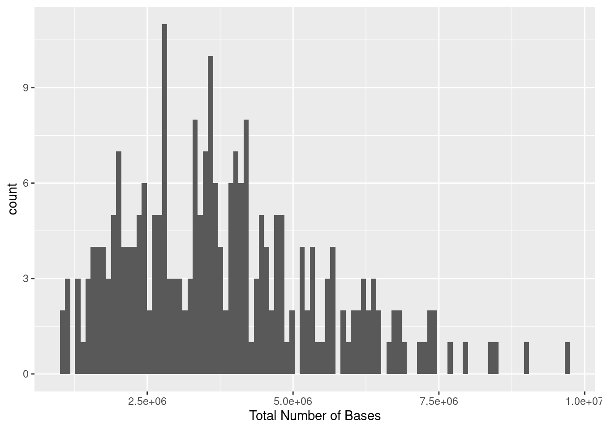
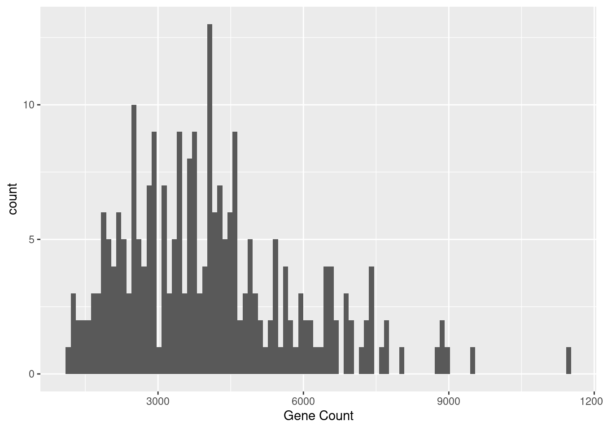
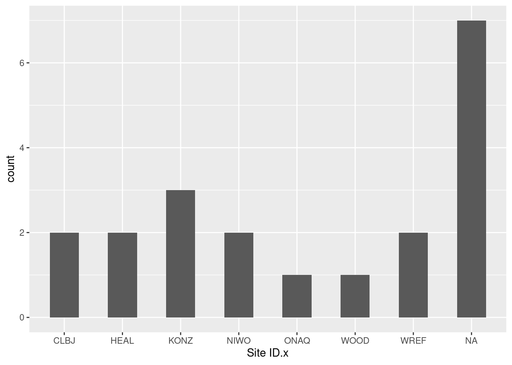
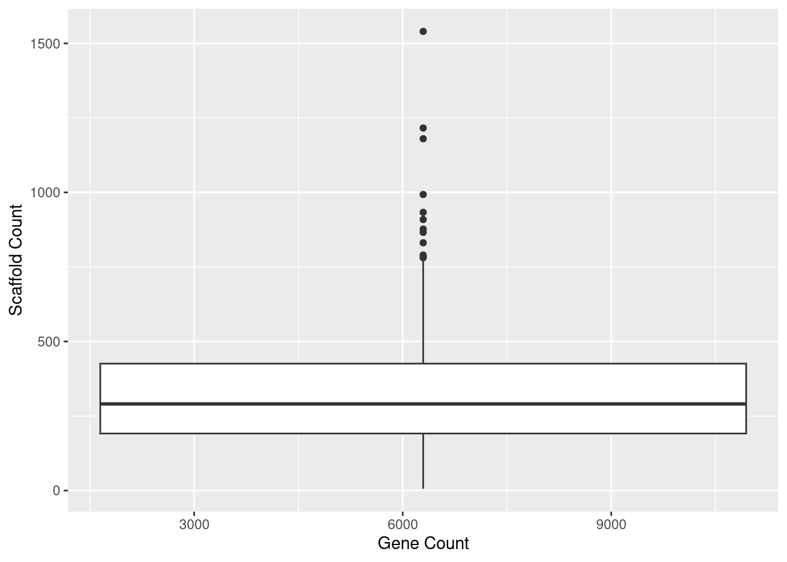

library(tidyverse)
library(knitr)Results
Libraries and Packages
if (!require("BiocManager", quietly = TRUE))
install.packages("BiocManager")
BiocManager::install("ggtree")library(tidyverse)
library(ggtree)
# added treeio and ggimage library
library(treeio)
library(ggimage)
library(rphylopic)library(tidyverse)
library(knitr)
library(ggtree)
library(TDbook) #A Companion Package for the Book "Data Integration, Manipulation and Visualization of Phylogenetic Trees" by Guangchuang Yu (2022, ISBN:9781032233574).
library(ggimage)
library(rphylopic)
library(treeio)
library(tidytree)
library(ape)
library(TreeTools)
library(phytools)
library(ggnewscale)
library(ggstar)if (!require("BiocManager", quietly = TRUE))
install.packages("BiocManager")
BiocManager::install("Biostrings")install.packages("boot")
install.packages("codetools")
install.packages("lattice")
install.packages("survival")Loaded Data
NEON_MAGs <- read_csv("data/NEON/GOLD_Study_ID_Gs0161344_NEON_edArchaea.csv") %>%
# remove columns that are not needed for data analysis
select(-c(`GOLD Study ID`, `Bin Methods`, `Created By`, `Date Added`)) %>%
# create a new column with the Assembly Type
mutate("Assembly Type" = case_when(`Genome Name` == "NEON combined assembly" ~ `Genome Name`,
TRUE ~ "Individual")) %>%
mutate_at("Assembly Type", str_replace, "NEON combined assembly", "Combined") %>%
separate(`GTDB-Tk Taxonomy Lineage`, c("Domain", "Phylum", "Class", "Order", "Family", "Genus"), "; ", remove = FALSE) %>%
# Get rid of the the common string "Soil microbial communities from "
mutate_at("Genome Name", str_replace, "Terrestrial soil microbial communities from ", "") %>%
# Use the first `-` to split the column in two
separate(`Genome Name`, c("Site","Sample Name"), " - ") %>%
# Get rid of the the common string "S-comp-1"
mutate_at("Sample Name", str_replace, "-comp-1", "") %>%
# separate the Sample Name into Site ID and plot info
separate(`Sample Name`, c("Site ID","subplot.layer.date"), "_", remove = FALSE,) %>%
# separate the plot info into 3 columns
separate(`subplot.layer.date`, c("Subplot", "Layer", "Date"), "-") NEON_metagenomes <- read_tsv("data/NEON/exported_img_data_Gs0161344_NEON.tsv") %>%
rename(`Genome Name` = `Genome Name / Sample Name`) %>%
filter(str_detect(`Genome Name`, 're-annotation', negate = T)) %>%
filter(str_detect(`Genome Name`, 'WREF plot', negate = T)) NEON_metagenomes <- NEON_metagenomes %>%
# Get rid of the the common string "Soil microbial communities from "
mutate_at("Genome Name", str_replace, "Terrestrial soil microbial communities from ", "") %>%
# Use the first `-` to split the column in two
separate(`Genome Name`, c("Site","Sample Name"), " - ") %>%
# Get rid of the the common string "-comp-1"
mutate_at("Sample Name", str_replace, "-comp-1", "") %>%
# separate the Sample Name into Site ID and plot info
separate(`Sample Name`, c("Site ID","subplot.layer.date"), "_", remove = FALSE,) %>%
# separate the plot info into 3 columns
separate(`subplot.layer.date`, c("Subplot", "Layer", "Date"), "-") NEON_chemistry <- read_tsv("data/NEON/neon_plot_soilChem1_metadata.tsv") %>%
# remove -COMP from genomicsSampleID
mutate_at("genomicsSampleID", str_replace, "-COMP", "") NEON_MAGs_metagenomes_chemistry <- NEON_MAGs %>%
left_join(NEON_metagenomes, by = "Sample Name") %>%
left_join(NEON_chemistry, by = c("Sample Name" = "genomicsSampleID"))
head(NEON_MAGs_metagenomes_chemistry)# A tibble: 6 × 93
`Bin ID` Site.x `Sample Name` `Site ID.x` Subplot.x Layer.x Date.x
<chr> <chr> <chr> <chr> <chr> <chr> <chr>
1 3300060887_39 Guanica St… GUAN_042-M-2… GUAN 042 M 20210…
2 3300060914_30 Guanica St… GUAN_043-M-2… GUAN 043 M 20210…
3 3300060650_39 Healy, Den… HEAL_048-O-2… HEAL 048 O 20210…
4 3300067032_2117 NEON combi… <NA> <NA> <NA> <NA> <NA>
5 3300060650_21 Healy, Den… HEAL_048-O-2… HEAL 048 O 20210…
6 3300060650_24 Healy, Den… HEAL_048-O-2… HEAL 048 O 20210…
# ℹ 86 more variables: `IMG Genome ID.x` <dbl>, `Bin Quality` <chr>,
# `Bin Lineage` <chr>, `GTDB-Tk Taxonomy Lineage` <chr>, Domain.x <chr>,
# Phylum <chr>, Class <chr>, Order <chr>, Family <chr>, Genus <chr>,
# `Bin Completeness` <dbl>, `Bin Contamination` <dbl>,
# `Total Number of Bases` <dbl>, `5s rRNA` <dbl>, `16s rRNA` <dbl>,
# `23s rRNA` <dbl>, `tRNA Genes` <dbl>, `Gene Count` <dbl>,
# `Scaffold Count` <dbl>, `Assembly Type` <chr>, taxon_oid <dbl>, …NEON_MAGs_metagenomes_chemistry_alphaproteobacteria <- NEON_MAGs_metagenomes_chemistry %>%
left_join(NEON_metagenomes, by = "Sample Name") %>%
left_join(NEON_chemistry, by = c("Sample Name" = "genomicsSampleID")) %>%
filter(`Class`== "Alphaproteobacteria")
head(NEON_MAGs_metagenomes_chemistry_alphaproteobacteria)# A tibble: 6 × 159
`Bin ID` Site.x `Sample Name` `Site ID.x` Subplot.x Layer.x Date.x
<chr> <chr> <chr> <chr> <chr> <chr> <chr>
1 3300061639_24 Niwot Ridge… NIWO_004-O-2… NIWO 004 O 20210…
2 3300067032_513 NEON combin… <NA> <NA> <NA> <NA> <NA>
3 3300060645_18 Caribou Cre… BONA_006-O-2… BONA 006 O 20210…
4 3300060649_28 Caribou Cre… BONA_001-O-2… BONA 001 O 20210…
5 3300060649_46 Caribou Cre… BONA_001-O-2… BONA 001 O 20210…
6 3300060656_60 Toolik Fiel… TOOL_005-O-2… TOOL 005 O 20210…
# ℹ 152 more variables: `IMG Genome ID.x` <dbl>, `Bin Quality` <chr>,
# `Bin Lineage` <chr>, `GTDB-Tk Taxonomy Lineage` <chr>, Domain.x <chr>,
# Phylum <chr>, Class <chr>, Order <chr>, Family <chr>, Genus <chr>,
# `Bin Completeness` <dbl>, `Bin Contamination` <dbl>,
# `Total Number of Bases` <dbl>, `5s rRNA` <dbl>, `16s rRNA` <dbl>,
# `23s rRNA` <dbl>, `tRNA Genes` <dbl>, `Gene Count` <dbl>,
# `Scaffold Count` <dbl>, `Assembly Type` <chr>, taxon_oid.x <dbl>, …NEON_chemistry_select <- NEON_chemistry %>%
select(`genomicsSampleID`, `siteID`, `nlcdClass`)
head(NEON_chemistry_select)# A tibble: 6 × 3
genomicsSampleID siteID nlcdClass
<chr> <chr> <chr>
1 GUAN_048-M-20210920 GUAN evergreenForest
2 GUAN_042-M-20210920 GUAN evergreenForest
3 GUAN_043-M-20210921 GUAN evergreenForest
4 GUAN_007-M-20210922 GUAN evergreenForest
5 GUAN_004-M-20210922 GUAN evergreenForest
6 GUAN_003-M-20210922 GUAN evergreenForestNEON_MAGs_select <- NEON_MAGs %>%
select(`Sample Name`, `Site ID`, `GTDB-Tk Taxonomy Lineage`)
head(NEON_MAGs)# A tibble: 6 × 27
`Bin ID` Site `Sample Name` `Site ID` Subplot Layer Date `IMG Genome ID`
<chr> <chr> <chr> <chr> <chr> <chr> <chr> <dbl>
1 3300060887_… Guan… GUAN_042-M-2… GUAN 042 M 2021… 3300060887
2 3300060914_… Guan… GUAN_043-M-2… GUAN 043 M 2021… 3300060914
3 3300060650_… Heal… HEAL_048-O-2… HEAL 048 O 2021… 3300060650
4 3300067032_… NEON… <NA> <NA> <NA> <NA> <NA> 3300067032
5 3300060650_… Heal… HEAL_048-O-2… HEAL 048 O 2021… 3300060650
6 3300060650_… Heal… HEAL_048-O-2… HEAL 048 O 2021… 3300060650
# ℹ 19 more variables: `Bin Quality` <chr>, `Bin Lineage` <chr>,
# `GTDB-Tk Taxonomy Lineage` <chr>, Domain <chr>, Phylum <chr>, Class <chr>,
# Order <chr>, Family <chr>, Genus <chr>, `Bin Completeness` <dbl>,
# `Bin Contamination` <dbl>, `Total Number of Bases` <dbl>, `5s rRNA` <dbl>,
# `16s rRNA` <dbl>, `23s rRNA` <dbl>, `tRNA Genes` <dbl>, `Gene Count` <dbl>,
# `Scaffold Count` <dbl>, `Assembly Type` <chr>filtered_data <- NEON_MAGs_metagenomes_chemistry %>%
filter(`Site.x` == "Chase Lake Wetlands")NEON_MAGs_select_WOOD <- NEON_MAGs_select %>%
filter(`Site ID`== "WOOD")
head(NEON_MAGs_select_WOOD)# A tibble: 6 × 3
`Sample Name` `Site ID` `GTDB-Tk Taxonomy Lineage`
<chr> <chr> <chr>
1 WOOD_024-M-20210714 WOOD Archaea; Nitrososphaerota
2 WOOD_004-M-20210714 WOOD Archaea; Nitrososphaerota; Nitrososphaeria
3 WOOD_005-M-20210708 WOOD Archaea; Nitrososphaerota; Nitrososphaeria; Nit…
4 WOOD_001-M-20210714 WOOD Archaea; Nitrososphaerota; Nitrososphaeria; Nit…
5 WOOD_043-M-20210712 WOOD Archaea; Nitrososphaerota; Nitrososphaeria; Nit…
6 WOOD_004-M-20210714 WOOD Archaea; Nitrososphaerota; Nitrososphaeria; Nit…NEON_metagenomes_select <- NEON_metagenomes %>%
select(`Sample Name`, `Site ID`, `Ecosystem Subtype`)
head(NEON_metagenomes_select)# A tibble: 6 × 3
`Sample Name` `Site ID` `Ecosystem Subtype`
<chr> <chr> <chr>
1 CLBJ_006-M-20210506 CLBJ Grasslands
2 CLBJ_002-M-20210506 CLBJ Grasslands
3 WOOD_004-M-20210714 WOOD Wetlands
4 TOOL_002-O-20210804 TOOL Tundra
5 WREF_004-M-20210622 WREF Temperate forest
6 TEAK_004-O-20210726 TEAK Temperate forest NEON_metagenomes_select_WOOD <- NEON_MAGs_metagenomes_chemistry %>%
filter(`Site ID.x`== "WOOD")
head(NEON_metagenomes_select_WOOD)# A tibble: 6 × 93
`Bin ID` Site.x `Sample Name` `Site ID.x` Subplot.x Layer.x Date.x
<chr> <chr> <chr> <chr> <chr> <chr> <chr>
1 3300060657_10 Chase Lake W… WOOD_024-M-2… WOOD 024 M 20210…
2 3300060885_74 Chase Lake W… WOOD_004-M-2… WOOD 004 M 20210…
3 3300060747_2 Chase Lake W… WOOD_005-M-2… WOOD 005 M 20210…
4 3300060897_37 Chase Lake W… WOOD_001-M-2… WOOD 001 M 20210…
5 3300060731_25 Chase Lake W… WOOD_043-M-2… WOOD 043 M 20210…
6 3300060885_79 Chase Lake W… WOOD_004-M-2… WOOD 004 M 20210…
# ℹ 86 more variables: `IMG Genome ID.x` <dbl>, `Bin Quality` <chr>,
# `Bin Lineage` <chr>, `GTDB-Tk Taxonomy Lineage` <chr>, Domain.x <chr>,
# Phylum <chr>, Class <chr>, Order <chr>, Family <chr>, Genus <chr>,
# `Bin Completeness` <dbl>, `Bin Contamination` <dbl>,
# `Total Number of Bases` <dbl>, `5s rRNA` <dbl>, `16s rRNA` <dbl>,
# `23s rRNA` <dbl>, `tRNA Genes` <dbl>, `Gene Count` <dbl>,
# `Scaffold Count` <dbl>, `Assembly Type` <chr>, taxon_oid <dbl>, …NEON_metagenomes_select_WOOD %>%
left_join(NEON_MAGs_select_WOOD, by = "Sample Name")# A tibble: 3,940 × 95
`Bin ID` Site.x `Sample Name` `Site ID.x` Subplot.x Layer.x Date.x
<chr> <chr> <chr> <chr> <chr> <chr> <chr>
1 3300060657_10 Chase Lake … WOOD_024-M-2… WOOD 024 M 20210…
2 3300060885_74 Chase Lake … WOOD_004-M-2… WOOD 004 M 20210…
3 3300060885_74 Chase Lake … WOOD_004-M-2… WOOD 004 M 20210…
4 3300060885_74 Chase Lake … WOOD_004-M-2… WOOD 004 M 20210…
5 3300060885_74 Chase Lake … WOOD_004-M-2… WOOD 004 M 20210…
6 3300060885_74 Chase Lake … WOOD_004-M-2… WOOD 004 M 20210…
7 3300060885_74 Chase Lake … WOOD_004-M-2… WOOD 004 M 20210…
8 3300060885_74 Chase Lake … WOOD_004-M-2… WOOD 004 M 20210…
9 3300060885_74 Chase Lake … WOOD_004-M-2… WOOD 004 M 20210…
10 3300060885_74 Chase Lake … WOOD_004-M-2… WOOD 004 M 20210…
# ℹ 3,930 more rows
# ℹ 88 more variables: `IMG Genome ID.x` <dbl>, `Bin Quality` <chr>,
# `Bin Lineage` <chr>, `GTDB-Tk Taxonomy Lineage.x` <chr>, Domain.x <chr>,
# Phylum <chr>, Class <chr>, Order <chr>, Family <chr>, Genus <chr>,
# `Bin Completeness` <dbl>, `Bin Contamination` <dbl>,
# `Total Number of Bases` <dbl>, `5s rRNA` <dbl>, `16s rRNA` <dbl>,
# `23s rRNA` <dbl>, `tRNA Genes` <dbl>, `Gene Count` <dbl>, …Graphs
1
NEON_MAGs_metagenomes_chemistry_alphaproteobacteria %>%
ggplot(aes(x = `soilTemp.x`, y = Site.x)) +
geom_boxplot()
This boxplot shows the distribution of soil temperatures at several NEON locations, including Chase Lake Wetlands. The information shows the regional variations in soil temperature.
2
ggplot(NEON_MAGs_metagenomes_chemistry_alphaproteobacteria, aes(x = `soilTemp.x`, y = `Ecosystem Subtype.x`, color = Class)) +
geom_point() +
labs(title = "Scatterplot of Soil Temperature vs Ecosystem Subtype",
x = "soilTemp",
y = "Ecosystem Subtype",
color = "Class")
The link between soil temperature and Alphaproteobacteria ecosystem subtype is seen in this scatterplot. The map makes it easier to see which subtypes of ecosystems are linked to certain temperature ranges.
3
ggplot(NEON_MAGs_metagenomes_chemistry_alphaproteobacteria, aes(x = `soilInCaClpH.x`, y = nlcdClass.x, color = Class)) +
geom_point() +
labs(title = "soilInCaClpH vs nlcdClass",
x = "soilInCaClpH",
y = "nlcdClass",
color = "Class")
This scatterplot shows how soil pH affects the distribution of Alphaproteobacteria across various land cover types by displaying the link between soil pH and the National Land Cover Database (NLCD) class.
4
NEON_MAGs_metagenomes_chemistry_alphaproteobacteria %>%
ggplot(aes(x = `Total Number of Bases`)) +
geom_histogram(bins = 100) 
The overall distribution of total bases in the Alpha-Proteobacteria genomic data is represented by this histogram, which also displays the frequency of various sequence lengths.
NEON_MAGs_metagenomes_chemistry_alphaproteobacteria %>%
filter(is.na(Domain) | is.na(Phylum) | is.na(Class) | is.na(Order) | is.na(Family) | is.na(Genus)) %>%
# Add another operation here, e.g., select specific columns
select(Domain, Phylum, Class, Order, Family, Genus)# A tibble: 20 × 6
Domain Phylum Class Order Family Genus
<chr> <chr> <chr> <chr> <chr> <chr>
1 *Microbiome Proteobacteria Alphaproteobacteria Micavibrionales GCA-272… <NA>
2 *Microbiome Proteobacteria Alphaproteobacteria Micavibrionales GCA-272… <NA>
3 *Microbiome Proteobacteria Alphaproteobacteria ATCC43930 Stellac… <NA>
4 *Microbiome Proteobacteria Alphaproteobacteria CADEGL01 <NA> <NA>
5 *Microbiome Proteobacteria Alphaproteobacteria ATCC43930 Stellac… <NA>
6 *Microbiome Proteobacteria Alphaproteobacteria Rhizobiales Xanthob… <NA>
7 *Microbiome Proteobacteria Alphaproteobacteria Rhizobiales Xanthob… <NA>
8 *Microbiome Proteobacteria Alphaproteobacteria Rhizobiales Aestuar… <NA>
9 *Microbiome Proteobacteria Alphaproteobacteria Rhizobiales Xanthob… <NA>
10 *Microbiome Proteobacteria Alphaproteobacteria Rhizobiales Aestuar… <NA>
11 *Microbiome Proteobacteria Alphaproteobacteria Rhizobiales Aestuar… <NA>
12 *Microbiome Proteobacteria Alphaproteobacteria Rhizobiales Afifell… <NA>
13 *Microbiome Proteobacteria Alphaproteobacteria Rhizobiales Xanthob… <NA>
14 *Microbiome Proteobacteria Alphaproteobacteria Rhizobiales Xanthob… <NA>
15 *Microbiome Proteobacteria Alphaproteobacteria Rhizobiales Xanthob… <NA>
16 *Microbiome Proteobacteria Alphaproteobacteria Rhizobiales Methylo… <NA>
17 *Microbiome Proteobacteria Alphaproteobacteria Rhizobiales Kaistia… <NA>
18 *Microbiome Proteobacteria Alphaproteobacteria ATCC43930 Stellac… <NA>
19 *Microbiome Proteobacteria Alphaproteobacteria ATCC43930 Stellac… <NA>
20 *Microbiome Proteobacteria Alphaproteobacteria ATCC43930 Stellac… <NA> 5
NEON_MAGs_metagenomes_chemistry_alphaproteobacteria %>%
filter(is.na(Domain) | is.na(Phylum)| is.na(Class) | is.na(Order) | is.na(Family) | is.na(Genus)) %>%
ggplot(aes(x = `Bin Quality`)) +
geom_bar(width = 0.5)
This bar graph displays the high quality (HQ) and medium quality (MQ) genomic assemblies of alpha-proteobacteria bins.
6
NEON_MAGs_metagenomes_chemistry_alphaproteobacteria %>%
ggplot(aes(x = fct_infreq(`Site ID`))) +
geom_bar() +
coord_flip()
This bar plot shows the frequency of Alpha-Proteobacteria sequences across different NEON sites.
7
NEON_MAGs_metagenomes_chemistry_alphaproteobacteria %>%
ggplot(aes(x = `Gene Count`)) +
geom_histogram(bins = 100) 
This histogram shows how many Alphaproteobacteria have a certain number of genes.
8
NEON_MAGs_metagenomes_chemistry_alphaproteobacteria %>%
ggplot(aes(x = `tRNA Genes`)) +
geom_histogram(bins = 100) 
This histogram shows the distribution of gene counts and tRNA genes in the Alpha-Proteobacteria genomic data, illustrating the genomic complexity of these bacteria.
9
NEON_MAGs_metagenomes_chemistry_alphaproteobacteria %>%
filter(is.na(Domain) | is.na(Phylum)| is.na(Class) | is.na(Order) | is.na(Family) | is.na(Genus)) %>%
ggplot(aes(x = `Assembly Type`)) +
geom_bar(width = 0.5)This graph shows the taxonomic data across different assembly types. This could help in identifying if certain assembly types are more prone to producing incomplete taxonomic information.
10
NEON_MAGs_metagenomes_chemistry_alphaproteobacteria %>%
filter(is.na(Domain) | is.na(Phylum)| is.na(Class) | is.na(Order) | is.na(Family) | is.na(Genus)) %>%
ggplot(aes(x = `Site ID.x`)) +
geom_bar(width = 0.5)
This bar plot shows the distribution of genomic assemblies by type (combined vs. individual) and by site ID for Alphaproteobacteria.
11
NEON_MAGs_metagenomes_chemistry_alphaproteobacteria %>%
ggplot(aes(x = `Scaffold Count`, y = `Site.x`)) +
geom_boxplot()
This boxplot shows the distribution of scaffold counts (segments of DNA) across different sites and ecosystem subtypes.
12
ggplot(NEON_MAGs_metagenomes_chemistry_alphaproteobacteria, aes(x = `Depth In Meters.x`, y = `Elevation In Meters.x`, color = Class)) +
geom_point() +
labs(title = "Depth In Meters vs Elevation In Meters",
x = "Depth In Meters",
y = "Elevation In Meters",
color = "Class")
The scatter plot shows the relationship between the depth and elevation of the class alphaproteobacteria. Each point represents a sample taken at a specific depth and elevation.
13
ggplot(NEON_MAGs_metagenomes_chemistry_alphaproteobacteria, aes(x = `Bin Completeness`, y = `Bin Contamination`, color = Class)) +
geom_point() +
labs(title = "Bin Completeness vs Bin Contamination",
x = "Bin Completeness",
y = "Bin Contamination",
color = "Class")
This scatterplot shows the relationship between bin completeness and contamination in alphaproteobacteria.
14
ggplot(NEON_MAGs_metagenomes_chemistry_alphaproteobacteria, aes(x = `Gene Count`, y = `Scaffold Count`, color = Class)) +
geom_point() +
labs(title = "Gene Count vs Scaffold Count",
x = "Gene Count",
y = "Scaffold Count",
color = "Class")
15
NEON_MAGs_metagenomes_chemistry_alphaproteobacteria %>%
ggplot(aes(x = `Gene Count`, y = `Scaffold Count`)) +
geom_boxplot()
This scatterplot and boxplot show the relationship between gene count and scaffold count for Alpha-Proteobacteria, indicating the genomic assembly quality.
NEON_MAGs <- read_csv("data/NEON/GOLD_Study_ID_Gs0161344_NEON_2024_4_21.csv") %>%
# remove columns that are not needed for data analysis
select(-c(`GOLD Study ID`, `Bin Methods`, `Created By`, `Date Added`, `Bin Lineage`)) %>%
# create a new column with the Assembly Type
mutate("Assembly Type" = case_when(`Genome Name` == "NEON combined assembly" ~ `Genome Name`,
TRUE ~ "Individual")) %>%
mutate_at("Assembly Type", str_replace, "NEON combined assembly", "Combined") %>%
mutate_at("GTDB-Tk Taxonomy Lineage", str_replace, "d__", "") %>%
mutate_at("GTDB-Tk Taxonomy Lineage", str_replace, "p__", "") %>%
mutate_at("GTDB-Tk Taxonomy Lineage", str_replace, "c__", "") %>%
mutate_at("GTDB-Tk Taxonomy Lineage", str_replace, "o__", "") %>%
mutate_at("GTDB-Tk Taxonomy Lineage", str_replace, "f__", "") %>%
mutate_at("GTDB-Tk Taxonomy Lineage", str_replace, "g__", "") %>%
mutate_at("GTDB-Tk Taxonomy Lineage", str_replace, "s__", "") %>%
separate(`GTDB-Tk Taxonomy Lineage`, c("Domain", "Phylum", "Class", "Order", "Family", "Genus", "Species"), ";", remove = FALSE) %>%
mutate_at("Domain", na_if,"") %>%
mutate_at("Phylum", na_if,"") %>%
mutate_at("Class", na_if,"") %>%
mutate_at("Order", na_if,"") %>%
mutate_at("Family", na_if,"") %>%
mutate_at("Genus", na_if,"") %>%
mutate_at("Species", na_if,"") %>%
# Get rid of the the common string "Soil microbial communities from "
mutate_at("Genome Name", str_replace, "Terrestrial soil microbial communities from ", "") %>%
# Use the first `-` to split the column in two
separate(`Genome Name`, c("Site","Sample Name"), " - ") %>%
# Get rid of the the common string "S-comp-1"
mutate_at("Sample Name", str_replace, "-comp-1", "") %>%
# separate the Sample Name into Site ID and plot info
separate(`Sample Name`, c("Site ID","subplot.layer.date"), "_", remove = FALSE,) %>%
# separate the plot info into 3 columns
separate(`subplot.layer.date`, c("Subplot", "Layer", "Date"), "-") NEON_metagenomes <- read_tsv("data/NEON/exported_img_data_Gs0161344_NEON.tsv") %>%
select(-c(`Domain`, `Sequencing Status`, `Sequencing Center`)) %>%
rename(`Genome Name` = `Genome Name / Sample Name`) %>%
filter(str_detect(`Genome Name`, 're-annotation', negate = T)) %>%
filter(str_detect(`Genome Name`, 'WREF plot', negate = T)) NEON_metagenomes <- NEON_metagenomes %>%
# Get rid of the the common string "Soil microbial communities from "
mutate_at("Genome Name", str_replace, "Terrestrial soil microbial communities from ", "") %>%
# Use the first `-` to split the column in two
separate(`Genome Name`, c("Site","Sample Name"), " - ") %>%
# Get rid of the the common string "-comp-1"
mutate_at("Sample Name", str_replace, "-comp-1", "") %>%
# separate the Sample Name into Site ID and plot info
separate(`Sample Name`, c("Site ID","subplot.layer.date"), "_", remove = FALSE,) %>%
# separate the plot info into 3 columns
separate(`subplot.layer.date`, c("Subplot", "Layer", "Date"), "-")NEON_chemistry <- read_tsv("data/NEON/neon_plot_soilChem1_metadata.tsv") %>%
# remove -COMP from genomicsSampleID
mutate_at("genomicsSampleID", str_replace, "-COMP", "") NEON_MAGs_metagenomes_chemistry <- NEON_MAGs %>%
left_join(NEON_metagenomes, by = "Sample Name") %>%
left_join(NEON_chemistry, by = c("Sample Name" = "genomicsSampleID")) %>%
rename("label" = "Bin ID")tree_arc <- read.tree("data/NEON/gtdbtk.ar53.decorated(1).tree")
tree_bac <- read.tree("data/NEON/gtdbtk.bac120.decorated.tree")# Make a vector with the internal node labels
node_vector_bac = c(tree_bac$tip.label,tree_bac$node.label)
# Search for your Phylum or Class to get the node
grep("Alpha", node_vector_bac, value = TRUE)[1] "'1.0:c__Alphaproteobacteria'"match(grep("Alpha", node_vector_bac, value = TRUE), node_vector_bac)[1] 3171# First need to preorder tree before extracting. N
tree_bac_preorder <- Preorder(tree_bac)
tree_Alpha <- Subtree(tree_bac_preorder, 3171)NEON_MAGs_Alpha <- NEON_MAGs_metagenomes_chemistry %>%
filter(Phylum == "Alpha") 16
ggtree(tree_Alpha) +
geom_tiplab(size=8) +
xlim(0,40)
The graph shows the phylogenetic relationships among the taxa represented in alphaproteobacteria.
17
ggtree(tree_Alpha, layout="circular") %<+%
NEON_MAGs_metagenomes_chemistry +
geom_tiplab(size=2, hjust=-.1) +
xlim(0,30) +
geom_point(mapping=aes(color=Class))
This circular phylogenetic tree represents the evolutionary relationships among Alpha-Proteobacteria, with annotations for different sites and assembly types.
NEON_MAGs <- read_csv("data/NEON/GOLD_Study_ID_Gs0161344_NEON.csv") %>%
# remove columns that are not needed for data analysis
select(-c(`GOLD Study ID`, `Bin Methods`, `Created By`, `Date Added`)) %>%
# create a new column with the Assembly Type
mutate("Assembly Type" = case_when(`Genome Name` == "NEON combined assembly" ~ `Genome Name`,
TRUE ~ "Individual")) %>%
mutate_at("Assembly Type", str_replace, "NEON combined assembly", "Combined") %>%
separate(`GTDB-Tk Taxonomy Lineage`, c("Domain", "Phylum", "Class", "Order", "Family", "Genus"), "; ", remove = FALSE) %>%
# Get rid of the the common string "Soil microbial communities from "
mutate_at("Genome Name", str_replace, "Terrestrial soil microbial communities from ", "") %>%
# Use the first `-` to split the column in two
separate(`Genome Name`, c("Site","Sample Name"), " - ") %>%
# Get rid of the the common string "S-comp-1"
mutate_at("Sample Name", str_replace, "-comp-1", "") %>%
# separate the Sample Name into Site ID and plot info
separate(`Sample Name`, c("Site ID","subplot.layer.date"), "_", remove = FALSE,) %>%
# separate the plot info into 3 columns
separate(`subplot.layer.date`, c("Subplot", "Layer", "Date"), "-")NEON_MAGs_bact_ind <- NEON_MAGs %>%
filter(Domain == "Bacteria") %>%
filter(`Assembly Type` == "Individual") 18
colnames(NEON_MAGs_bact_ind) [1] "Bin ID" "Site"
[3] "Sample Name" "Site ID"
[5] "Subplot" "Layer"
[7] "Date" "IMG Genome ID"
[9] "Bin Quality" "Bin Lineage"
[11] "GTDB-Tk Taxonomy Lineage" "Domain"
[13] "Phylum" "Class"
[15] "Order" "Family"
[17] "Genus" "Bin Completeness"
[19] "Bin Contamination" "Total Number of Bases"
[21] "5s rRNA" "16s rRNA"
[23] "23s rRNA" "tRNA Genes"
[25] "Gene Count" "Scaffold Count"
[27] "Assembly Type" NEON_MAGs_bact_ind %>%
ggplot(aes(x = `Site ID`, y = `Phylum`, color = Phylum)) +
geom_point() +
labs(title = "Site ID vs Number of Genes by Phylum")
This is a scatter plot that shows how different phyla’s gene numbers are distributed across each site. Every dot is a unique combination of a site and a phylum; the phylum is shown by the dot’s position on the y-axis, and the site is indicated by its position on the x-axis. The legend on the right side of the graph indicates which phyla are represented by the color of the dots.
19
NEON_MAGs_bact_ind %>%
filter(`Site ID` == "WOOD") %>%
ggplot(aes(x = `Site ID`, y = `Phylum`, color = Phylum)) +
geom_point() +
labs(title = "Site ID vs Phylum for Site 'WOOD'") +
theme(axis.text.x = element_text(angle = 45, hjust = 1)) 
This graph shows all the different phyla at the WOOD site.
20
filtered_data <- NEON_MAGs_bact_ind %>%
filter(Phylum == "Proteobacteria")
ggplot(filtered_data, aes(x = `Site ID`, y = `Phylum`, color = Phylum)) +
geom_point() +
labs(title = "Site ID vs Phylum: Proteobacteria") +
theme(axis.text.x = element_text(angle = 45, hjust = 1), plot.title = element_text(hjust = 0.5))
This graph shows all the sites where Proteobacteria is present.
NEON_MAGs <- read_csv("data/NEON/GOLD_Study_ID_Gs0161344_NEON.csv") %>%
# remove columns that are not needed for data analysis
select(-c(`GOLD Study ID`, `Bin Methods`, `Created By`, `Date Added`)) %>%
# create a new column with the Assembly Type
mutate("Assembly Type" = case_when(`Genome Name` == "NEON combined assembly" ~ `Genome Name`,
TRUE ~ "Individual")) %>%
mutate_at("Assembly Type", str_replace, "NEON combined assembly", "Combined") %>%
separate(`GTDB-Tk Taxonomy Lineage`, c("Domain", "Phylum", "Class", "Order", "Family", "Genus"), "; ", remove = FALSE) %>%
# Get rid of the the common string "Soil microbial communities from "
mutate_at("Genome Name", str_replace, "Terrestrial soil microbial communities from ", "") %>%
# Use the first `-` to split the column in two
separate(`Genome Name`, c("Site","Sample Name"), " - ") %>%
# Get rid of the the common string "S-comp-1"
mutate_at("Sample Name", str_replace, "-comp-1", "") %>%
# separate the Sample Name into Site ID and plot info
separate(`Sample Name`, c("Site ID","subplot.layer.date"), "_", remove = FALSE,) %>%
# separate the plot info into 3 columns
separate(`subplot.layer.date`, c("Subplot", "Layer", "Date"), "-")kable(
NEON_MAGs %>%
filter(Site == "Chase Lake Wetlands, North Dakota, USA")
)| Bin ID | Site | Sample Name | Site ID | Subplot | Layer | Date | IMG Genome ID | Bin Quality | Bin Lineage | GTDB-Tk Taxonomy Lineage | Domain | Phylum | Class | Order | Family | Genus | Bin Completeness | Bin Contamination | Total Number of Bases | 5s rRNA | 16s rRNA | 23s rRNA | tRNA Genes | Gene Count | Scaffold Count | Assembly Type |
|---|---|---|---|---|---|---|---|---|---|---|---|---|---|---|---|---|---|---|---|---|---|---|---|---|---|---|
| 3300060657_10 | Chase Lake Wetlands, North Dakota, USA | WOOD_024-M-20210714 | WOOD | 024 | M | 20210714 | 3300060657 | MQ | Archaea; Nitrososphaerota | NA | NA | NA | NA | NA | NA | NA | 66.26 | 2.91 | 2030835 | 1 | 0 | 0 | 27 | 2485 | 330 | Individual |
| 3300060731_10 | Chase Lake Wetlands, North Dakota, USA | WOOD_043-M-20210712 | WOOD | 043 | M | 20210712 | 3300060731 | MQ | Bacteria; Actinomycetota; Thermoleophilia; Solirubrobacterales | Bacteria; Actinobacteriota; Thermoleophilia; Solirubrobacterales; 70-9; VAYN01 | Bacteria | Actinobacteriota | Thermoleophilia | Solirubrobacterales | 70-9 | VAYN01 | 53.10 | 1.72 | 1178374 | 0 | 0 | 0 | 23 | 1415 | 219 | Individual |
| 3300060731_13 | Chase Lake Wetlands, North Dakota, USA | WOOD_043-M-20210712 | WOOD | 043 | M | 20210712 | 3300060731 | MQ | Bacteria; Pseudomonadota; Alphaproteobacteria; Hyphomicrobiales | Bacteria; Proteobacteria; Alphaproteobacteria; Rhizobiales; Xanthobacteraceae; VAZQ01 | Bacteria | Proteobacteria | Alphaproteobacteria | Rhizobiales | Xanthobacteraceae | VAZQ01 | 87.51 | 8.18 | 6262974 | 0 | 0 | 0 | 36 | 6571 | 653 | Individual |
| 3300060731_15 | Chase Lake Wetlands, North Dakota, USA | WOOD_043-M-20210712 | WOOD | 043 | M | 20210712 | 3300060731 | MQ | Bacteria; Actinomycetota; Actinomycetes | Bacteria; Actinobacteriota; Actinomycetia; Sporichthyales; Sporichthyaceae | Bacteria | Actinobacteriota | Actinomycetia | Sporichthyales | Sporichthyaceae | NA | 79.56 | 5.73 | 5113319 | 1 | 1 | 1 | 53 | 5587 | 640 | Individual |
| 3300060731_25 | Chase Lake Wetlands, North Dakota, USA | WOOD_043-M-20210712 | WOOD | 043 | M | 20210712 | 3300060731 | MQ | Archaea; Nitrososphaerota; Nitrososphaeria; Nitrososphaerales; Nitrososphaeraceae; Nitrososphaera; Candidatus Nitrososphaera evergladensis | NA | NA | NA | NA | NA | NA | NA | 54.98 | 0.97 | 752672 | 1 | 0 | 0 | 16 | 828 | 76 | Individual |
| 3300060731_31 | Chase Lake Wetlands, North Dakota, USA | WOOD_043-M-20210712 | WOOD | 043 | M | 20210712 | 3300060731 | MQ | Bacteria; Actinomycetota | Bacteria; Actinobacteriota; Thermoleophilia; Gaiellales; Gaiellaceae; AC-32 | Bacteria | Actinobacteriota | Thermoleophilia | Gaiellales | Gaiellaceae | AC-32 | 60.34 | 4.31 | 1510041 | 1 | 1 | 1 | 15 | 1817 | 246 | Individual |
| 3300060731_32 | Chase Lake Wetlands, North Dakota, USA | WOOD_043-M-20210712 | WOOD | 043 | M | 20210712 | 3300060731 | MQ | Bacteria; Pseudomonadota; Alphaproteobacteria; Hyphomicrobiales | Bacteria; Proteobacteria; Alphaproteobacteria; Rhizobiales; Xanthobacteraceae; VAZQ01 | Bacteria | Proteobacteria | Alphaproteobacteria | Rhizobiales | Xanthobacteraceae | VAZQ01 | 84.33 | 1.27 | 4754381 | 1 | 0 | 1 | 28 | 4801 | 290 | Individual |
| 3300060731_40 | Chase Lake Wetlands, North Dakota, USA | WOOD_043-M-20210712 | WOOD | 043 | M | 20210712 | 3300060731 | MQ | Bacteria; Actinomycetota | Bacteria; Actinobacteriota; Acidimicrobiia; Acidimicrobiales; Ilumatobacteraceae; JACCUL01 | Bacteria | Actinobacteriota | Acidimicrobiia | Acidimicrobiales | Ilumatobacteraceae | JACCUL01 | 71.98 | 7.55 | 4734007 | 0 | 0 | 0 | 46 | 5148 | 653 | Individual |
| 3300060731_44 | Chase Lake Wetlands, North Dakota, USA | WOOD_043-M-20210712 | WOOD | 043 | M | 20210712 | 3300060731 | MQ | Bacteria; Actinomycetota; Actinomycetes | Bacteria; Actinobacteriota; Actinomycetia; Jiangellales; Jiangellaceae | Bacteria | Actinobacteriota | Actinomycetia | Jiangellales | Jiangellaceae | NA | 58.62 | 0.00 | 2791030 | 0 | 0 | 0 | 24 | 3249 | 479 | Individual |
| 3300060731_46 | Chase Lake Wetlands, North Dakota, USA | WOOD_043-M-20210712 | WOOD | 043 | M | 20210712 | 3300060731 | MQ | Bacteria; Actinomycetota; Thermoleophilia | Bacteria; Actinobacteriota; Thermoleophilia; Solirubrobacterales; 70-9; VGBV01 | Bacteria | Actinobacteriota | Thermoleophilia | Solirubrobacterales | 70-9 | VGBV01 | 50.00 | 3.45 | 1627567 | 0 | 0 | 0 | 25 | 2013 | 354 | Individual |
| 3300060731_55 | Chase Lake Wetlands, North Dakota, USA | WOOD_043-M-20210712 | WOOD | 043 | M | 20210712 | 3300060731 | MQ | Bacteria; Actinomycetota; Actinomycetes | Bacteria; Actinobacteriota; Actinomycetia | Bacteria | Actinobacteriota | Actinomycetia | NA | NA | NA | 50.86 | 7.76 | 10920999 | 0 | 1 | 0 | 185 | 13026 | 2109 | Individual |
| 3300060732_16 | Chase Lake Wetlands, North Dakota, USA | WOOD_003-M-20210708 | WOOD | 003 | M | 20210708 | 3300060732 | MQ | Bacteria; Actinomycetota; Rubrobacteria | Bacteria; Actinobacteriota; Thermoleophilia; Gaiellales; Gaiellaceae; AC-32 | Bacteria | Actinobacteriota | Thermoleophilia | Gaiellales | Gaiellaceae | AC-32 | 75.20 | 8.28 | 1998121 | 1 | 0 | 1 | 33 | 2352 | 246 | Individual |
| 3300060732_20 | Chase Lake Wetlands, North Dakota, USA | WOOD_003-M-20210708 | WOOD | 003 | M | 20210708 | 3300060732 | MQ | Bacteria; Actinomycetota | Bacteria; Actinobacteriota; UBA4738; UBA4738; HRBIN12; AC-51 | Bacteria | Actinobacteriota | UBA4738 | UBA4738 | HRBIN12 | AC-51 | 58.97 | 1.99 | 1603172 | 1 | 0 | 1 | 34 | 1857 | 285 | Individual |
| 3300060732_21 | Chase Lake Wetlands, North Dakota, USA | WOOD_003-M-20210708 | WOOD | 003 | M | 20210708 | 3300060732 | MQ | Bacteria; Actinomycetota | Bacteria; Actinobacteriota; Thermoleophilia; Gaiellales; Gaiellaceae | Bacteria | Actinobacteriota | Thermoleophilia | Gaiellales | Gaiellaceae | NA | 82.47 | 1.67 | 2472181 | 1 | 1 | 1 | 39 | 2836 | 262 | Individual |
| 3300060732_26 | Chase Lake Wetlands, North Dakota, USA | WOOD_003-M-20210708 | WOOD | 003 | M | 20210708 | 3300060732 | MQ | Bacteria; Actinomycetota | Bacteria; Actinobacteriota; UBA4738; UBA4738; HRBIN12; AC-51 | Bacteria | Actinobacteriota | UBA4738 | UBA4738 | HRBIN12 | AC-51 | 65.00 | 1.99 | 1587300 | 0 | 1 | 0 | 43 | 1851 | 245 | Individual |
| 3300060732_28 | Chase Lake Wetlands, North Dakota, USA | WOOD_003-M-20210708 | WOOD | 003 | M | 20210708 | 3300060732 | MQ | Bacteria; Pseudomonadota; Alphaproteobacteria; Hyphomicrobiales | Bacteria; Proteobacteria; Alphaproteobacteria; Rhizobiales; Xanthobacteraceae; VAZQ01 | Bacteria | Proteobacteria | Alphaproteobacteria | Rhizobiales | Xanthobacteraceae | VAZQ01 | 88.53 | 1.85 | 4741244 | 0 | 0 | 0 | 28 | 4879 | 383 | Individual |
| 3300060732_32 | Chase Lake Wetlands, North Dakota, USA | WOOD_003-M-20210708 | WOOD | 003 | M | 20210708 | 3300060732 | MQ | Bacteria; Pseudomonadota; Alphaproteobacteria; Hyphomicrobiales | Bacteria; Proteobacteria; Alphaproteobacteria; Rhizobiales; Xanthobacteraceae; VAZQ01 | Bacteria | Proteobacteria | Alphaproteobacteria | Rhizobiales | Xanthobacteraceae | VAZQ01 | 88.87 | 4.45 | 5816643 | 0 | 1 | 0 | 50 | 6119 | 403 | Individual |
| 3300060732_39 | Chase Lake Wetlands, North Dakota, USA | WOOD_003-M-20210708 | WOOD | 003 | M | 20210708 | 3300060732 | MQ | Bacteria; Actinomycetota; Actinomycetes; Propionibacteriales | Bacteria; Actinobacteriota; Actinomycetia; Propionibacteriales; Propionibacteriaceae | Bacteria | Actinobacteriota | Actinomycetia | Propionibacteriales | Propionibacteriaceae | NA | 58.39 | 8.68 | 2172924 | 0 | 0 | 0 | 16 | 2419 | 323 | Individual |
| 3300060747_17 | Chase Lake Wetlands, North Dakota, USA | WOOD_005-M-20210708 | WOOD | 005 | M | 20210708 | 3300060747 | MQ | Bacteria; Actinomycetota; Actinomycetes; Propionibacteriales | Bacteria; Actinobacteriota; Actinomycetia; Propionibacteriales; Propionibacteriaceae | Bacteria | Actinobacteriota | Actinomycetia | Propionibacteriales | Propionibacteriaceae | NA | 56.58 | 2.94 | 2412495 | 0 | 0 | 0 | 32 | 2726 | 321 | Individual |
| 3300060747_2 | Chase Lake Wetlands, North Dakota, USA | WOOD_005-M-20210708 | WOOD | 005 | M | 20210708 | 3300060747 | MQ | Archaea; Nitrososphaerota; Nitrososphaeria; Nitrososphaerales; Nitrososphaeraceae | NA | NA | NA | NA | NA | NA | NA | 68.58 | 6.96 | 1233323 | 0 | 0 | 0 | 14 | 1391 | 207 | Individual |
| 3300060747_21 | Chase Lake Wetlands, North Dakota, USA | WOOD_005-M-20210708 | WOOD | 005 | M | 20210708 | 3300060747 | MQ | Bacteria; Pseudomonadota; Alphaproteobacteria; Hyphomicrobiales | Bacteria; Proteobacteria; Alphaproteobacteria; Rhizobiales; Xanthobacteraceae; VAZQ01 | Bacteria | Proteobacteria | Alphaproteobacteria | Rhizobiales | Xanthobacteraceae | VAZQ01 | 66.35 | 2.22 | 3979948 | 1 | 0 | 1 | 24 | 4202 | 449 | Individual |
| 3300060747_32 | Chase Lake Wetlands, North Dakota, USA | WOOD_005-M-20210708 | WOOD | 005 | M | 20210708 | 3300060747 | HQ | Bacteria; Actinomycetota; Thermoleophilia; Solirubrobacterales | Bacteria; Actinobacteriota; Thermoleophilia; Solirubrobacterales; 70-9 | Bacteria | Actinobacteriota | Thermoleophilia | Solirubrobacterales | 70-9 | NA | 97.41 | 3.45 | 2105148 | 1 | 1 | 1 | 53 | 2223 | 49 | Individual |
| 3300060853_13 | Chase Lake Wetlands, North Dakota, USA | WOOD_002-M-20210708 | WOOD | 002 | M | 20210708 | 3300060853 | MQ | Bacteria; Actinomycetota; Actinomycetes | Bacteria; Actinobacteriota; Actinomycetia | Bacteria | Actinobacteriota | Actinomycetia | NA | NA | NA | 67.90 | 3.28 | 3371559 | 0 | 0 | 0 | 40 | 3746 | 439 | Individual |
| 3300060853_14 | Chase Lake Wetlands, North Dakota, USA | WOOD_002-M-20210708 | WOOD | 002 | M | 20210708 | 3300060853 | MQ | Bacteria; Pseudomonadota; Gammaproteobacteria; Nevskiales; Steroidobacteraceae | Bacteria; Proteobacteria; Gammaproteobacteria; Steroidobacterales; Steroidobacteraceae; Steroidobacter_A | Bacteria | Proteobacteria | Gammaproteobacteria | Steroidobacterales | Steroidobacteraceae | Steroidobacter_A | 79.96 | 3.65 | 4200146 | 0 | 0 | 0 | 16 | 4090 | 416 | Individual |
| 3300060853_25 | Chase Lake Wetlands, North Dakota, USA | WOOD_002-M-20210708 | WOOD | 002 | M | 20210708 | 3300060853 | MQ | Bacteria; Actinomycetota | Bacteria; Actinobacteriota; Thermoleophilia; Gaiellales; Gaiellaceae; JACDAN01 | Bacteria | Actinobacteriota | Thermoleophilia | Gaiellales | Gaiellaceae | JACDAN01 | 59.11 | 1.29 | 1799252 | 1 | 0 | 1 | 29 | 2076 | 189 | Individual |
| 3300060853_42 | Chase Lake Wetlands, North Dakota, USA | WOOD_002-M-20210708 | WOOD | 002 | M | 20210708 | 3300060853 | MQ | Bacteria; Pseudomonadota; Alphaproteobacteria; Hyphomicrobiales; Hyphomicrobiaceae; Methyloceanibacter | Bacteria; Proteobacteria; Alphaproteobacteria; Rhizobiales; Methyloligellaceae; Methyloceanibacter | Bacteria | Proteobacteria | Alphaproteobacteria | Rhizobiales | Methyloligellaceae | Methyloceanibacter | 50.00 | 1.72 | 1358104 | 0 | 0 | 0 | 11 | 1542 | 198 | Individual |
| 3300060853_48 | Chase Lake Wetlands, North Dakota, USA | WOOD_002-M-20210708 | WOOD | 002 | M | 20210708 | 3300060853 | MQ | Bacteria; Actinomycetota; Actinomycetes | Bacteria; Actinobacteriota; Actinomycetia; Sporichthyales; Sporichthyaceae | Bacteria | Actinobacteriota | Actinomycetia | Sporichthyales | Sporichthyaceae | NA | 64.24 | 0.70 | 2143694 | 1 | 0 | 1 | 17 | 2311 | 288 | Individual |
| 3300060853_9 | Chase Lake Wetlands, North Dakota, USA | WOOD_002-M-20210708 | WOOD | 002 | M | 20210708 | 3300060853 | MQ | Bacteria; Actinomycetota | Bacteria; Actinobacteriota; Thermoleophilia; Gaiellales; Gaiellaceae | Bacteria | Actinobacteriota | Thermoleophilia | Gaiellales | Gaiellaceae | NA | 84.05 | 9.31 | 2465910 | 0 | 1 | 0 | 57 | 2864 | 217 | Individual |
| 3300060884_10 | Chase Lake Wetlands, North Dakota, USA | WOOD_042-M-20210712 | WOOD | 042 | M | 20210712 | 3300060884 | MQ | Bacteria; Actinomycetota; Actinomycetes; Micrococcales; Microbacteriaceae | Bacteria; Actinobacteriota; Actinomycetia; Actinomycetales; Microbacteriaceae; ZJ450 | Bacteria | Actinobacteriota | Actinomycetia | Actinomycetales | Microbacteriaceae | ZJ450 | 63.39 | 2.60 | 1957947 | 1 | 0 | 0 | 20 | 2161 | 289 | Individual |
| 3300060884_13 | Chase Lake Wetlands, North Dakota, USA | WOOD_042-M-20210712 | WOOD | 042 | M | 20210712 | 3300060884 | MQ | Bacteria; Actinomycetota; Actinomycetes | Bacteria; Actinobacteriota | Bacteria | Actinobacteriota | NA | NA | NA | NA | 84.59 | 7.79 | 5041214 | 1 | 0 | 1 | 50 | 5143 | 450 | Individual |
| 3300060884_21 | Chase Lake Wetlands, North Dakota, USA | WOOD_042-M-20210712 | WOOD | 042 | M | 20210712 | 3300060884 | MQ | Bacteria; Actinomycetota; Actinomycetes; Micrococcales; Micrococcaceae | Bacteria; Actinobacteriota; Actinomycetia; Actinomycetales; Micrococcaceae; Citricoccus | Bacteria | Actinobacteriota | Actinomycetia | Actinomycetales | Micrococcaceae | Citricoccus | 56.03 | 0.00 | 2168538 | 0 | 0 | 0 | 33 | 2108 | 257 | Individual |
| 3300060884_26 | Chase Lake Wetlands, North Dakota, USA | WOOD_042-M-20210712 | WOOD | 042 | M | 20210712 | 3300060884 | HQ | Bacteria; Actinomycetota | Bacteria; Actinobacteriota; UBA4738; UBA4738; UBA4738 | Bacteria | Actinobacteriota | UBA4738 | UBA4738 | UBA4738 | NA | 90.60 | 0.85 | 2942400 | 1 | 1 | 1 | 56 | 3146 | 129 | Individual |
| 3300060884_27 | Chase Lake Wetlands, North Dakota, USA | WOOD_042-M-20210712 | WOOD | 042 | M | 20210712 | 3300060884 | MQ | Bacteria; Actinomycetota | Bacteria; Actinobacteriota; Thermoleophilia; Gaiellales; Gaiellaceae; 3-1-20CM-4-69-9 | Bacteria | Actinobacteriota | Thermoleophilia | Gaiellales | Gaiellaceae | 3-1-20CM-4-69-9 | 73.13 | 0.00 | 1995524 | 0 | 1 | 0 | 45 | 2344 | 262 | Individual |
| 3300060884_31 | Chase Lake Wetlands, North Dakota, USA | WOOD_042-M-20210712 | WOOD | 042 | M | 20210712 | 3300060884 | MQ | Bacteria; Actinomycetota; Actinomycetes; Propionibacteriales | Bacteria; Actinobacteriota; Actinomycetia; Propionibacteriales; Nocardioidaceae | Bacteria | Actinobacteriota | Actinomycetia | Propionibacteriales | Nocardioidaceae | NA | 94.82 | 4.15 | 3234155 | 0 | 1 | 0 | 37 | 3264 | 145 | Individual |
| 3300060884_32 | Chase Lake Wetlands, North Dakota, USA | WOOD_042-M-20210712 | WOOD | 042 | M | 20210712 | 3300060884 | MQ | Bacteria; Acidobacteriota | Bacteria; Acidobacteriota; Blastocatellia; Pyrinomonadales; Pyrinomonadaceae; UBA11740 | Bacteria | Acidobacteriota | Blastocatellia | Pyrinomonadales | Pyrinomonadaceae | UBA11740 | 58.19 | 1.71 | 3243749 | 0 | 0 | 0 | 39 | 3124 | 350 | Individual |
| 3300060884_35 | Chase Lake Wetlands, North Dakota, USA | WOOD_042-M-20210712 | WOOD | 042 | M | 20210712 | 3300060884 | MQ | Bacteria; Actinomycetota; Actinomycetes; Propionibacteriales | Bacteria; Actinobacteriota; Actinomycetia; Propionibacteriales; Propionibacteriaceae | Bacteria | Actinobacteriota | Actinomycetia | Propionibacteriales | Propionibacteriaceae | NA | 51.01 | 3.87 | 2131956 | 0 | 0 | 0 | 12 | 2371 | 307 | Individual |
| 3300060884_37 | Chase Lake Wetlands, North Dakota, USA | WOOD_042-M-20210712 | WOOD | 042 | M | 20210712 | 3300060884 | MQ | Bacteria; Pseudomonadota; Alphaproteobacteria; Hyphomicrobiales | Bacteria; Proteobacteria; Alphaproteobacteria; Rhizobiales; Beijerinckiaceae; JAFASC01 | Bacteria | Proteobacteria | Alphaproteobacteria | Rhizobiales | Beijerinckiaceae | JAFASC01 | 66.91 | 2.26 | 2580383 | 0 | 1 | 0 | 10 | 2937 | 380 | Individual |
| 3300060884_41 | Chase Lake Wetlands, North Dakota, USA | WOOD_042-M-20210712 | WOOD | 042 | M | 20210712 | 3300060884 | MQ | Bacteria; Actinomycetota; Actinomycetes | Bacteria; Actinobacteriota; Actinomycetia; Mycobacteriales; Jatrophihabitantaceae; WQZC01 | Bacteria | Actinobacteriota | Actinomycetia | Mycobacteriales | Jatrophihabitantaceae | WQZC01 | 65.70 | 2.26 | 3300200 | 1 | 1 | 1 | 27 | 3787 | 464 | Individual |
| 3300060884_46 | Chase Lake Wetlands, North Dakota, USA | WOOD_042-M-20210712 | WOOD | 042 | M | 20210712 | 3300060884 | MQ | Bacteria | Bacteria; Acidobacteriota; Thermoanaerobaculia; UBA5066; Gp7-AA6; Gp7-AA6 | Bacteria | Acidobacteriota | Thermoanaerobaculia | UBA5066 | Gp7-AA6 | Gp7-AA6 | 78.01 | 2.14 | 2684194 | 1 | 0 | 1 | 33 | 2741 | 317 | Individual |
| 3300060884_47 | Chase Lake Wetlands, North Dakota, USA | WOOD_042-M-20210712 | WOOD | 042 | M | 20210712 | 3300060884 | MQ | Bacteria; Actinomycetota | Bacteria; Actinobacteriota; UBA4738; UBA4738; HRBIN12; AC-69 | Bacteria | Actinobacteriota | UBA4738 | UBA4738 | HRBIN12 | AC-69 | 66.98 | 1.71 | 1793203 | 0 | 1 | 0 | 25 | 1988 | 197 | Individual |
| 3300060884_54 | Chase Lake Wetlands, North Dakota, USA | WOOD_042-M-20210712 | WOOD | 042 | M | 20210712 | 3300060884 | MQ | Bacteria; Actinomycetota; Actinomycetes | Bacteria; Actinobacteriota; Actinomycetia; Mycobacteriales; Jatrophihabitantaceae; WQZC01 | Bacteria | Actinobacteriota | Actinomycetia | Mycobacteriales | Jatrophihabitantaceae | WQZC01 | 89.24 | 3.49 | 4701088 | 0 | 1 | 0 | 50 | 4929 | 507 | Individual |
| 3300060884_55 | Chase Lake Wetlands, North Dakota, USA | WOOD_042-M-20210712 | WOOD | 042 | M | 20210712 | 3300060884 | MQ | Bacteria; Pseudomonadota; Gammaproteobacteria; Xanthomonadales; Xanthomonadaceae; Luteimonas; Luteimonas granuli | Bacteria; Proteobacteria; Gammaproteobacteria; Xanthomonadales; Xanthomonadaceae; Luteimonas | Bacteria | Proteobacteria | Gammaproteobacteria | Xanthomonadales | Xanthomonadaceae | Luteimonas | 58.10 | 0.00 | 2394086 | 0 | 1 | 0 | 38 | 2473 | 275 | Individual |
| 3300060884_59 | Chase Lake Wetlands, North Dakota, USA | WOOD_042-M-20210712 | WOOD | 042 | M | 20210712 | 3300060884 | MQ | Bacteria; Actinomycetota; Actinomycetes; Micrococcales; Intrasporangiaceae | Bacteria; Actinobacteriota; Actinomycetia; Actinomycetales; Dermatophilaceae; Lapillicoccus | Bacteria | Actinobacteriota | Actinomycetia | Actinomycetales | Dermatophilaceae | Lapillicoccus | 77.16 | 1.80 | 2576604 | 0 | 0 | 0 | 28 | 2770 | 267 | Individual |
| 3300060884_62 | Chase Lake Wetlands, North Dakota, USA | WOOD_042-M-20210712 | WOOD | 042 | M | 20210712 | 3300060884 | MQ | Bacteria; Pseudomonadota; Alphaproteobacteria; Hyphomicrobiales; Xanthobacteraceae; Pseudolabrys; Pseudolabrys taiwanensis | Bacteria; Proteobacteria; Alphaproteobacteria; Rhizobiales; Xanthobacteraceae; Pseudolabrys | Bacteria | Proteobacteria | Alphaproteobacteria | Rhizobiales | Xanthobacteraceae | Pseudolabrys | 65.11 | 0.63 | 2020569 | 0 | 1 | 0 | 14 | 2234 | 216 | Individual |
| 3300060884_63 | Chase Lake Wetlands, North Dakota, USA | WOOD_042-M-20210712 | WOOD | 042 | M | 20210712 | 3300060884 | MQ | Bacteria; Pseudomonadota; Alphaproteobacteria; Hyphomicrobiales | Bacteria; Proteobacteria; Alphaproteobacteria; Rhizobiales; Xanthobacteraceae; VAZQ01 | Bacteria | Proteobacteria | Alphaproteobacteria | Rhizobiales | Xanthobacteraceae | VAZQ01 | 94.55 | 6.81 | 6677918 | 1 | 1 | 1 | 47 | 6917 | 359 | Individual |
| 3300060884_66 | Chase Lake Wetlands, North Dakota, USA | WOOD_042-M-20210712 | WOOD | 042 | M | 20210712 | 3300060884 | MQ | Bacteria; Pseudomonadota; Alphaproteobacteria; Hyphomicrobiales; Xanthobacteraceae; Pseudolabrys | Bacteria; Proteobacteria; Alphaproteobacteria; Rhizobiales; Xanthobacteraceae; Pseudolabrys | Bacteria | Proteobacteria | Alphaproteobacteria | Rhizobiales | Xanthobacteraceae | Pseudolabrys | 55.24 | 5.17 | 3548619 | 0 | 0 | 0 | 33 | 4087 | 450 | Individual |
| 3300060884_71 | Chase Lake Wetlands, North Dakota, USA | WOOD_042-M-20210712 | WOOD | 042 | M | 20210712 | 3300060884 | MQ | Bacteria; Pseudomonadota; Alphaproteobacteria; Hyphomicrobiales; Hyphomicrobiaceae; Methyloceanibacter | Bacteria; Proteobacteria; Alphaproteobacteria; Rhizobiales; Methyloligellaceae; Methyloceanibacter | Bacteria | Proteobacteria | Alphaproteobacteria | Rhizobiales | Methyloligellaceae | Methyloceanibacter | 52.30 | 0.13 | 1088154 | 0 | 0 | 0 | 16 | 1263 | 162 | Individual |
| 3300060885_102 | Chase Lake Wetlands, North Dakota, USA | WOOD_004-M-20210714 | WOOD | 004 | M | 20210714 | 3300060885 | MQ | Bacteria; Actinomycetota | Bacteria; Actinobacteriota; Thermoleophilia; Gaiellales; Gaiellaceae | Bacteria | Actinobacteriota | Thermoleophilia | Gaiellales | Gaiellaceae | NA | 52.59 | 8.91 | 1495527 | 1 | 0 | 0 | 23 | 1805 | 234 | Individual |
| 3300060885_110 | Chase Lake Wetlands, North Dakota, USA | WOOD_004-M-20210714 | WOOD | 004 | M | 20210714 | 3300060885 | MQ | Bacteria; Actinomycetota; Thermoleophilia; Solirubrobacterales | Bacteria; Actinobacteriota; Thermoleophilia; Solirubrobacterales; Solirubrobacteraceae | Bacteria | Actinobacteriota | Thermoleophilia | Solirubrobacterales | Solirubrobacteraceae | NA | 59.48 | 6.90 | 3836949 | 0 | 0 | 0 | 20 | 4282 | 475 | Individual |
| 3300060885_20 | Chase Lake Wetlands, North Dakota, USA | WOOD_004-M-20210714 | WOOD | 004 | M | 20210714 | 3300060885 | MQ | Bacteria | Bacteria; Acidobacteriota; Blastocatellia; Pyrinomonadales; Pyrinomonadaceae; UBA11740 | Bacteria | Acidobacteriota | Blastocatellia | Pyrinomonadales | Pyrinomonadaceae | UBA11740 | 96.53 | 2.56 | 5957811 | 1 | 0 | 1 | 65 | 5084 | 91 | Individual |
| 3300060885_22 | Chase Lake Wetlands, North Dakota, USA | WOOD_004-M-20210714 | WOOD | 004 | M | 20210714 | 3300060885 | HQ | Bacteria; Actinomycetota; Thermoleophilia; Solirubrobacterales | Bacteria; Actinobacteriota; Thermoleophilia; Solirubrobacterales; 70-9 | Bacteria | Actinobacteriota | Thermoleophilia | Solirubrobacterales | 70-9 | NA | 90.95 | 1.72 | 2440312 | 1 | 1 | 1 | 51 | 2479 | 9 | Individual |
| 3300060885_26 | Chase Lake Wetlands, North Dakota, USA | WOOD_004-M-20210714 | WOOD | 004 | M | 20210714 | 3300060885 | MQ | Bacteria; Pseudomonadota; Alphaproteobacteria; Hyphomicrobiales | Bacteria; Proteobacteria; Alphaproteobacteria; Rhizobiales; Xanthobacteraceae; JAFAXD01 | Bacteria | Proteobacteria | Alphaproteobacteria | Rhizobiales | Xanthobacteraceae | JAFAXD01 | 51.97 | 4.17 | 9685094 | 0 | 0 | 0 | 125 | 11458 | 877 | Individual |
| 3300060885_28 | Chase Lake Wetlands, North Dakota, USA | WOOD_004-M-20210714 | WOOD | 004 | M | 20210714 | 3300060885 | MQ | Bacteria; Pseudomonadota | Bacteria; Proteobacteria; Gammaproteobacteria; UBA6522; UBA6522 | Bacteria | Proteobacteria | Gammaproteobacteria | UBA6522 | UBA6522 | NA | 61.29 | 4.13 | 3072016 | 0 | 1 | 0 | 23 | 3186 | 475 | Individual |
| 3300060885_34 | Chase Lake Wetlands, North Dakota, USA | WOOD_004-M-20210714 | WOOD | 004 | M | 20210714 | 3300060885 | MQ | Bacteria; Actinomycetota | Bacteria; Actinobacteriota; UBA4738; UBA4738; HRBIN12; AC-51 | Bacteria | Actinobacteriota | UBA4738 | UBA4738 | HRBIN12 | AC-51 | 62.07 | 5.17 | 2068163 | 0 | 0 | 0 | 30 | 2346 | 288 | Individual |
| 3300060885_38 | Chase Lake Wetlands, North Dakota, USA | WOOD_004-M-20210714 | WOOD | 004 | M | 20210714 | 3300060885 | MQ | Bacteria; Pseudomonadota; Alphaproteobacteria; Hyphomicrobiales | Bacteria; Proteobacteria; Alphaproteobacteria; Rhizobiales; Xanthobacteraceae; VAZQ01 | Bacteria | Proteobacteria | Alphaproteobacteria | Rhizobiales | Xanthobacteraceae | VAZQ01 | 80.77 | 2.56 | 3344554 | 1 | 0 | 1 | 20 | 3598 | 307 | Individual |
| 3300060885_4 | Chase Lake Wetlands, North Dakota, USA | WOOD_004-M-20210714 | WOOD | 004 | M | 20210714 | 3300060885 | MQ | Bacteria; Pseudomonadota; Alphaproteobacteria; Sphingomonadales; Sphingomonadaceae | Bacteria; Proteobacteria; Alphaproteobacteria; Sphingomonadales; Sphingomonadaceae; Allosphingosinicella | Bacteria | Proteobacteria | Alphaproteobacteria | Sphingomonadales | Sphingomonadaceae | Allosphingosinicella | 89.27 | 2.65 | 3311930 | 0 | 0 | 0 | 39 | 3638 | 328 | Individual |
| 3300060885_41 | Chase Lake Wetlands, North Dakota, USA | WOOD_004-M-20210714 | WOOD | 004 | M | 20210714 | 3300060885 | MQ | Bacteria; Actinomycetota | Bacteria; Actinobacteriota; Thermoleophilia; Gaiellales; Gaiellaceae; JACDAN01 | Bacteria | Actinobacteriota | Thermoleophilia | Gaiellales | Gaiellaceae | JACDAN01 | 66.38 | 0.43 | 2093072 | 1 | 0 | 1 | 43 | 2405 | 172 | Individual |
| 3300060885_43 | Chase Lake Wetlands, North Dakota, USA | WOOD_004-M-20210714 | WOOD | 004 | M | 20210714 | 3300060885 | MQ | Bacteria; Actinomycetota; Thermoleophilia; Solirubrobacterales | Bacteria; Actinobacteriota; Thermoleophilia; Solirubrobacterales; 70-9; WHSW01 | Bacteria | Actinobacteriota | Thermoleophilia | Solirubrobacterales | 70-9 | WHSW01 | 76.90 | 5.32 | 2374863 | 0 | 1 | 0 | 29 | 2709 | 271 | Individual |
| 3300060885_45 | Chase Lake Wetlands, North Dakota, USA | WOOD_004-M-20210714 | WOOD | 004 | M | 20210714 | 3300060885 | MQ | Bacteria; Actinomycetota | Bacteria; Actinobacteriota; Thermoleophilia; Gaiellales | Bacteria | Actinobacteriota | Thermoleophilia | Gaiellales | NA | NA | 70.17 | 1.72 | 3009034 | 0 | 0 | 0 | 34 | 3412 | 372 | Individual |
| 3300060885_47 | Chase Lake Wetlands, North Dakota, USA | WOOD_004-M-20210714 | WOOD | 004 | M | 20210714 | 3300060885 | MQ | Bacteria | Bacteria; Acidobacteriota; Vicinamibacteria; Vicinamibacterales; SCN-69-37 | Bacteria | Acidobacteriota | Vicinamibacteria | Vicinamibacterales | SCN-69-37 | NA | 69.66 | 5.17 | 3119942 | 1 | 0 | 1 | 22 | 3094 | 427 | Individual |
| 3300060885_51 | Chase Lake Wetlands, North Dakota, USA | WOOD_004-M-20210714 | WOOD | 004 | M | 20210714 | 3300060885 | MQ | Bacteria; Pseudomonadota; Alphaproteobacteria; Hyphomicrobiales | Bacteria; Proteobacteria; Alphaproteobacteria; Rhizobiales; Xanthobacteraceae; VAZQ01 | Bacteria | Proteobacteria | Alphaproteobacteria | Rhizobiales | Xanthobacteraceae | VAZQ01 | 90.45 | 7.12 | 5308017 | 0 | 1 | 0 | 32 | 5618 | 526 | Individual |
| 3300060885_57 | Chase Lake Wetlands, North Dakota, USA | WOOD_004-M-20210714 | WOOD | 004 | M | 20210714 | 3300060885 | HQ | Bacteria | Bacteria; Eisenbacteria; RBG-16-71-46; JABDJR01 | Bacteria | Eisenbacteria | RBG-16-71-46 | JABDJR01 | NA | NA | 98.90 | 0.00 | 3813530 | 1 | 1 | 1 | 48 | 3345 | 61 | Individual |
| 3300060885_60 | Chase Lake Wetlands, North Dakota, USA | WOOD_004-M-20210714 | WOOD | 004 | M | 20210714 | 3300060885 | MQ | Bacteria; Actinomycetota; Actinomycetes; Micrococcales; Intrasporangiaceae | Bacteria; Actinobacteriota; Actinomycetia; Actinomycetales; Dermatophilaceae; Lapillicoccus | Bacteria | Actinobacteriota | Actinomycetia | Actinomycetales | Dermatophilaceae | Lapillicoccus | 57.24 | 1.08 | 2318063 | 0 | 0 | 0 | 19 | 2501 | 290 | Individual |
| 3300060885_65 | Chase Lake Wetlands, North Dakota, USA | WOOD_004-M-20210714 | WOOD | 004 | M | 20210714 | 3300060885 | MQ | Bacteria; Actinomycetota | Bacteria; Actinobacteriota; Thermoleophilia; Gaiellales; Gaiellaceae; PALSA-600 | Bacteria | Actinobacteriota | Thermoleophilia | Gaiellales | Gaiellaceae | PALSA-600 | 59.64 | 1.72 | 2347335 | 0 | 0 | 0 | 21 | 2749 | 408 | Individual |
| 3300060885_66 | Chase Lake Wetlands, North Dakota, USA | WOOD_004-M-20210714 | WOOD | 004 | M | 20210714 | 3300060885 | MQ | Bacteria | Bacteria; Chloroflexota; Limnocylindria; QHBO01; QHBO01 | Bacteria | Chloroflexota | Limnocylindria | QHBO01 | QHBO01 | NA | 56.48 | 0.08 | 1557414 | 0 | 0 | 0 | 27 | 1761 | 200 | Individual |
| 3300060885_74 | Chase Lake Wetlands, North Dakota, USA | WOOD_004-M-20210714 | WOOD | 004 | M | 20210714 | 3300060885 | MQ | Archaea; Nitrososphaerota; Nitrososphaeria | NA | NA | NA | NA | NA | NA | NA | 82.52 | 1.29 | 1994323 | 0 | 1 | 0 | 36 | 2191 | 137 | Individual |
| 3300060885_76 | Chase Lake Wetlands, North Dakota, USA | WOOD_004-M-20210714 | WOOD | 004 | M | 20210714 | 3300060885 | MQ | Bacteria; Acidobacteriota | Bacteria; Acidobacteriota; Blastocatellia; Pyrinomonadales; Pyrinomonadaceae; PSRF01 | Bacteria | Acidobacteriota | Blastocatellia | Pyrinomonadales | Pyrinomonadaceae | PSRF01 | 69.07 | 0.85 | 4795321 | 0 | 0 | 0 | 32 | 4203 | 316 | Individual |
| 3300060885_79 | Chase Lake Wetlands, North Dakota, USA | WOOD_004-M-20210714 | WOOD | 004 | M | 20210714 | 3300060885 | MQ | Archaea; Nitrososphaerota; Nitrososphaeria; Nitrososphaerales; Nitrososphaeraceae; Nitrososphaera; Candidatus Nitrososphaera evergladensis | NA | NA | NA | NA | NA | NA | NA | 51.78 | 0.00 | 803528 | 1 | 0 | 0 | 19 | 961 | 100 | Individual |
| 3300060885_83 | Chase Lake Wetlands, North Dakota, USA | WOOD_004-M-20210714 | WOOD | 004 | M | 20210714 | 3300060885 | MQ | Bacteria; Actinomycetota | Bacteria; Actinobacteriota; Acidimicrobiia; Acidimicrobiales; JADJXE01 | Bacteria | Actinobacteriota | Acidimicrobiia | Acidimicrobiales | JADJXE01 | NA | 64.96 | 2.56 | 2745717 | 0 | 0 | 0 | 34 | 3116 | 386 | Individual |
| 3300060885_89 | Chase Lake Wetlands, North Dakota, USA | WOOD_004-M-20210714 | WOOD | 004 | M | 20210714 | 3300060885 | MQ | Bacteria; Actinomycetota; Thermoleophilia; Solirubrobacterales | Bacteria; Actinobacteriota; Thermoleophilia; Solirubrobacterales; 70-9 | Bacteria | Actinobacteriota | Thermoleophilia | Solirubrobacterales | 70-9 | NA | 88.62 | 2.07 | 2095554 | 1 | 0 | 1 | 40 | 2153 | 32 | Individual |
| 3300060885_90 | Chase Lake Wetlands, North Dakota, USA | WOOD_004-M-20210714 | WOOD | 004 | M | 20210714 | 3300060885 | MQ | Bacteria; Actinomycetota; Thermoleophilia | Bacteria; Actinobacteriota; Thermoleophilia; Solirubrobacterales; 70-9 | Bacteria | Actinobacteriota | Thermoleophilia | Solirubrobacterales | 70-9 | NA | 86.64 | 6.47 | 2572406 | 1 | 0 | 0 | 56 | 2686 | 45 | Individual |
| 3300060885_91 | Chase Lake Wetlands, North Dakota, USA | WOOD_004-M-20210714 | WOOD | 004 | M | 20210714 | 3300060885 | MQ | Bacteria; Pseudomonadota; Alphaproteobacteria; Hyphomicrobiales | Bacteria; Proteobacteria; Alphaproteobacteria; Rhizobiales; Xanthobacteraceae; VAZQ01 | Bacteria | Proteobacteria | Alphaproteobacteria | Rhizobiales | Xanthobacteraceae | VAZQ01 | 68.96 | 1.58 | 4037710 | 0 | 0 | 0 | 21 | 4038 | 267 | Individual |
| 3300060885_96 | Chase Lake Wetlands, North Dakota, USA | WOOD_004-M-20210714 | WOOD | 004 | M | 20210714 | 3300060885 | MQ | Bacteria; Actinomycetota; Actinomycetes; Mycobacteriales; Mycobacteriaceae; Mycobacterium | Bacteria; Actinobacteriota; Actinomycetia; Mycobacteriales; Mycobacteriaceae; Mycobacterium | Bacteria | Actinobacteriota | Actinomycetia | Mycobacteriales | Mycobacteriaceae | Mycobacterium | 75.56 | 2.12 | 3367770 | 1 | 0 | 0 | 16 | 3792 | 489 | Individual |
| 3300060885_97 | Chase Lake Wetlands, North Dakota, USA | WOOD_004-M-20210714 | WOOD | 004 | M | 20210714 | 3300060885 | MQ | Bacteria; Actinomycetota; Actinomycetes; Propionibacteriales | Bacteria; Actinobacteriota; Actinomycetia; Propionibacteriales; Propionibacteriaceae | Bacteria | Actinobacteriota | Actinomycetia | Propionibacteriales | Propionibacteriaceae | NA | 63.82 | 1.73 | 3071945 | 0 | 1 | 0 | 27 | 3359 | 317 | Individual |
| 3300060885_98 | Chase Lake Wetlands, North Dakota, USA | WOOD_004-M-20210714 | WOOD | 004 | M | 20210714 | 3300060885 | MQ | Bacteria; Actinomycetota; Actinomycetes | Bacteria; Actinobacteriota; Actinomycetia; Propionibacteriales; Nocardioidaceae | Bacteria | Actinobacteriota | Actinomycetia | Propionibacteriales | Nocardioidaceae | NA | 64.34 | 8.33 | 3593606 | 0 | 1 | 0 | 39 | 4290 | 509 | Individual |
| 3300060885_99 | Chase Lake Wetlands, North Dakota, USA | WOOD_004-M-20210714 | WOOD | 004 | M | 20210714 | 3300060885 | MQ | Bacteria | Bacteria; Chloroflexota; Limnocylindria; Limnocylindrales; CSP1-4; SPCO01 | Bacteria | Chloroflexota | Limnocylindria | Limnocylindrales | CSP1-4 | SPCO01 | 56.46 | 3.67 | 1643936 | 0 | 0 | 0 | 25 | 1798 | 160 | Individual |
| 3300060897_23 | Chase Lake Wetlands, North Dakota, USA | WOOD_001-M-20210714 | WOOD | 001 | M | 20210714 | 3300060897 | MQ | Bacteria; Bacteroidota; Chitinophagia; Chitinophagales; Chitinophagaceae | Bacteria; Bacteroidota; Bacteroidia; Chitinophagales; Chitinophagaceae; VBAS01 | Bacteria | Bacteroidota | Bacteroidia | Chitinophagales | Chitinophagaceae | VBAS01 | 96.93 | 0.33 | 5092560 | 1 | 0 | 1 | 40 | 4614 | 195 | Individual |
| 3300060897_27 | Chase Lake Wetlands, North Dakota, USA | WOOD_001-M-20210714 | WOOD | 001 | M | 20210714 | 3300060897 | HQ | Bacteria; Actinomycetota; Thermoleophilia | Bacteria; Actinobacteriota; Thermoleophilia; Solirubrobacterales; 70-9 | Bacteria | Actinobacteriota | Thermoleophilia | Solirubrobacterales | 70-9 | NA | 97.84 | 0.86 | 2239898 | 1 | 1 | 1 | 58 | 2312 | 17 | Individual |
| 3300060897_28 | Chase Lake Wetlands, North Dakota, USA | WOOD_001-M-20210714 | WOOD | 001 | M | 20210714 | 3300060897 | MQ | Bacteria | Bacteria; Myxococcota; Polyangia; Palsa-1104_A; Fen-1088 | Bacteria | Myxococcota | Polyangia | Palsa-1104_A | Fen-1088 | NA | 51.04 | 3.51 | 5120833 | 0 | 0 | 0 | 18 | 5177 | 918 | Individual |
| 3300060897_31 | Chase Lake Wetlands, North Dakota, USA | WOOD_001-M-20210714 | WOOD | 001 | M | 20210714 | 3300060897 | MQ | Bacteria; Pseudomonadota; Alphaproteobacteria; Hyphomicrobiales | Bacteria; Proteobacteria; Alphaproteobacteria; Rhizobiales; Xanthobacteraceae; VAZQ01 | Bacteria | Proteobacteria | Alphaproteobacteria | Rhizobiales | Xanthobacteraceae | VAZQ01 | 58.78 | 0.00 | 3937099 | 0 | 1 | 0 | 28 | 4184 | 487 | Individual |
| 3300060897_37 | Chase Lake Wetlands, North Dakota, USA | WOOD_001-M-20210714 | WOOD | 001 | M | 20210714 | 3300060897 | MQ | Archaea; Nitrososphaerota; Nitrososphaeria; Nitrososphaerales; Nitrososphaeraceae | NA | NA | NA | NA | NA | NA | NA | 82.50 | 1.94 | 1761744 | 1 | 1 | 0 | 28 | 1953 | 265 | Individual |
| 3300060897_6 | Chase Lake Wetlands, North Dakota, USA | WOOD_001-M-20210714 | WOOD | 001 | M | 20210714 | 3300060897 | MQ | Bacteria; Actinomycetota | Bacteria; Actinobacteriota; Thermoleophilia; Gaiellales; Gaiellaceae; PALSA-612 | Bacteria | Actinobacteriota | Thermoleophilia | Gaiellales | Gaiellaceae | PALSA-612 | 64.66 | 0.86 | 1788338 | 0 | 1 | 0 | 15 | 2026 | 195 | Individual |
| 3300061641_100 | Chase Lake Wetlands, North Dakota, USA | WOOD_024-O-20210714 | WOOD | 024 | O | 20210714 | 3300061641 | MQ | Bacteria | Bacteria; Acidobacteriota; Vicinamibacteria; Fen-336; Fen-336; WYBL01 | Bacteria | Acidobacteriota | Vicinamibacteria | Fen-336 | Fen-336 | WYBL01 | 80.63 | 8.78 | 4615573 | 1 | 0 | 1 | 32 | 4503 | 630 | Individual |
| 3300061641_101 | Chase Lake Wetlands, North Dakota, USA | WOOD_024-O-20210714 | WOOD | 024 | O | 20210714 | 3300061641 | MQ | Bacteria; Actinomycetota | Bacteria; Actinobacteriota; Thermoleophilia; Miltoncostaeales; Miltoncostaeaceae | Bacteria | Actinobacteriota | Thermoleophilia | Miltoncostaeales | Miltoncostaeaceae | NA | 53.06 | 0.00 | 1940101 | 0 | 0 | 0 | 23 | 2281 | 368 | Individual |
| 3300061641_103 | Chase Lake Wetlands, North Dakota, USA | WOOD_024-O-20210714 | WOOD | 024 | O | 20210714 | 3300061641 | MQ | Bacteria; Pseudomonadota; Betaproteobacteria | Bacteria; Proteobacteria; Gammaproteobacteria; Burkholderiales; SG8-39; SCGC-AG-212-J23 | Bacteria | Proteobacteria | Gammaproteobacteria | Burkholderiales | SG8-39 | SCGC-AG-212-J23 | 61.79 | 4.57 | 2483738 | 0 | 0 | 0 | 21 | 2962 | 466 | Individual |
| 3300061641_11 | Chase Lake Wetlands, North Dakota, USA | WOOD_024-O-20210714 | WOOD | 024 | O | 20210714 | 3300061641 | MQ | Bacteria; Pseudomonadota; Alphaproteobacteria; Hyphomicrobiales; Kaistiaceae | Bacteria; Proteobacteria; Alphaproteobacteria; Rhizobiales; Kaistiaceae | Bacteria | Proteobacteria | Alphaproteobacteria | Rhizobiales | Kaistiaceae | NA | 62.27 | 2.24 | 1884376 | 1 | 0 | 1 | 21 | 2132 | 346 | Individual |
| 3300061641_114 | Chase Lake Wetlands, North Dakota, USA | WOOD_024-O-20210714 | WOOD | 024 | O | 20210714 | 3300061641 | MQ | Bacteria | Bacteria; Chloroflexota; Dehalococcoidia; GIF9; AB-539-J10; SKVJ01 | Bacteria | Chloroflexota | Dehalococcoidia | GIF9 | AB-539-J10 | SKVJ01 | 50.16 | 0.00 | 753565 | 1 | 0 | 1 | 23 | 824 | 113 | Individual |
| 3300061641_117 | Chase Lake Wetlands, North Dakota, USA | WOOD_024-O-20210714 | WOOD | 024 | O | 20210714 | 3300061641 | MQ | Bacteria; Actinomycetota; Actinomycetes | Bacteria; Actinobacteriota; Actinomycetia; Nanopelagicales | Bacteria | Actinobacteriota | Actinomycetia | Nanopelagicales | NA | NA | 75.99 | 3.95 | 2100451 | 0 | 1 | 0 | 39 | 2277 | 243 | Individual |
| 3300061641_119 | Chase Lake Wetlands, North Dakota, USA | WOOD_024-O-20210714 | WOOD | 024 | O | 20210714 | 3300061641 | MQ | Bacteria; Pseudomonadota; Alphaproteobacteria; Hyphomicrobiales; Methylocystaceae; Methylocystis | Bacteria; Proteobacteria; Alphaproteobacteria; Rhizobiales; Beijerinckiaceae; Methylocystis; Methylocystis sp015709525 | Bacteria | Proteobacteria | Alphaproteobacteria | Rhizobiales | Beijerinckiaceae | Methylocystis | 78.28 | 1.90 | 2779862 | 1 | 1 | 1 | 36 | 3127 | 385 | Individual |
| 3300061641_12 | Chase Lake Wetlands, North Dakota, USA | WOOD_024-O-20210714 | WOOD | 024 | O | 20210714 | 3300061641 | MQ | Bacteria; Thermodesulfobacteriota; Desulfomonilia; Desulfomonilales; Desulfomonilaceae; Desulfomonile; Desulfomonile tiedjei | Bacteria; Desulfobacterota; Desulfomonilia; Desulfomonilales; Desulfomonilaceae | Bacteria | Desulfobacterota | Desulfomonilia | Desulfomonilales | Desulfomonilaceae | NA | 75.03 | 0.65 | 2903456 | 0 | 1 | 0 | 30 | 2867 | 266 | Individual |
| 3300061641_122 | Chase Lake Wetlands, North Dakota, USA | WOOD_024-O-20210714 | WOOD | 024 | O | 20210714 | 3300061641 | MQ | Bacteria; Actinomycetota; Rubrobacteria; Gaiellales; Gaiellaceae; Gaiella; Gaiella occulta | Bacteria; Actinobacteriota; Thermoleophilia; Gaiellales; Gaiellaceae; Gaiella | Bacteria | Actinobacteriota | Thermoleophilia | Gaiellales | Gaiellaceae | Gaiella | 55.65 | 0.22 | 1898841 | 0 | 1 | 0 | 16 | 2205 | 364 | Individual |
| 3300061641_13 | Chase Lake Wetlands, North Dakota, USA | WOOD_024-O-20210714 | WOOD | 024 | O | 20210714 | 3300061641 | MQ | Bacteria | Bacteria; Desulfobacterota_B; Binatia; UBA1149; UBA1149 | Bacteria | Desulfobacterota_B | Binatia | UBA1149 | UBA1149 | NA | 87.25 | 3.36 | 3551132 | 1 | 1 | 1 | 42 | 3561 | 380 | Individual |
| 3300061641_134 | Chase Lake Wetlands, North Dakota, USA | WOOD_024-O-20210714 | WOOD | 024 | O | 20210714 | 3300061641 | MQ | Bacteria; Pseudomonadota; Alphaproteobacteria; Hyphomicrobiales; Kaistiaceae | Bacteria; Proteobacteria; Alphaproteobacteria; Rhizobiales; Kaistiaceae; Bauldia | Bacteria | Proteobacteria | Alphaproteobacteria | Rhizobiales | Kaistiaceae | Bauldia | 73.93 | 6.67 | 4034768 | 0 | 0 | 0 | 20 | 4486 | 693 | Individual |
| 3300061641_135 | Chase Lake Wetlands, North Dakota, USA | WOOD_024-O-20210714 | WOOD | 024 | O | 20210714 | 3300061641 | MQ | Bacteria; Actinomycetota; Actinomycetes | Bacteria; Actinobacteriota; Acidimicrobiia; IMCC26256; PALSA-610; PALSA-610 | Bacteria | Actinobacteriota | Acidimicrobiia | IMCC26256 | PALSA-610 | PALSA-610 | 83.76 | 5.59 | 3851214 | 1 | 1 | 1 | 33 | 4229 | 522 | Individual |
| 3300061641_137 | Chase Lake Wetlands, North Dakota, USA | WOOD_024-O-20210714 | WOOD | 024 | O | 20210714 | 3300061641 | MQ | Bacteria; Pseudomonadota; Betaproteobacteria | Bacteria; Proteobacteria; Gammaproteobacteria; Burkholderiales; SG8-40; JACQAP01 | Bacteria | Proteobacteria | Gammaproteobacteria | Burkholderiales | SG8-40 | JACQAP01 | 63.14 | 4.30 | 2426789 | 0 | 0 | 0 | 25 | 2628 | 378 | Individual |
| 3300061641_138 | Chase Lake Wetlands, North Dakota, USA | WOOD_024-O-20210714 | WOOD | 024 | O | 20210714 | 3300061641 | MQ | Bacteria; Nitrospirota; Nitrospiria; Nitrospirales; Nitrospiraceae; Nitrospira | Bacteria; Nitrospirota; Nitrospiria; Nitrospirales; Nitrospiraceae; Palsa-1315 | Bacteria | Nitrospirota | Nitrospiria | Nitrospirales | Nitrospiraceae | Palsa-1315 | 50.64 | 0.00 | 845834 | 0 | 0 | 0 | 10 | 928 | 104 | Individual |
| 3300061641_139 | Chase Lake Wetlands, North Dakota, USA | WOOD_024-O-20210714 | WOOD | 024 | O | 20210714 | 3300061641 | HQ | NA | Bacteria; Gemmatimonadota; Gemmatimonadetes; Gemmatimonadales; GWC2-71-9; SPDF01 | Bacteria | Gemmatimonadota | Gemmatimonadetes | Gemmatimonadales | GWC2-71-9 | SPDF01 | 98.90 | 2.20 | 2850670 | 1 | 1 | 1 | 48 | 2751 | 12 | Individual |
| 3300061641_14 | Chase Lake Wetlands, North Dakota, USA | WOOD_024-O-20210714 | WOOD | 024 | O | 20210714 | 3300061641 | MQ | Bacteria | Bacteria; Krumholzibacteriota; Krumholzibacteria; WVZY01 | Bacteria | Krumholzibacteriota | Krumholzibacteria | WVZY01 | NA | NA | 65.00 | 0.00 | 2312585 | 0 | 0 | 0 | 33 | 2202 | 281 | Individual |
| 3300061641_140 | Chase Lake Wetlands, North Dakota, USA | WOOD_024-O-20210714 | WOOD | 024 | O | 20210714 | 3300061641 | MQ | Bacteria | Bacteria; Chloroflexota; Anaerolineae; UCB3; UCB3; UCB3 | Bacteria | Chloroflexota | Anaerolineae | UCB3 | UCB3 | UCB3 | 82.11 | 5.69 | 4764768 | 0 | 0 | 0 | 41 | 4037 | 574 | Individual |
| 3300061641_143 | Chase Lake Wetlands, North Dakota, USA | WOOD_024-O-20210714 | WOOD | 024 | O | 20210714 | 3300061641 | MQ | Bacteria | Bacteria; Methylomirabilota; Methylomirabilia; Methylomirabilales; 2-02-FULL-66-22; 2-02-FULL-66-22 | Bacteria | Methylomirabilota | Methylomirabilia | Methylomirabilales | 2-02-FULL-66-22 | 2-02-FULL-66-22 | 76.47 | 0.85 | 3626720 | 0 | 1 | 0 | 17 | 3820 | 561 | Individual |
| 3300061641_15 | Chase Lake Wetlands, North Dakota, USA | WOOD_024-O-20210714 | WOOD | 024 | O | 20210714 | 3300061641 | MQ | Bacteria; Thermodesulfobacteriota | Bacteria; Desulfobacterota; Desulfobacteria; Desulfobacterales; UBA2174_A; SpSt-501 | Bacteria | Desulfobacterota | Desulfobacteria | Desulfobacterales | UBA2174_A | SpSt-501 | 67.86 | 8.93 | 4045811 | 1 | 0 | 1 | 30 | 4114 | 430 | Individual |
| 3300061641_152 | Chase Lake Wetlands, North Dakota, USA | WOOD_024-O-20210714 | WOOD | 024 | O | 20210714 | 3300061641 | MQ | Bacteria; Bacteroidota; Bacteroidia | Bacteria; Bacteroidota; Bacteroidia; Bacteroidales; UBA10428; UBA5072 | Bacteria | Bacteroidota | Bacteroidia | Bacteroidales | UBA10428 | UBA5072 | 80.11 | 1.08 | 3413661 | 1 | 0 | 1 | 24 | 3017 | 323 | Individual |
| 3300061641_155 | Chase Lake Wetlands, North Dakota, USA | WOOD_024-O-20210714 | WOOD | 024 | O | 20210714 | 3300061641 | MQ | Bacteria; Pseudomonadota; Gammaproteobacteria; Cellvibrionales; Halieaceae | Bacteria; Proteobacteria; Gammaproteobacteria; Pseudomonadales; Halieaceae; Halioglobus | Bacteria | Proteobacteria | Gammaproteobacteria | Pseudomonadales | Halieaceae | Halioglobus | 89.23 | 2.90 | 3518795 | 0 | 0 | 0 | 26 | 3526 | 366 | Individual |
| 3300061641_157 | Chase Lake Wetlands, North Dakota, USA | WOOD_024-O-20210714 | WOOD | 024 | O | 20210714 | 3300061641 | MQ | Bacteria; Bacteroidota; Cytophagia; Cytophagales; Fulvivirgaceae | Bacteria; Bacteroidota; Bacteroidia; Cytophagales; Cyclobacteriaceae; Chryseolinea | Bacteria | Bacteroidota | Bacteroidia | Cytophagales | Cyclobacteriaceae | Chryseolinea | 90.98 | 2.95 | 5797114 | 0 | 1 | 1 | 36 | 5395 | 446 | Individual |
| 3300061641_158 | Chase Lake Wetlands, North Dakota, USA | WOOD_024-O-20210714 | WOOD | 024 | O | 20210714 | 3300061641 | MQ | Bacteria; Thermodesulfobacteriota | Bacteria; Desulfobacterota; Desulfobacteria; Desulfobacterales; UBA2174_A; SpSt-501 | Bacteria | Desulfobacterota | Desulfobacteria | Desulfobacterales | UBA2174_A | SpSt-501 | 55.32 | 1.36 | 3351091 | 0 | 0 | 0 | 28 | 3478 | 347 | Individual |
| 3300061641_159 | Chase Lake Wetlands, North Dakota, USA | WOOD_024-O-20210714 | WOOD | 024 | O | 20210714 | 3300061641 | MQ | Bacteria; Chloroflexota | Bacteria; Chloroflexota; Anaerolineae; Anaerolineales; RBG-16-64-43; JAFGKK01 | Bacteria | Chloroflexota | Anaerolineae | Anaerolineales | RBG-16-64-43 | JAFGKK01 | 82.12 | 3.64 | 2841290 | 1 | 1 | 1 | 42 | 2759 | 312 | Individual |
| 3300061641_163 | Chase Lake Wetlands, North Dakota, USA | WOOD_024-O-20210714 | WOOD | 024 | O | 20210714 | 3300061641 | MQ | Bacteria; Actinomycetota | Bacteria; Actinobacteriota; Acidimicrobiia; UBA5794; ZC4RG35 | Bacteria | Actinobacteriota | Acidimicrobiia | UBA5794 | ZC4RG35 | NA | 72.41 | 1.72 | 2317628 | 0 | 0 | 0 | 31 | 2571 | 352 | Individual |
| 3300061641_166 | Chase Lake Wetlands, North Dakota, USA | WOOD_024-O-20210714 | WOOD | 024 | O | 20210714 | 3300061641 | MQ | Bacteria; Pseudomonadota; Betaproteobacteria | Bacteria; Proteobacteria; Gammaproteobacteria; Burkholderiales; SG8-39; JAABQT01 | Bacteria | Proteobacteria | Gammaproteobacteria | Burkholderiales | SG8-39 | JAABQT01 | 83.23 | 0.81 | 2591370 | 0 | 0 | 0 | 35 | 2861 | 257 | Individual |
| 3300061641_18 | Chase Lake Wetlands, North Dakota, USA | WOOD_024-O-20210714 | WOOD | 024 | O | 20210714 | 3300061641 | MQ | Bacteria; Chloroflexota | Bacteria; Chloroflexota; Anaerolineae; Anaerolineales; EnvOPS12; JACPVF01 | Bacteria | Chloroflexota | Anaerolineae | Anaerolineales | EnvOPS12 | JACPVF01 | 72.73 | 0.00 | 3084649 | 0 | 0 | 0 | 30 | 3178 | 353 | Individual |
| 3300061641_19 | Chase Lake Wetlands, North Dakota, USA | WOOD_024-O-20210714 | WOOD | 024 | O | 20210714 | 3300061641 | MQ | Bacteria; Pseudomonadota; Betaproteobacteria; Burkholderiales | Bacteria; Proteobacteria; Gammaproteobacteria; Burkholderiales; Burkholderiaceae; Piscinibacter | Bacteria | Proteobacteria | Gammaproteobacteria | Burkholderiales | Burkholderiaceae | Piscinibacter | 50.94 | 0.00 | 2290097 | 0 | 0 | 0 | 12 | 2488 | 400 | Individual |
| 3300061641_25 | Chase Lake Wetlands, North Dakota, USA | WOOD_024-O-20210714 | WOOD | 024 | O | 20210714 | 3300061641 | MQ | Bacteria; Pseudomonadota; Gammaproteobacteria; Chromatiales; Chromatiaceae; Thiocapsa | Bacteria; Proteobacteria; Gammaproteobacteria; Chromatiales; Chromatiaceae; Thiocapsa | Bacteria | Proteobacteria | Gammaproteobacteria | Chromatiales | Chromatiaceae | Thiocapsa | 67.55 | 2.94 | 2686962 | 0 | 1 | 0 | 23 | 2789 | 462 | Individual |
| 3300061641_33 | Chase Lake Wetlands, North Dakota, USA | WOOD_024-O-20210714 | WOOD | 024 | O | 20210714 | 3300061641 | MQ | Bacteria; Chloroflexota | Bacteria; Chloroflexota; Anaerolineae; Anaerolineales; EnvOPS12; OLB14 | Bacteria | Chloroflexota | Anaerolineae | Anaerolineales | EnvOPS12 | OLB14 | 65.44 | 0.00 | 2672941 | 1 | 0 | 1 | 24 | 2771 | 233 | Individual |
| 3300061641_34 | Chase Lake Wetlands, North Dakota, USA | WOOD_024-O-20210714 | WOOD | 024 | O | 20210714 | 3300061641 | MQ | Bacteria; Pseudomonadota; Gammaproteobacteria; Chromatiales; Chromatiaceae | Bacteria; Proteobacteria; Gammaproteobacteria; Chromatiales; Chromatiaceae | Bacteria | Proteobacteria | Gammaproteobacteria | Chromatiales | Chromatiaceae | NA | 80.53 | 2.18 | 3382480 | 1 | 0 | 0 | 26 | 3472 | 419 | Individual |
| 3300061641_44 | Chase Lake Wetlands, North Dakota, USA | WOOD_024-O-20210714 | WOOD | 024 | O | 20210714 | 3300061641 | MQ | Bacteria; Chloroflexota | Bacteria; Chloroflexota; Anaerolineae; Anaerolineales; UBA4823; CAIQIV01 | Bacteria | Chloroflexota | Anaerolineae | Anaerolineales | UBA4823 | CAIQIV01 | 55.12 | 4.55 | 2418166 | 0 | 1 | 0 | 29 | 2369 | 177 | Individual |
| 3300061641_46 | Chase Lake Wetlands, North Dakota, USA | WOOD_024-O-20210714 | WOOD | 024 | O | 20210714 | 3300061641 | MQ | Bacteria; Thermodesulfobacteriota; Desulfobacteria; Desulfobacterales | Bacteria; Desulfobacterota; Desulfobacteria; Desulfobacterales; UBA5852; UBA5852 | Bacteria | Desulfobacterota | Desulfobacteria | Desulfobacterales | UBA5852 | UBA5852 | 87.96 | 2.26 | 4445824 | 0 | 0 | 0 | 47 | 4270 | 311 | Individual |
| 3300061641_51 | Chase Lake Wetlands, North Dakota, USA | WOOD_024-O-20210714 | WOOD | 024 | O | 20210714 | 3300061641 | MQ | Bacteria | Bacteria; Gemmatimonadota; Gemmatimonadetes; Gemmatimonadales; GWC2-71-9; JABFSM01 | Bacteria | Gemmatimonadota | Gemmatimonadetes | Gemmatimonadales | GWC2-71-9 | JABFSM01 | 69.81 | 4.52 | 4400110 | 0 | 0 | 0 | 34 | 4416 | 689 | Individual |
| 3300061641_52 | Chase Lake Wetlands, North Dakota, USA | WOOD_024-O-20210714 | WOOD | 024 | O | 20210714 | 3300061641 | MQ | Bacteria; Chloroflexota; Anaerolineae; Anaerolineales; Anaerolineaceae | Bacteria; Chloroflexota; Anaerolineae; Anaerolineales; EnvOPS12; Fen-1038 | Bacteria | Chloroflexota | Anaerolineae | Anaerolineales | EnvOPS12 | Fen-1038 | 76.61 | 0.00 | 2514314 | 0 | 1 | 0 | 35 | 2614 | 230 | Individual |
| 3300061641_55 | Chase Lake Wetlands, North Dakota, USA | WOOD_024-O-20210714 | WOOD | 024 | O | 20210714 | 3300061641 | MQ | Bacteria | Bacteria; Gemmatimonadota; Gemmatimonadetes; Gemmatimonadales; GWC2-71-9; JAGGAG01 | Bacteria | Gemmatimonadota | Gemmatimonadetes | Gemmatimonadales | GWC2-71-9 | JAGGAG01 | 75.63 | 3.30 | 2591126 | 0 | 0 | 0 | 30 | 2770 | 366 | Individual |
| 3300061641_58 | Chase Lake Wetlands, North Dakota, USA | WOOD_024-O-20210714 | WOOD | 024 | O | 20210714 | 3300061641 | MQ | Bacteria; Actinomycetota | Bacteria; Actinobacteriota; Acidimicrobiia; Acidimicrobiales; JACDCH01; VFJN01 | Bacteria | Actinobacteriota | Acidimicrobiia | Acidimicrobiales | JACDCH01 | VFJN01 | 57.38 | 0.00 | 2459469 | 0 | 0 | 0 | 29 | 2736 | 415 | Individual |
| 3300061641_70 | Chase Lake Wetlands, North Dakota, USA | WOOD_024-O-20210714 | WOOD | 024 | O | 20210714 | 3300061641 | MQ | Bacteria; Pseudomonadota; Alphaproteobacteria; Hyphomicrobiales; unclassified; Nordella; Nordella sp. OAE833 | Bacteria; Proteobacteria; Alphaproteobacteria; Rhizobiales; Aestuariivirgaceae; Aestuariivirga | Bacteria | Proteobacteria | Alphaproteobacteria | Rhizobiales | Aestuariivirgaceae | Aestuariivirga | 57.05 | 5.52 | 3569252 | 0 | 0 | 0 | 37 | 3939 | 400 | Individual |
| 3300061641_75 | Chase Lake Wetlands, North Dakota, USA | WOOD_024-O-20210714 | WOOD | 024 | O | 20210714 | 3300061641 | MQ | Bacteria | Bacteria; Acidobacteriota; Vicinamibacteria; Fen-336; Fen-336 | Bacteria | Acidobacteriota | Vicinamibacteria | Fen-336 | Fen-336 | NA | 87.61 | 5.98 | 6137229 | 0 | 1 | 0 | 41 | 5756 | 646 | Individual |
| 3300061641_76 | Chase Lake Wetlands, North Dakota, USA | WOOD_024-O-20210714 | WOOD | 024 | O | 20210714 | 3300061641 | MQ | Bacteria | Bacteria; Chloroflexota; Limnocylindria; Limnocylindrales; CSP1-4; JAFMJV01 | Bacteria | Chloroflexota | Limnocylindria | Limnocylindrales | CSP1-4 | JAFMJV01 | 61.01 | 1.83 | 1497498 | 0 | 1 | 0 | 12 | 1593 | 262 | Individual |
| 3300061641_79 | Chase Lake Wetlands, North Dakota, USA | WOOD_024-O-20210714 | WOOD | 024 | O | 20210714 | 3300061641 | MQ | Bacteria; Bacteroidota; Bacteroidia | Bacteria; Bacteroidota; Bacteroidia; Bacteroidales; VadinHA17; LD21 | Bacteria | Bacteroidota | Bacteroidia | Bacteroidales | VadinHA17 | LD21 | 67.30 | 1.67 | 2482889 | 0 | 0 | 0 | 12 | 2355 | 329 | Individual |
| 3300061641_81 | Chase Lake Wetlands, North Dakota, USA | WOOD_024-O-20210714 | WOOD | 024 | O | 20210714 | 3300061641 | MQ | Bacteria | Bacteria; Myxococcota_A; UBA9160; UBA9160; UBA4427 | Bacteria | Myxococcota_A | UBA9160 | UBA9160 | UBA4427 | NA | 73.92 | 3.91 | 4206297 | 1 | 1 | 1 | 31 | 4209 | 626 | Individual |
| 3300061641_82 | Chase Lake Wetlands, North Dakota, USA | WOOD_024-O-20210714 | WOOD | 024 | O | 20210714 | 3300061641 | MQ | Bacteria; Pseudomonadota; Betaproteobacteria; unclassified; unclassified; unclassified; Betaproteobacteria bacterium GR16-43 | Bacteria; Proteobacteria; Gammaproteobacteria; Burkholderiales; Usitatibacteraceae; FEB-7 | Bacteria | Proteobacteria | Gammaproteobacteria | Burkholderiales | Usitatibacteraceae | FEB-7 | 53.62 | 0.00 | 1996359 | 1 | 0 | 0 | 25 | 2267 | 341 | Individual |
| 3300061641_85 | Chase Lake Wetlands, North Dakota, USA | WOOD_024-O-20210714 | WOOD | 024 | O | 20210714 | 3300061641 | MQ | Bacteria; Actinomycetota | Bacteria; Actinobacteriota; UBA4738; UBA4738; HRBIN12; AC-51 | Bacteria | Actinobacteriota | UBA4738 | UBA4738 | HRBIN12 | AC-51 | 78.06 | 3.08 | 2652573 | 0 | 1 | 0 | 44 | 2964 | 306 | Individual |
| 3300061641_87 | Chase Lake Wetlands, North Dakota, USA | WOOD_024-O-20210714 | WOOD | 024 | O | 20210714 | 3300061641 | MQ | Bacteria; Chloroflexota | Bacteria; Chloroflexota; Anaerolineae; Thermoflexales; Fen-1058; Fen-1058 | Bacteria | Chloroflexota | Anaerolineae | Thermoflexales | Fen-1058 | Fen-1058 | 77.62 | 2.12 | 4542275 | 0 | 0 | 0 | 34 | 4384 | 460 | Individual |
| 3300061641_89 | Chase Lake Wetlands, North Dakota, USA | WOOD_024-O-20210714 | WOOD | 024 | O | 20210714 | 3300061641 | MQ | Bacteria | Bacteria; Myxococcota_A; UBA9160; SZUA-336; SZUA-336; VGRW01 | Bacteria | Myxococcota_A | UBA9160 | SZUA-336 | SZUA-336 | VGRW01 | 79.47 | 3.45 | 4425127 | 1 | 1 | 0 | 39 | 4554 | 346 | Individual |
| 3300061641_91 | Chase Lake Wetlands, North Dakota, USA | WOOD_024-O-20210714 | WOOD | 024 | O | 20210714 | 3300061641 | MQ | Bacteria | Bacteria; Chloroflexota; Limnocylindria; Limnocylindrales; CSP1-4; SPCO01 | Bacteria | Chloroflexota | Limnocylindria | Limnocylindrales | CSP1-4 | SPCO01 | 51.25 | 9.08 | 1955967 | 0 | 0 | 0 | 22 | 2272 | 411 | Individual |
| 3300061641_92 | Chase Lake Wetlands, North Dakota, USA | WOOD_024-O-20210714 | WOOD | 024 | O | 20210714 | 3300061641 | HQ | Bacteria | Bacteria; Myxococcota; Polyangia; Haliangiales; Haliangiaceae; JABFXX01 | Bacteria | Myxococcota | Polyangia | Haliangiales | Haliangiaceae | JABFXX01 | 90.56 | 4.19 | 7457808 | 1 | 1 | 1 | 62 | 7072 | 861 | Individual |
| 3300061641_96 | Chase Lake Wetlands, North Dakota, USA | WOOD_024-O-20210714 | WOOD | 024 | O | 20210714 | 3300061641 | MQ | Bacteria; Pseudomonadota; Betaproteobacteria | Bacteria; Proteobacteria; Gammaproteobacteria; Burkholderiales; SG8-39; RBG-16-66-20 | Bacteria | Proteobacteria | Gammaproteobacteria | Burkholderiales | SG8-39 | RBG-16-66-20 | 82.46 | 5.31 | 2648481 | 0 | 0 | 0 | 27 | 2888 | 196 | Individual |
| 3300061641_99 | Chase Lake Wetlands, North Dakota, USA | WOOD_024-O-20210714 | WOOD | 024 | O | 20210714 | 3300061641 | MQ | Bacteria; Pseudomonadota; Alphaproteobacteria; Hyphomicrobiales; Hyphomicrobiaceae; Methyloceanibacter | Bacteria; Proteobacteria; Alphaproteobacteria; Rhizobiales; Methyloligellaceae; Methyloceanibacter | Bacteria | Proteobacteria | Alphaproteobacteria | Rhizobiales | Methyloligellaceae | Methyloceanibacter | 68.85 | 1.65 | 2037622 | 1 | 1 | 1 | 35 | 2194 | 207 | Individual |
21
NEON_MAGs %>%
filter(Site == "Chase Lake Wetlands, North Dakota, USA")%>%
ggplot(aes(x = Class))+
geom_bar()+
coord_flip()
The distribution of bacterial classes in the Chase Lake Wetlands is shown in this bar graph. The y-axis lists the different bacterial classes found in the samples, while the x-axis indicates the number of incidences for each bacterial class.
kable(
NEON_MAGs %>%
filter(Site == "Chase Lake Wetlands, North Dakota, USA")
)| Bin ID | Site | Sample Name | Site ID | Subplot | Layer | Date | IMG Genome ID | Bin Quality | Bin Lineage | GTDB-Tk Taxonomy Lineage | Domain | Phylum | Class | Order | Family | Genus | Bin Completeness | Bin Contamination | Total Number of Bases | 5s rRNA | 16s rRNA | 23s rRNA | tRNA Genes | Gene Count | Scaffold Count | Assembly Type |
|---|---|---|---|---|---|---|---|---|---|---|---|---|---|---|---|---|---|---|---|---|---|---|---|---|---|---|
| 3300060657_10 | Chase Lake Wetlands, North Dakota, USA | WOOD_024-M-20210714 | WOOD | 024 | M | 20210714 | 3300060657 | MQ | Archaea; Nitrososphaerota | NA | NA | NA | NA | NA | NA | NA | 66.26 | 2.91 | 2030835 | 1 | 0 | 0 | 27 | 2485 | 330 | Individual |
| 3300060731_10 | Chase Lake Wetlands, North Dakota, USA | WOOD_043-M-20210712 | WOOD | 043 | M | 20210712 | 3300060731 | MQ | Bacteria; Actinomycetota; Thermoleophilia; Solirubrobacterales | Bacteria; Actinobacteriota; Thermoleophilia; Solirubrobacterales; 70-9; VAYN01 | Bacteria | Actinobacteriota | Thermoleophilia | Solirubrobacterales | 70-9 | VAYN01 | 53.10 | 1.72 | 1178374 | 0 | 0 | 0 | 23 | 1415 | 219 | Individual |
| 3300060731_13 | Chase Lake Wetlands, North Dakota, USA | WOOD_043-M-20210712 | WOOD | 043 | M | 20210712 | 3300060731 | MQ | Bacteria; Pseudomonadota; Alphaproteobacteria; Hyphomicrobiales | Bacteria; Proteobacteria; Alphaproteobacteria; Rhizobiales; Xanthobacteraceae; VAZQ01 | Bacteria | Proteobacteria | Alphaproteobacteria | Rhizobiales | Xanthobacteraceae | VAZQ01 | 87.51 | 8.18 | 6262974 | 0 | 0 | 0 | 36 | 6571 | 653 | Individual |
| 3300060731_15 | Chase Lake Wetlands, North Dakota, USA | WOOD_043-M-20210712 | WOOD | 043 | M | 20210712 | 3300060731 | MQ | Bacteria; Actinomycetota; Actinomycetes | Bacteria; Actinobacteriota; Actinomycetia; Sporichthyales; Sporichthyaceae | Bacteria | Actinobacteriota | Actinomycetia | Sporichthyales | Sporichthyaceae | NA | 79.56 | 5.73 | 5113319 | 1 | 1 | 1 | 53 | 5587 | 640 | Individual |
| 3300060731_25 | Chase Lake Wetlands, North Dakota, USA | WOOD_043-M-20210712 | WOOD | 043 | M | 20210712 | 3300060731 | MQ | Archaea; Nitrososphaerota; Nitrososphaeria; Nitrososphaerales; Nitrososphaeraceae; Nitrososphaera; Candidatus Nitrososphaera evergladensis | NA | NA | NA | NA | NA | NA | NA | 54.98 | 0.97 | 752672 | 1 | 0 | 0 | 16 | 828 | 76 | Individual |
| 3300060731_31 | Chase Lake Wetlands, North Dakota, USA | WOOD_043-M-20210712 | WOOD | 043 | M | 20210712 | 3300060731 | MQ | Bacteria; Actinomycetota | Bacteria; Actinobacteriota; Thermoleophilia; Gaiellales; Gaiellaceae; AC-32 | Bacteria | Actinobacteriota | Thermoleophilia | Gaiellales | Gaiellaceae | AC-32 | 60.34 | 4.31 | 1510041 | 1 | 1 | 1 | 15 | 1817 | 246 | Individual |
| 3300060731_32 | Chase Lake Wetlands, North Dakota, USA | WOOD_043-M-20210712 | WOOD | 043 | M | 20210712 | 3300060731 | MQ | Bacteria; Pseudomonadota; Alphaproteobacteria; Hyphomicrobiales | Bacteria; Proteobacteria; Alphaproteobacteria; Rhizobiales; Xanthobacteraceae; VAZQ01 | Bacteria | Proteobacteria | Alphaproteobacteria | Rhizobiales | Xanthobacteraceae | VAZQ01 | 84.33 | 1.27 | 4754381 | 1 | 0 | 1 | 28 | 4801 | 290 | Individual |
| 3300060731_40 | Chase Lake Wetlands, North Dakota, USA | WOOD_043-M-20210712 | WOOD | 043 | M | 20210712 | 3300060731 | MQ | Bacteria; Actinomycetota | Bacteria; Actinobacteriota; Acidimicrobiia; Acidimicrobiales; Ilumatobacteraceae; JACCUL01 | Bacteria | Actinobacteriota | Acidimicrobiia | Acidimicrobiales | Ilumatobacteraceae | JACCUL01 | 71.98 | 7.55 | 4734007 | 0 | 0 | 0 | 46 | 5148 | 653 | Individual |
| 3300060731_44 | Chase Lake Wetlands, North Dakota, USA | WOOD_043-M-20210712 | WOOD | 043 | M | 20210712 | 3300060731 | MQ | Bacteria; Actinomycetota; Actinomycetes | Bacteria; Actinobacteriota; Actinomycetia; Jiangellales; Jiangellaceae | Bacteria | Actinobacteriota | Actinomycetia | Jiangellales | Jiangellaceae | NA | 58.62 | 0.00 | 2791030 | 0 | 0 | 0 | 24 | 3249 | 479 | Individual |
| 3300060731_46 | Chase Lake Wetlands, North Dakota, USA | WOOD_043-M-20210712 | WOOD | 043 | M | 20210712 | 3300060731 | MQ | Bacteria; Actinomycetota; Thermoleophilia | Bacteria; Actinobacteriota; Thermoleophilia; Solirubrobacterales; 70-9; VGBV01 | Bacteria | Actinobacteriota | Thermoleophilia | Solirubrobacterales | 70-9 | VGBV01 | 50.00 | 3.45 | 1627567 | 0 | 0 | 0 | 25 | 2013 | 354 | Individual |
| 3300060731_55 | Chase Lake Wetlands, North Dakota, USA | WOOD_043-M-20210712 | WOOD | 043 | M | 20210712 | 3300060731 | MQ | Bacteria; Actinomycetota; Actinomycetes | Bacteria; Actinobacteriota; Actinomycetia | Bacteria | Actinobacteriota | Actinomycetia | NA | NA | NA | 50.86 | 7.76 | 10920999 | 0 | 1 | 0 | 185 | 13026 | 2109 | Individual |
| 3300060732_16 | Chase Lake Wetlands, North Dakota, USA | WOOD_003-M-20210708 | WOOD | 003 | M | 20210708 | 3300060732 | MQ | Bacteria; Actinomycetota; Rubrobacteria | Bacteria; Actinobacteriota; Thermoleophilia; Gaiellales; Gaiellaceae; AC-32 | Bacteria | Actinobacteriota | Thermoleophilia | Gaiellales | Gaiellaceae | AC-32 | 75.20 | 8.28 | 1998121 | 1 | 0 | 1 | 33 | 2352 | 246 | Individual |
| 3300060732_20 | Chase Lake Wetlands, North Dakota, USA | WOOD_003-M-20210708 | WOOD | 003 | M | 20210708 | 3300060732 | MQ | Bacteria; Actinomycetota | Bacteria; Actinobacteriota; UBA4738; UBA4738; HRBIN12; AC-51 | Bacteria | Actinobacteriota | UBA4738 | UBA4738 | HRBIN12 | AC-51 | 58.97 | 1.99 | 1603172 | 1 | 0 | 1 | 34 | 1857 | 285 | Individual |
| 3300060732_21 | Chase Lake Wetlands, North Dakota, USA | WOOD_003-M-20210708 | WOOD | 003 | M | 20210708 | 3300060732 | MQ | Bacteria; Actinomycetota | Bacteria; Actinobacteriota; Thermoleophilia; Gaiellales; Gaiellaceae | Bacteria | Actinobacteriota | Thermoleophilia | Gaiellales | Gaiellaceae | NA | 82.47 | 1.67 | 2472181 | 1 | 1 | 1 | 39 | 2836 | 262 | Individual |
| 3300060732_26 | Chase Lake Wetlands, North Dakota, USA | WOOD_003-M-20210708 | WOOD | 003 | M | 20210708 | 3300060732 | MQ | Bacteria; Actinomycetota | Bacteria; Actinobacteriota; UBA4738; UBA4738; HRBIN12; AC-51 | Bacteria | Actinobacteriota | UBA4738 | UBA4738 | HRBIN12 | AC-51 | 65.00 | 1.99 | 1587300 | 0 | 1 | 0 | 43 | 1851 | 245 | Individual |
| 3300060732_28 | Chase Lake Wetlands, North Dakota, USA | WOOD_003-M-20210708 | WOOD | 003 | M | 20210708 | 3300060732 | MQ | Bacteria; Pseudomonadota; Alphaproteobacteria; Hyphomicrobiales | Bacteria; Proteobacteria; Alphaproteobacteria; Rhizobiales; Xanthobacteraceae; VAZQ01 | Bacteria | Proteobacteria | Alphaproteobacteria | Rhizobiales | Xanthobacteraceae | VAZQ01 | 88.53 | 1.85 | 4741244 | 0 | 0 | 0 | 28 | 4879 | 383 | Individual |
| 3300060732_32 | Chase Lake Wetlands, North Dakota, USA | WOOD_003-M-20210708 | WOOD | 003 | M | 20210708 | 3300060732 | MQ | Bacteria; Pseudomonadota; Alphaproteobacteria; Hyphomicrobiales | Bacteria; Proteobacteria; Alphaproteobacteria; Rhizobiales; Xanthobacteraceae; VAZQ01 | Bacteria | Proteobacteria | Alphaproteobacteria | Rhizobiales | Xanthobacteraceae | VAZQ01 | 88.87 | 4.45 | 5816643 | 0 | 1 | 0 | 50 | 6119 | 403 | Individual |
| 3300060732_39 | Chase Lake Wetlands, North Dakota, USA | WOOD_003-M-20210708 | WOOD | 003 | M | 20210708 | 3300060732 | MQ | Bacteria; Actinomycetota; Actinomycetes; Propionibacteriales | Bacteria; Actinobacteriota; Actinomycetia; Propionibacteriales; Propionibacteriaceae | Bacteria | Actinobacteriota | Actinomycetia | Propionibacteriales | Propionibacteriaceae | NA | 58.39 | 8.68 | 2172924 | 0 | 0 | 0 | 16 | 2419 | 323 | Individual |
| 3300060747_17 | Chase Lake Wetlands, North Dakota, USA | WOOD_005-M-20210708 | WOOD | 005 | M | 20210708 | 3300060747 | MQ | Bacteria; Actinomycetota; Actinomycetes; Propionibacteriales | Bacteria; Actinobacteriota; Actinomycetia; Propionibacteriales; Propionibacteriaceae | Bacteria | Actinobacteriota | Actinomycetia | Propionibacteriales | Propionibacteriaceae | NA | 56.58 | 2.94 | 2412495 | 0 | 0 | 0 | 32 | 2726 | 321 | Individual |
| 3300060747_2 | Chase Lake Wetlands, North Dakota, USA | WOOD_005-M-20210708 | WOOD | 005 | M | 20210708 | 3300060747 | MQ | Archaea; Nitrososphaerota; Nitrososphaeria; Nitrososphaerales; Nitrososphaeraceae | NA | NA | NA | NA | NA | NA | NA | 68.58 | 6.96 | 1233323 | 0 | 0 | 0 | 14 | 1391 | 207 | Individual |
| 3300060747_21 | Chase Lake Wetlands, North Dakota, USA | WOOD_005-M-20210708 | WOOD | 005 | M | 20210708 | 3300060747 | MQ | Bacteria; Pseudomonadota; Alphaproteobacteria; Hyphomicrobiales | Bacteria; Proteobacteria; Alphaproteobacteria; Rhizobiales; Xanthobacteraceae; VAZQ01 | Bacteria | Proteobacteria | Alphaproteobacteria | Rhizobiales | Xanthobacteraceae | VAZQ01 | 66.35 | 2.22 | 3979948 | 1 | 0 | 1 | 24 | 4202 | 449 | Individual |
| 3300060747_32 | Chase Lake Wetlands, North Dakota, USA | WOOD_005-M-20210708 | WOOD | 005 | M | 20210708 | 3300060747 | HQ | Bacteria; Actinomycetota; Thermoleophilia; Solirubrobacterales | Bacteria; Actinobacteriota; Thermoleophilia; Solirubrobacterales; 70-9 | Bacteria | Actinobacteriota | Thermoleophilia | Solirubrobacterales | 70-9 | NA | 97.41 | 3.45 | 2105148 | 1 | 1 | 1 | 53 | 2223 | 49 | Individual |
| 3300060853_13 | Chase Lake Wetlands, North Dakota, USA | WOOD_002-M-20210708 | WOOD | 002 | M | 20210708 | 3300060853 | MQ | Bacteria; Actinomycetota; Actinomycetes | Bacteria; Actinobacteriota; Actinomycetia | Bacteria | Actinobacteriota | Actinomycetia | NA | NA | NA | 67.90 | 3.28 | 3371559 | 0 | 0 | 0 | 40 | 3746 | 439 | Individual |
| 3300060853_14 | Chase Lake Wetlands, North Dakota, USA | WOOD_002-M-20210708 | WOOD | 002 | M | 20210708 | 3300060853 | MQ | Bacteria; Pseudomonadota; Gammaproteobacteria; Nevskiales; Steroidobacteraceae | Bacteria; Proteobacteria; Gammaproteobacteria; Steroidobacterales; Steroidobacteraceae; Steroidobacter_A | Bacteria | Proteobacteria | Gammaproteobacteria | Steroidobacterales | Steroidobacteraceae | Steroidobacter_A | 79.96 | 3.65 | 4200146 | 0 | 0 | 0 | 16 | 4090 | 416 | Individual |
| 3300060853_25 | Chase Lake Wetlands, North Dakota, USA | WOOD_002-M-20210708 | WOOD | 002 | M | 20210708 | 3300060853 | MQ | Bacteria; Actinomycetota | Bacteria; Actinobacteriota; Thermoleophilia; Gaiellales; Gaiellaceae; JACDAN01 | Bacteria | Actinobacteriota | Thermoleophilia | Gaiellales | Gaiellaceae | JACDAN01 | 59.11 | 1.29 | 1799252 | 1 | 0 | 1 | 29 | 2076 | 189 | Individual |
| 3300060853_42 | Chase Lake Wetlands, North Dakota, USA | WOOD_002-M-20210708 | WOOD | 002 | M | 20210708 | 3300060853 | MQ | Bacteria; Pseudomonadota; Alphaproteobacteria; Hyphomicrobiales; Hyphomicrobiaceae; Methyloceanibacter | Bacteria; Proteobacteria; Alphaproteobacteria; Rhizobiales; Methyloligellaceae; Methyloceanibacter | Bacteria | Proteobacteria | Alphaproteobacteria | Rhizobiales | Methyloligellaceae | Methyloceanibacter | 50.00 | 1.72 | 1358104 | 0 | 0 | 0 | 11 | 1542 | 198 | Individual |
| 3300060853_48 | Chase Lake Wetlands, North Dakota, USA | WOOD_002-M-20210708 | WOOD | 002 | M | 20210708 | 3300060853 | MQ | Bacteria; Actinomycetota; Actinomycetes | Bacteria; Actinobacteriota; Actinomycetia; Sporichthyales; Sporichthyaceae | Bacteria | Actinobacteriota | Actinomycetia | Sporichthyales | Sporichthyaceae | NA | 64.24 | 0.70 | 2143694 | 1 | 0 | 1 | 17 | 2311 | 288 | Individual |
| 3300060853_9 | Chase Lake Wetlands, North Dakota, USA | WOOD_002-M-20210708 | WOOD | 002 | M | 20210708 | 3300060853 | MQ | Bacteria; Actinomycetota | Bacteria; Actinobacteriota; Thermoleophilia; Gaiellales; Gaiellaceae | Bacteria | Actinobacteriota | Thermoleophilia | Gaiellales | Gaiellaceae | NA | 84.05 | 9.31 | 2465910 | 0 | 1 | 0 | 57 | 2864 | 217 | Individual |
| 3300060884_10 | Chase Lake Wetlands, North Dakota, USA | WOOD_042-M-20210712 | WOOD | 042 | M | 20210712 | 3300060884 | MQ | Bacteria; Actinomycetota; Actinomycetes; Micrococcales; Microbacteriaceae | Bacteria; Actinobacteriota; Actinomycetia; Actinomycetales; Microbacteriaceae; ZJ450 | Bacteria | Actinobacteriota | Actinomycetia | Actinomycetales | Microbacteriaceae | ZJ450 | 63.39 | 2.60 | 1957947 | 1 | 0 | 0 | 20 | 2161 | 289 | Individual |
| 3300060884_13 | Chase Lake Wetlands, North Dakota, USA | WOOD_042-M-20210712 | WOOD | 042 | M | 20210712 | 3300060884 | MQ | Bacteria; Actinomycetota; Actinomycetes | Bacteria; Actinobacteriota | Bacteria | Actinobacteriota | NA | NA | NA | NA | 84.59 | 7.79 | 5041214 | 1 | 0 | 1 | 50 | 5143 | 450 | Individual |
| 3300060884_21 | Chase Lake Wetlands, North Dakota, USA | WOOD_042-M-20210712 | WOOD | 042 | M | 20210712 | 3300060884 | MQ | Bacteria; Actinomycetota; Actinomycetes; Micrococcales; Micrococcaceae | Bacteria; Actinobacteriota; Actinomycetia; Actinomycetales; Micrococcaceae; Citricoccus | Bacteria | Actinobacteriota | Actinomycetia | Actinomycetales | Micrococcaceae | Citricoccus | 56.03 | 0.00 | 2168538 | 0 | 0 | 0 | 33 | 2108 | 257 | Individual |
| 3300060884_26 | Chase Lake Wetlands, North Dakota, USA | WOOD_042-M-20210712 | WOOD | 042 | M | 20210712 | 3300060884 | HQ | Bacteria; Actinomycetota | Bacteria; Actinobacteriota; UBA4738; UBA4738; UBA4738 | Bacteria | Actinobacteriota | UBA4738 | UBA4738 | UBA4738 | NA | 90.60 | 0.85 | 2942400 | 1 | 1 | 1 | 56 | 3146 | 129 | Individual |
| 3300060884_27 | Chase Lake Wetlands, North Dakota, USA | WOOD_042-M-20210712 | WOOD | 042 | M | 20210712 | 3300060884 | MQ | Bacteria; Actinomycetota | Bacteria; Actinobacteriota; Thermoleophilia; Gaiellales; Gaiellaceae; 3-1-20CM-4-69-9 | Bacteria | Actinobacteriota | Thermoleophilia | Gaiellales | Gaiellaceae | 3-1-20CM-4-69-9 | 73.13 | 0.00 | 1995524 | 0 | 1 | 0 | 45 | 2344 | 262 | Individual |
| 3300060884_31 | Chase Lake Wetlands, North Dakota, USA | WOOD_042-M-20210712 | WOOD | 042 | M | 20210712 | 3300060884 | MQ | Bacteria; Actinomycetota; Actinomycetes; Propionibacteriales | Bacteria; Actinobacteriota; Actinomycetia; Propionibacteriales; Nocardioidaceae | Bacteria | Actinobacteriota | Actinomycetia | Propionibacteriales | Nocardioidaceae | NA | 94.82 | 4.15 | 3234155 | 0 | 1 | 0 | 37 | 3264 | 145 | Individual |
| 3300060884_32 | Chase Lake Wetlands, North Dakota, USA | WOOD_042-M-20210712 | WOOD | 042 | M | 20210712 | 3300060884 | MQ | Bacteria; Acidobacteriota | Bacteria; Acidobacteriota; Blastocatellia; Pyrinomonadales; Pyrinomonadaceae; UBA11740 | Bacteria | Acidobacteriota | Blastocatellia | Pyrinomonadales | Pyrinomonadaceae | UBA11740 | 58.19 | 1.71 | 3243749 | 0 | 0 | 0 | 39 | 3124 | 350 | Individual |
| 3300060884_35 | Chase Lake Wetlands, North Dakota, USA | WOOD_042-M-20210712 | WOOD | 042 | M | 20210712 | 3300060884 | MQ | Bacteria; Actinomycetota; Actinomycetes; Propionibacteriales | Bacteria; Actinobacteriota; Actinomycetia; Propionibacteriales; Propionibacteriaceae | Bacteria | Actinobacteriota | Actinomycetia | Propionibacteriales | Propionibacteriaceae | NA | 51.01 | 3.87 | 2131956 | 0 | 0 | 0 | 12 | 2371 | 307 | Individual |
| 3300060884_37 | Chase Lake Wetlands, North Dakota, USA | WOOD_042-M-20210712 | WOOD | 042 | M | 20210712 | 3300060884 | MQ | Bacteria; Pseudomonadota; Alphaproteobacteria; Hyphomicrobiales | Bacteria; Proteobacteria; Alphaproteobacteria; Rhizobiales; Beijerinckiaceae; JAFASC01 | Bacteria | Proteobacteria | Alphaproteobacteria | Rhizobiales | Beijerinckiaceae | JAFASC01 | 66.91 | 2.26 | 2580383 | 0 | 1 | 0 | 10 | 2937 | 380 | Individual |
| 3300060884_41 | Chase Lake Wetlands, North Dakota, USA | WOOD_042-M-20210712 | WOOD | 042 | M | 20210712 | 3300060884 | MQ | Bacteria; Actinomycetota; Actinomycetes | Bacteria; Actinobacteriota; Actinomycetia; Mycobacteriales; Jatrophihabitantaceae; WQZC01 | Bacteria | Actinobacteriota | Actinomycetia | Mycobacteriales | Jatrophihabitantaceae | WQZC01 | 65.70 | 2.26 | 3300200 | 1 | 1 | 1 | 27 | 3787 | 464 | Individual |
| 3300060884_46 | Chase Lake Wetlands, North Dakota, USA | WOOD_042-M-20210712 | WOOD | 042 | M | 20210712 | 3300060884 | MQ | Bacteria | Bacteria; Acidobacteriota; Thermoanaerobaculia; UBA5066; Gp7-AA6; Gp7-AA6 | Bacteria | Acidobacteriota | Thermoanaerobaculia | UBA5066 | Gp7-AA6 | Gp7-AA6 | 78.01 | 2.14 | 2684194 | 1 | 0 | 1 | 33 | 2741 | 317 | Individual |
| 3300060884_47 | Chase Lake Wetlands, North Dakota, USA | WOOD_042-M-20210712 | WOOD | 042 | M | 20210712 | 3300060884 | MQ | Bacteria; Actinomycetota | Bacteria; Actinobacteriota; UBA4738; UBA4738; HRBIN12; AC-69 | Bacteria | Actinobacteriota | UBA4738 | UBA4738 | HRBIN12 | AC-69 | 66.98 | 1.71 | 1793203 | 0 | 1 | 0 | 25 | 1988 | 197 | Individual |
| 3300060884_54 | Chase Lake Wetlands, North Dakota, USA | WOOD_042-M-20210712 | WOOD | 042 | M | 20210712 | 3300060884 | MQ | Bacteria; Actinomycetota; Actinomycetes | Bacteria; Actinobacteriota; Actinomycetia; Mycobacteriales; Jatrophihabitantaceae; WQZC01 | Bacteria | Actinobacteriota | Actinomycetia | Mycobacteriales | Jatrophihabitantaceae | WQZC01 | 89.24 | 3.49 | 4701088 | 0 | 1 | 0 | 50 | 4929 | 507 | Individual |
| 3300060884_55 | Chase Lake Wetlands, North Dakota, USA | WOOD_042-M-20210712 | WOOD | 042 | M | 20210712 | 3300060884 | MQ | Bacteria; Pseudomonadota; Gammaproteobacteria; Xanthomonadales; Xanthomonadaceae; Luteimonas; Luteimonas granuli | Bacteria; Proteobacteria; Gammaproteobacteria; Xanthomonadales; Xanthomonadaceae; Luteimonas | Bacteria | Proteobacteria | Gammaproteobacteria | Xanthomonadales | Xanthomonadaceae | Luteimonas | 58.10 | 0.00 | 2394086 | 0 | 1 | 0 | 38 | 2473 | 275 | Individual |
| 3300060884_59 | Chase Lake Wetlands, North Dakota, USA | WOOD_042-M-20210712 | WOOD | 042 | M | 20210712 | 3300060884 | MQ | Bacteria; Actinomycetota; Actinomycetes; Micrococcales; Intrasporangiaceae | Bacteria; Actinobacteriota; Actinomycetia; Actinomycetales; Dermatophilaceae; Lapillicoccus | Bacteria | Actinobacteriota | Actinomycetia | Actinomycetales | Dermatophilaceae | Lapillicoccus | 77.16 | 1.80 | 2576604 | 0 | 0 | 0 | 28 | 2770 | 267 | Individual |
| 3300060884_62 | Chase Lake Wetlands, North Dakota, USA | WOOD_042-M-20210712 | WOOD | 042 | M | 20210712 | 3300060884 | MQ | Bacteria; Pseudomonadota; Alphaproteobacteria; Hyphomicrobiales; Xanthobacteraceae; Pseudolabrys; Pseudolabrys taiwanensis | Bacteria; Proteobacteria; Alphaproteobacteria; Rhizobiales; Xanthobacteraceae; Pseudolabrys | Bacteria | Proteobacteria | Alphaproteobacteria | Rhizobiales | Xanthobacteraceae | Pseudolabrys | 65.11 | 0.63 | 2020569 | 0 | 1 | 0 | 14 | 2234 | 216 | Individual |
| 3300060884_63 | Chase Lake Wetlands, North Dakota, USA | WOOD_042-M-20210712 | WOOD | 042 | M | 20210712 | 3300060884 | MQ | Bacteria; Pseudomonadota; Alphaproteobacteria; Hyphomicrobiales | Bacteria; Proteobacteria; Alphaproteobacteria; Rhizobiales; Xanthobacteraceae; VAZQ01 | Bacteria | Proteobacteria | Alphaproteobacteria | Rhizobiales | Xanthobacteraceae | VAZQ01 | 94.55 | 6.81 | 6677918 | 1 | 1 | 1 | 47 | 6917 | 359 | Individual |
| 3300060884_66 | Chase Lake Wetlands, North Dakota, USA | WOOD_042-M-20210712 | WOOD | 042 | M | 20210712 | 3300060884 | MQ | Bacteria; Pseudomonadota; Alphaproteobacteria; Hyphomicrobiales; Xanthobacteraceae; Pseudolabrys | Bacteria; Proteobacteria; Alphaproteobacteria; Rhizobiales; Xanthobacteraceae; Pseudolabrys | Bacteria | Proteobacteria | Alphaproteobacteria | Rhizobiales | Xanthobacteraceae | Pseudolabrys | 55.24 | 5.17 | 3548619 | 0 | 0 | 0 | 33 | 4087 | 450 | Individual |
| 3300060884_71 | Chase Lake Wetlands, North Dakota, USA | WOOD_042-M-20210712 | WOOD | 042 | M | 20210712 | 3300060884 | MQ | Bacteria; Pseudomonadota; Alphaproteobacteria; Hyphomicrobiales; Hyphomicrobiaceae; Methyloceanibacter | Bacteria; Proteobacteria; Alphaproteobacteria; Rhizobiales; Methyloligellaceae; Methyloceanibacter | Bacteria | Proteobacteria | Alphaproteobacteria | Rhizobiales | Methyloligellaceae | Methyloceanibacter | 52.30 | 0.13 | 1088154 | 0 | 0 | 0 | 16 | 1263 | 162 | Individual |
| 3300060885_102 | Chase Lake Wetlands, North Dakota, USA | WOOD_004-M-20210714 | WOOD | 004 | M | 20210714 | 3300060885 | MQ | Bacteria; Actinomycetota | Bacteria; Actinobacteriota; Thermoleophilia; Gaiellales; Gaiellaceae | Bacteria | Actinobacteriota | Thermoleophilia | Gaiellales | Gaiellaceae | NA | 52.59 | 8.91 | 1495527 | 1 | 0 | 0 | 23 | 1805 | 234 | Individual |
| 3300060885_110 | Chase Lake Wetlands, North Dakota, USA | WOOD_004-M-20210714 | WOOD | 004 | M | 20210714 | 3300060885 | MQ | Bacteria; Actinomycetota; Thermoleophilia; Solirubrobacterales | Bacteria; Actinobacteriota; Thermoleophilia; Solirubrobacterales; Solirubrobacteraceae | Bacteria | Actinobacteriota | Thermoleophilia | Solirubrobacterales | Solirubrobacteraceae | NA | 59.48 | 6.90 | 3836949 | 0 | 0 | 0 | 20 | 4282 | 475 | Individual |
| 3300060885_20 | Chase Lake Wetlands, North Dakota, USA | WOOD_004-M-20210714 | WOOD | 004 | M | 20210714 | 3300060885 | MQ | Bacteria | Bacteria; Acidobacteriota; Blastocatellia; Pyrinomonadales; Pyrinomonadaceae; UBA11740 | Bacteria | Acidobacteriota | Blastocatellia | Pyrinomonadales | Pyrinomonadaceae | UBA11740 | 96.53 | 2.56 | 5957811 | 1 | 0 | 1 | 65 | 5084 | 91 | Individual |
| 3300060885_22 | Chase Lake Wetlands, North Dakota, USA | WOOD_004-M-20210714 | WOOD | 004 | M | 20210714 | 3300060885 | HQ | Bacteria; Actinomycetota; Thermoleophilia; Solirubrobacterales | Bacteria; Actinobacteriota; Thermoleophilia; Solirubrobacterales; 70-9 | Bacteria | Actinobacteriota | Thermoleophilia | Solirubrobacterales | 70-9 | NA | 90.95 | 1.72 | 2440312 | 1 | 1 | 1 | 51 | 2479 | 9 | Individual |
| 3300060885_26 | Chase Lake Wetlands, North Dakota, USA | WOOD_004-M-20210714 | WOOD | 004 | M | 20210714 | 3300060885 | MQ | Bacteria; Pseudomonadota; Alphaproteobacteria; Hyphomicrobiales | Bacteria; Proteobacteria; Alphaproteobacteria; Rhizobiales; Xanthobacteraceae; JAFAXD01 | Bacteria | Proteobacteria | Alphaproteobacteria | Rhizobiales | Xanthobacteraceae | JAFAXD01 | 51.97 | 4.17 | 9685094 | 0 | 0 | 0 | 125 | 11458 | 877 | Individual |
| 3300060885_28 | Chase Lake Wetlands, North Dakota, USA | WOOD_004-M-20210714 | WOOD | 004 | M | 20210714 | 3300060885 | MQ | Bacteria; Pseudomonadota | Bacteria; Proteobacteria; Gammaproteobacteria; UBA6522; UBA6522 | Bacteria | Proteobacteria | Gammaproteobacteria | UBA6522 | UBA6522 | NA | 61.29 | 4.13 | 3072016 | 0 | 1 | 0 | 23 | 3186 | 475 | Individual |
| 3300060885_34 | Chase Lake Wetlands, North Dakota, USA | WOOD_004-M-20210714 | WOOD | 004 | M | 20210714 | 3300060885 | MQ | Bacteria; Actinomycetota | Bacteria; Actinobacteriota; UBA4738; UBA4738; HRBIN12; AC-51 | Bacteria | Actinobacteriota | UBA4738 | UBA4738 | HRBIN12 | AC-51 | 62.07 | 5.17 | 2068163 | 0 | 0 | 0 | 30 | 2346 | 288 | Individual |
| 3300060885_38 | Chase Lake Wetlands, North Dakota, USA | WOOD_004-M-20210714 | WOOD | 004 | M | 20210714 | 3300060885 | MQ | Bacteria; Pseudomonadota; Alphaproteobacteria; Hyphomicrobiales | Bacteria; Proteobacteria; Alphaproteobacteria; Rhizobiales; Xanthobacteraceae; VAZQ01 | Bacteria | Proteobacteria | Alphaproteobacteria | Rhizobiales | Xanthobacteraceae | VAZQ01 | 80.77 | 2.56 | 3344554 | 1 | 0 | 1 | 20 | 3598 | 307 | Individual |
| 3300060885_4 | Chase Lake Wetlands, North Dakota, USA | WOOD_004-M-20210714 | WOOD | 004 | M | 20210714 | 3300060885 | MQ | Bacteria; Pseudomonadota; Alphaproteobacteria; Sphingomonadales; Sphingomonadaceae | Bacteria; Proteobacteria; Alphaproteobacteria; Sphingomonadales; Sphingomonadaceae; Allosphingosinicella | Bacteria | Proteobacteria | Alphaproteobacteria | Sphingomonadales | Sphingomonadaceae | Allosphingosinicella | 89.27 | 2.65 | 3311930 | 0 | 0 | 0 | 39 | 3638 | 328 | Individual |
| 3300060885_41 | Chase Lake Wetlands, North Dakota, USA | WOOD_004-M-20210714 | WOOD | 004 | M | 20210714 | 3300060885 | MQ | Bacteria; Actinomycetota | Bacteria; Actinobacteriota; Thermoleophilia; Gaiellales; Gaiellaceae; JACDAN01 | Bacteria | Actinobacteriota | Thermoleophilia | Gaiellales | Gaiellaceae | JACDAN01 | 66.38 | 0.43 | 2093072 | 1 | 0 | 1 | 43 | 2405 | 172 | Individual |
| 3300060885_43 | Chase Lake Wetlands, North Dakota, USA | WOOD_004-M-20210714 | WOOD | 004 | M | 20210714 | 3300060885 | MQ | Bacteria; Actinomycetota; Thermoleophilia; Solirubrobacterales | Bacteria; Actinobacteriota; Thermoleophilia; Solirubrobacterales; 70-9; WHSW01 | Bacteria | Actinobacteriota | Thermoleophilia | Solirubrobacterales | 70-9 | WHSW01 | 76.90 | 5.32 | 2374863 | 0 | 1 | 0 | 29 | 2709 | 271 | Individual |
| 3300060885_45 | Chase Lake Wetlands, North Dakota, USA | WOOD_004-M-20210714 | WOOD | 004 | M | 20210714 | 3300060885 | MQ | Bacteria; Actinomycetota | Bacteria; Actinobacteriota; Thermoleophilia; Gaiellales | Bacteria | Actinobacteriota | Thermoleophilia | Gaiellales | NA | NA | 70.17 | 1.72 | 3009034 | 0 | 0 | 0 | 34 | 3412 | 372 | Individual |
| 3300060885_47 | Chase Lake Wetlands, North Dakota, USA | WOOD_004-M-20210714 | WOOD | 004 | M | 20210714 | 3300060885 | MQ | Bacteria | Bacteria; Acidobacteriota; Vicinamibacteria; Vicinamibacterales; SCN-69-37 | Bacteria | Acidobacteriota | Vicinamibacteria | Vicinamibacterales | SCN-69-37 | NA | 69.66 | 5.17 | 3119942 | 1 | 0 | 1 | 22 | 3094 | 427 | Individual |
| 3300060885_51 | Chase Lake Wetlands, North Dakota, USA | WOOD_004-M-20210714 | WOOD | 004 | M | 20210714 | 3300060885 | MQ | Bacteria; Pseudomonadota; Alphaproteobacteria; Hyphomicrobiales | Bacteria; Proteobacteria; Alphaproteobacteria; Rhizobiales; Xanthobacteraceae; VAZQ01 | Bacteria | Proteobacteria | Alphaproteobacteria | Rhizobiales | Xanthobacteraceae | VAZQ01 | 90.45 | 7.12 | 5308017 | 0 | 1 | 0 | 32 | 5618 | 526 | Individual |
| 3300060885_57 | Chase Lake Wetlands, North Dakota, USA | WOOD_004-M-20210714 | WOOD | 004 | M | 20210714 | 3300060885 | HQ | Bacteria | Bacteria; Eisenbacteria; RBG-16-71-46; JABDJR01 | Bacteria | Eisenbacteria | RBG-16-71-46 | JABDJR01 | NA | NA | 98.90 | 0.00 | 3813530 | 1 | 1 | 1 | 48 | 3345 | 61 | Individual |
| 3300060885_60 | Chase Lake Wetlands, North Dakota, USA | WOOD_004-M-20210714 | WOOD | 004 | M | 20210714 | 3300060885 | MQ | Bacteria; Actinomycetota; Actinomycetes; Micrococcales; Intrasporangiaceae | Bacteria; Actinobacteriota; Actinomycetia; Actinomycetales; Dermatophilaceae; Lapillicoccus | Bacteria | Actinobacteriota | Actinomycetia | Actinomycetales | Dermatophilaceae | Lapillicoccus | 57.24 | 1.08 | 2318063 | 0 | 0 | 0 | 19 | 2501 | 290 | Individual |
| 3300060885_65 | Chase Lake Wetlands, North Dakota, USA | WOOD_004-M-20210714 | WOOD | 004 | M | 20210714 | 3300060885 | MQ | Bacteria; Actinomycetota | Bacteria; Actinobacteriota; Thermoleophilia; Gaiellales; Gaiellaceae; PALSA-600 | Bacteria | Actinobacteriota | Thermoleophilia | Gaiellales | Gaiellaceae | PALSA-600 | 59.64 | 1.72 | 2347335 | 0 | 0 | 0 | 21 | 2749 | 408 | Individual |
| 3300060885_66 | Chase Lake Wetlands, North Dakota, USA | WOOD_004-M-20210714 | WOOD | 004 | M | 20210714 | 3300060885 | MQ | Bacteria | Bacteria; Chloroflexota; Limnocylindria; QHBO01; QHBO01 | Bacteria | Chloroflexota | Limnocylindria | QHBO01 | QHBO01 | NA | 56.48 | 0.08 | 1557414 | 0 | 0 | 0 | 27 | 1761 | 200 | Individual |
| 3300060885_74 | Chase Lake Wetlands, North Dakota, USA | WOOD_004-M-20210714 | WOOD | 004 | M | 20210714 | 3300060885 | MQ | Archaea; Nitrososphaerota; Nitrososphaeria | NA | NA | NA | NA | NA | NA | NA | 82.52 | 1.29 | 1994323 | 0 | 1 | 0 | 36 | 2191 | 137 | Individual |
| 3300060885_76 | Chase Lake Wetlands, North Dakota, USA | WOOD_004-M-20210714 | WOOD | 004 | M | 20210714 | 3300060885 | MQ | Bacteria; Acidobacteriota | Bacteria; Acidobacteriota; Blastocatellia; Pyrinomonadales; Pyrinomonadaceae; PSRF01 | Bacteria | Acidobacteriota | Blastocatellia | Pyrinomonadales | Pyrinomonadaceae | PSRF01 | 69.07 | 0.85 | 4795321 | 0 | 0 | 0 | 32 | 4203 | 316 | Individual |
| 3300060885_79 | Chase Lake Wetlands, North Dakota, USA | WOOD_004-M-20210714 | WOOD | 004 | M | 20210714 | 3300060885 | MQ | Archaea; Nitrososphaerota; Nitrososphaeria; Nitrososphaerales; Nitrososphaeraceae; Nitrososphaera; Candidatus Nitrososphaera evergladensis | NA | NA | NA | NA | NA | NA | NA | 51.78 | 0.00 | 803528 | 1 | 0 | 0 | 19 | 961 | 100 | Individual |
| 3300060885_83 | Chase Lake Wetlands, North Dakota, USA | WOOD_004-M-20210714 | WOOD | 004 | M | 20210714 | 3300060885 | MQ | Bacteria; Actinomycetota | Bacteria; Actinobacteriota; Acidimicrobiia; Acidimicrobiales; JADJXE01 | Bacteria | Actinobacteriota | Acidimicrobiia | Acidimicrobiales | JADJXE01 | NA | 64.96 | 2.56 | 2745717 | 0 | 0 | 0 | 34 | 3116 | 386 | Individual |
| 3300060885_89 | Chase Lake Wetlands, North Dakota, USA | WOOD_004-M-20210714 | WOOD | 004 | M | 20210714 | 3300060885 | MQ | Bacteria; Actinomycetota; Thermoleophilia; Solirubrobacterales | Bacteria; Actinobacteriota; Thermoleophilia; Solirubrobacterales; 70-9 | Bacteria | Actinobacteriota | Thermoleophilia | Solirubrobacterales | 70-9 | NA | 88.62 | 2.07 | 2095554 | 1 | 0 | 1 | 40 | 2153 | 32 | Individual |
| 3300060885_90 | Chase Lake Wetlands, North Dakota, USA | WOOD_004-M-20210714 | WOOD | 004 | M | 20210714 | 3300060885 | MQ | Bacteria; Actinomycetota; Thermoleophilia | Bacteria; Actinobacteriota; Thermoleophilia; Solirubrobacterales; 70-9 | Bacteria | Actinobacteriota | Thermoleophilia | Solirubrobacterales | 70-9 | NA | 86.64 | 6.47 | 2572406 | 1 | 0 | 0 | 56 | 2686 | 45 | Individual |
| 3300060885_91 | Chase Lake Wetlands, North Dakota, USA | WOOD_004-M-20210714 | WOOD | 004 | M | 20210714 | 3300060885 | MQ | Bacteria; Pseudomonadota; Alphaproteobacteria; Hyphomicrobiales | Bacteria; Proteobacteria; Alphaproteobacteria; Rhizobiales; Xanthobacteraceae; VAZQ01 | Bacteria | Proteobacteria | Alphaproteobacteria | Rhizobiales | Xanthobacteraceae | VAZQ01 | 68.96 | 1.58 | 4037710 | 0 | 0 | 0 | 21 | 4038 | 267 | Individual |
| 3300060885_96 | Chase Lake Wetlands, North Dakota, USA | WOOD_004-M-20210714 | WOOD | 004 | M | 20210714 | 3300060885 | MQ | Bacteria; Actinomycetota; Actinomycetes; Mycobacteriales; Mycobacteriaceae; Mycobacterium | Bacteria; Actinobacteriota; Actinomycetia; Mycobacteriales; Mycobacteriaceae; Mycobacterium | Bacteria | Actinobacteriota | Actinomycetia | Mycobacteriales | Mycobacteriaceae | Mycobacterium | 75.56 | 2.12 | 3367770 | 1 | 0 | 0 | 16 | 3792 | 489 | Individual |
| 3300060885_97 | Chase Lake Wetlands, North Dakota, USA | WOOD_004-M-20210714 | WOOD | 004 | M | 20210714 | 3300060885 | MQ | Bacteria; Actinomycetota; Actinomycetes; Propionibacteriales | Bacteria; Actinobacteriota; Actinomycetia; Propionibacteriales; Propionibacteriaceae | Bacteria | Actinobacteriota | Actinomycetia | Propionibacteriales | Propionibacteriaceae | NA | 63.82 | 1.73 | 3071945 | 0 | 1 | 0 | 27 | 3359 | 317 | Individual |
| 3300060885_98 | Chase Lake Wetlands, North Dakota, USA | WOOD_004-M-20210714 | WOOD | 004 | M | 20210714 | 3300060885 | MQ | Bacteria; Actinomycetota; Actinomycetes | Bacteria; Actinobacteriota; Actinomycetia; Propionibacteriales; Nocardioidaceae | Bacteria | Actinobacteriota | Actinomycetia | Propionibacteriales | Nocardioidaceae | NA | 64.34 | 8.33 | 3593606 | 0 | 1 | 0 | 39 | 4290 | 509 | Individual |
| 3300060885_99 | Chase Lake Wetlands, North Dakota, USA | WOOD_004-M-20210714 | WOOD | 004 | M | 20210714 | 3300060885 | MQ | Bacteria | Bacteria; Chloroflexota; Limnocylindria; Limnocylindrales; CSP1-4; SPCO01 | Bacteria | Chloroflexota | Limnocylindria | Limnocylindrales | CSP1-4 | SPCO01 | 56.46 | 3.67 | 1643936 | 0 | 0 | 0 | 25 | 1798 | 160 | Individual |
| 3300060897_23 | Chase Lake Wetlands, North Dakota, USA | WOOD_001-M-20210714 | WOOD | 001 | M | 20210714 | 3300060897 | MQ | Bacteria; Bacteroidota; Chitinophagia; Chitinophagales; Chitinophagaceae | Bacteria; Bacteroidota; Bacteroidia; Chitinophagales; Chitinophagaceae; VBAS01 | Bacteria | Bacteroidota | Bacteroidia | Chitinophagales | Chitinophagaceae | VBAS01 | 96.93 | 0.33 | 5092560 | 1 | 0 | 1 | 40 | 4614 | 195 | Individual |
| 3300060897_27 | Chase Lake Wetlands, North Dakota, USA | WOOD_001-M-20210714 | WOOD | 001 | M | 20210714 | 3300060897 | HQ | Bacteria; Actinomycetota; Thermoleophilia | Bacteria; Actinobacteriota; Thermoleophilia; Solirubrobacterales; 70-9 | Bacteria | Actinobacteriota | Thermoleophilia | Solirubrobacterales | 70-9 | NA | 97.84 | 0.86 | 2239898 | 1 | 1 | 1 | 58 | 2312 | 17 | Individual |
| 3300060897_28 | Chase Lake Wetlands, North Dakota, USA | WOOD_001-M-20210714 | WOOD | 001 | M | 20210714 | 3300060897 | MQ | Bacteria | Bacteria; Myxococcota; Polyangia; Palsa-1104_A; Fen-1088 | Bacteria | Myxococcota | Polyangia | Palsa-1104_A | Fen-1088 | NA | 51.04 | 3.51 | 5120833 | 0 | 0 | 0 | 18 | 5177 | 918 | Individual |
| 3300060897_31 | Chase Lake Wetlands, North Dakota, USA | WOOD_001-M-20210714 | WOOD | 001 | M | 20210714 | 3300060897 | MQ | Bacteria; Pseudomonadota; Alphaproteobacteria; Hyphomicrobiales | Bacteria; Proteobacteria; Alphaproteobacteria; Rhizobiales; Xanthobacteraceae; VAZQ01 | Bacteria | Proteobacteria | Alphaproteobacteria | Rhizobiales | Xanthobacteraceae | VAZQ01 | 58.78 | 0.00 | 3937099 | 0 | 1 | 0 | 28 | 4184 | 487 | Individual |
| 3300060897_37 | Chase Lake Wetlands, North Dakota, USA | WOOD_001-M-20210714 | WOOD | 001 | M | 20210714 | 3300060897 | MQ | Archaea; Nitrososphaerota; Nitrososphaeria; Nitrososphaerales; Nitrososphaeraceae | NA | NA | NA | NA | NA | NA | NA | 82.50 | 1.94 | 1761744 | 1 | 1 | 0 | 28 | 1953 | 265 | Individual |
| 3300060897_6 | Chase Lake Wetlands, North Dakota, USA | WOOD_001-M-20210714 | WOOD | 001 | M | 20210714 | 3300060897 | MQ | Bacteria; Actinomycetota | Bacteria; Actinobacteriota; Thermoleophilia; Gaiellales; Gaiellaceae; PALSA-612 | Bacteria | Actinobacteriota | Thermoleophilia | Gaiellales | Gaiellaceae | PALSA-612 | 64.66 | 0.86 | 1788338 | 0 | 1 | 0 | 15 | 2026 | 195 | Individual |
| 3300061641_100 | Chase Lake Wetlands, North Dakota, USA | WOOD_024-O-20210714 | WOOD | 024 | O | 20210714 | 3300061641 | MQ | Bacteria | Bacteria; Acidobacteriota; Vicinamibacteria; Fen-336; Fen-336; WYBL01 | Bacteria | Acidobacteriota | Vicinamibacteria | Fen-336 | Fen-336 | WYBL01 | 80.63 | 8.78 | 4615573 | 1 | 0 | 1 | 32 | 4503 | 630 | Individual |
| 3300061641_101 | Chase Lake Wetlands, North Dakota, USA | WOOD_024-O-20210714 | WOOD | 024 | O | 20210714 | 3300061641 | MQ | Bacteria; Actinomycetota | Bacteria; Actinobacteriota; Thermoleophilia; Miltoncostaeales; Miltoncostaeaceae | Bacteria | Actinobacteriota | Thermoleophilia | Miltoncostaeales | Miltoncostaeaceae | NA | 53.06 | 0.00 | 1940101 | 0 | 0 | 0 | 23 | 2281 | 368 | Individual |
| 3300061641_103 | Chase Lake Wetlands, North Dakota, USA | WOOD_024-O-20210714 | WOOD | 024 | O | 20210714 | 3300061641 | MQ | Bacteria; Pseudomonadota; Betaproteobacteria | Bacteria; Proteobacteria; Gammaproteobacteria; Burkholderiales; SG8-39; SCGC-AG-212-J23 | Bacteria | Proteobacteria | Gammaproteobacteria | Burkholderiales | SG8-39 | SCGC-AG-212-J23 | 61.79 | 4.57 | 2483738 | 0 | 0 | 0 | 21 | 2962 | 466 | Individual |
| 3300061641_11 | Chase Lake Wetlands, North Dakota, USA | WOOD_024-O-20210714 | WOOD | 024 | O | 20210714 | 3300061641 | MQ | Bacteria; Pseudomonadota; Alphaproteobacteria; Hyphomicrobiales; Kaistiaceae | Bacteria; Proteobacteria; Alphaproteobacteria; Rhizobiales; Kaistiaceae | Bacteria | Proteobacteria | Alphaproteobacteria | Rhizobiales | Kaistiaceae | NA | 62.27 | 2.24 | 1884376 | 1 | 0 | 1 | 21 | 2132 | 346 | Individual |
| 3300061641_114 | Chase Lake Wetlands, North Dakota, USA | WOOD_024-O-20210714 | WOOD | 024 | O | 20210714 | 3300061641 | MQ | Bacteria | Bacteria; Chloroflexota; Dehalococcoidia; GIF9; AB-539-J10; SKVJ01 | Bacteria | Chloroflexota | Dehalococcoidia | GIF9 | AB-539-J10 | SKVJ01 | 50.16 | 0.00 | 753565 | 1 | 0 | 1 | 23 | 824 | 113 | Individual |
| 3300061641_117 | Chase Lake Wetlands, North Dakota, USA | WOOD_024-O-20210714 | WOOD | 024 | O | 20210714 | 3300061641 | MQ | Bacteria; Actinomycetota; Actinomycetes | Bacteria; Actinobacteriota; Actinomycetia; Nanopelagicales | Bacteria | Actinobacteriota | Actinomycetia | Nanopelagicales | NA | NA | 75.99 | 3.95 | 2100451 | 0 | 1 | 0 | 39 | 2277 | 243 | Individual |
| 3300061641_119 | Chase Lake Wetlands, North Dakota, USA | WOOD_024-O-20210714 | WOOD | 024 | O | 20210714 | 3300061641 | MQ | Bacteria; Pseudomonadota; Alphaproteobacteria; Hyphomicrobiales; Methylocystaceae; Methylocystis | Bacteria; Proteobacteria; Alphaproteobacteria; Rhizobiales; Beijerinckiaceae; Methylocystis; Methylocystis sp015709525 | Bacteria | Proteobacteria | Alphaproteobacteria | Rhizobiales | Beijerinckiaceae | Methylocystis | 78.28 | 1.90 | 2779862 | 1 | 1 | 1 | 36 | 3127 | 385 | Individual |
| 3300061641_12 | Chase Lake Wetlands, North Dakota, USA | WOOD_024-O-20210714 | WOOD | 024 | O | 20210714 | 3300061641 | MQ | Bacteria; Thermodesulfobacteriota; Desulfomonilia; Desulfomonilales; Desulfomonilaceae; Desulfomonile; Desulfomonile tiedjei | Bacteria; Desulfobacterota; Desulfomonilia; Desulfomonilales; Desulfomonilaceae | Bacteria | Desulfobacterota | Desulfomonilia | Desulfomonilales | Desulfomonilaceae | NA | 75.03 | 0.65 | 2903456 | 0 | 1 | 0 | 30 | 2867 | 266 | Individual |
| 3300061641_122 | Chase Lake Wetlands, North Dakota, USA | WOOD_024-O-20210714 | WOOD | 024 | O | 20210714 | 3300061641 | MQ | Bacteria; Actinomycetota; Rubrobacteria; Gaiellales; Gaiellaceae; Gaiella; Gaiella occulta | Bacteria; Actinobacteriota; Thermoleophilia; Gaiellales; Gaiellaceae; Gaiella | Bacteria | Actinobacteriota | Thermoleophilia | Gaiellales | Gaiellaceae | Gaiella | 55.65 | 0.22 | 1898841 | 0 | 1 | 0 | 16 | 2205 | 364 | Individual |
| 3300061641_13 | Chase Lake Wetlands, North Dakota, USA | WOOD_024-O-20210714 | WOOD | 024 | O | 20210714 | 3300061641 | MQ | Bacteria | Bacteria; Desulfobacterota_B; Binatia; UBA1149; UBA1149 | Bacteria | Desulfobacterota_B | Binatia | UBA1149 | UBA1149 | NA | 87.25 | 3.36 | 3551132 | 1 | 1 | 1 | 42 | 3561 | 380 | Individual |
| 3300061641_134 | Chase Lake Wetlands, North Dakota, USA | WOOD_024-O-20210714 | WOOD | 024 | O | 20210714 | 3300061641 | MQ | Bacteria; Pseudomonadota; Alphaproteobacteria; Hyphomicrobiales; Kaistiaceae | Bacteria; Proteobacteria; Alphaproteobacteria; Rhizobiales; Kaistiaceae; Bauldia | Bacteria | Proteobacteria | Alphaproteobacteria | Rhizobiales | Kaistiaceae | Bauldia | 73.93 | 6.67 | 4034768 | 0 | 0 | 0 | 20 | 4486 | 693 | Individual |
| 3300061641_135 | Chase Lake Wetlands, North Dakota, USA | WOOD_024-O-20210714 | WOOD | 024 | O | 20210714 | 3300061641 | MQ | Bacteria; Actinomycetota; Actinomycetes | Bacteria; Actinobacteriota; Acidimicrobiia; IMCC26256; PALSA-610; PALSA-610 | Bacteria | Actinobacteriota | Acidimicrobiia | IMCC26256 | PALSA-610 | PALSA-610 | 83.76 | 5.59 | 3851214 | 1 | 1 | 1 | 33 | 4229 | 522 | Individual |
| 3300061641_137 | Chase Lake Wetlands, North Dakota, USA | WOOD_024-O-20210714 | WOOD | 024 | O | 20210714 | 3300061641 | MQ | Bacteria; Pseudomonadota; Betaproteobacteria | Bacteria; Proteobacteria; Gammaproteobacteria; Burkholderiales; SG8-40; JACQAP01 | Bacteria | Proteobacteria | Gammaproteobacteria | Burkholderiales | SG8-40 | JACQAP01 | 63.14 | 4.30 | 2426789 | 0 | 0 | 0 | 25 | 2628 | 378 | Individual |
| 3300061641_138 | Chase Lake Wetlands, North Dakota, USA | WOOD_024-O-20210714 | WOOD | 024 | O | 20210714 | 3300061641 | MQ | Bacteria; Nitrospirota; Nitrospiria; Nitrospirales; Nitrospiraceae; Nitrospira | Bacteria; Nitrospirota; Nitrospiria; Nitrospirales; Nitrospiraceae; Palsa-1315 | Bacteria | Nitrospirota | Nitrospiria | Nitrospirales | Nitrospiraceae | Palsa-1315 | 50.64 | 0.00 | 845834 | 0 | 0 | 0 | 10 | 928 | 104 | Individual |
| 3300061641_139 | Chase Lake Wetlands, North Dakota, USA | WOOD_024-O-20210714 | WOOD | 024 | O | 20210714 | 3300061641 | HQ | NA | Bacteria; Gemmatimonadota; Gemmatimonadetes; Gemmatimonadales; GWC2-71-9; SPDF01 | Bacteria | Gemmatimonadota | Gemmatimonadetes | Gemmatimonadales | GWC2-71-9 | SPDF01 | 98.90 | 2.20 | 2850670 | 1 | 1 | 1 | 48 | 2751 | 12 | Individual |
| 3300061641_14 | Chase Lake Wetlands, North Dakota, USA | WOOD_024-O-20210714 | WOOD | 024 | O | 20210714 | 3300061641 | MQ | Bacteria | Bacteria; Krumholzibacteriota; Krumholzibacteria; WVZY01 | Bacteria | Krumholzibacteriota | Krumholzibacteria | WVZY01 | NA | NA | 65.00 | 0.00 | 2312585 | 0 | 0 | 0 | 33 | 2202 | 281 | Individual |
| 3300061641_140 | Chase Lake Wetlands, North Dakota, USA | WOOD_024-O-20210714 | WOOD | 024 | O | 20210714 | 3300061641 | MQ | Bacteria | Bacteria; Chloroflexota; Anaerolineae; UCB3; UCB3; UCB3 | Bacteria | Chloroflexota | Anaerolineae | UCB3 | UCB3 | UCB3 | 82.11 | 5.69 | 4764768 | 0 | 0 | 0 | 41 | 4037 | 574 | Individual |
| 3300061641_143 | Chase Lake Wetlands, North Dakota, USA | WOOD_024-O-20210714 | WOOD | 024 | O | 20210714 | 3300061641 | MQ | Bacteria | Bacteria; Methylomirabilota; Methylomirabilia; Methylomirabilales; 2-02-FULL-66-22; 2-02-FULL-66-22 | Bacteria | Methylomirabilota | Methylomirabilia | Methylomirabilales | 2-02-FULL-66-22 | 2-02-FULL-66-22 | 76.47 | 0.85 | 3626720 | 0 | 1 | 0 | 17 | 3820 | 561 | Individual |
| 3300061641_15 | Chase Lake Wetlands, North Dakota, USA | WOOD_024-O-20210714 | WOOD | 024 | O | 20210714 | 3300061641 | MQ | Bacteria; Thermodesulfobacteriota | Bacteria; Desulfobacterota; Desulfobacteria; Desulfobacterales; UBA2174_A; SpSt-501 | Bacteria | Desulfobacterota | Desulfobacteria | Desulfobacterales | UBA2174_A | SpSt-501 | 67.86 | 8.93 | 4045811 | 1 | 0 | 1 | 30 | 4114 | 430 | Individual |
| 3300061641_152 | Chase Lake Wetlands, North Dakota, USA | WOOD_024-O-20210714 | WOOD | 024 | O | 20210714 | 3300061641 | MQ | Bacteria; Bacteroidota; Bacteroidia | Bacteria; Bacteroidota; Bacteroidia; Bacteroidales; UBA10428; UBA5072 | Bacteria | Bacteroidota | Bacteroidia | Bacteroidales | UBA10428 | UBA5072 | 80.11 | 1.08 | 3413661 | 1 | 0 | 1 | 24 | 3017 | 323 | Individual |
| 3300061641_155 | Chase Lake Wetlands, North Dakota, USA | WOOD_024-O-20210714 | WOOD | 024 | O | 20210714 | 3300061641 | MQ | Bacteria; Pseudomonadota; Gammaproteobacteria; Cellvibrionales; Halieaceae | Bacteria; Proteobacteria; Gammaproteobacteria; Pseudomonadales; Halieaceae; Halioglobus | Bacteria | Proteobacteria | Gammaproteobacteria | Pseudomonadales | Halieaceae | Halioglobus | 89.23 | 2.90 | 3518795 | 0 | 0 | 0 | 26 | 3526 | 366 | Individual |
| 3300061641_157 | Chase Lake Wetlands, North Dakota, USA | WOOD_024-O-20210714 | WOOD | 024 | O | 20210714 | 3300061641 | MQ | Bacteria; Bacteroidota; Cytophagia; Cytophagales; Fulvivirgaceae | Bacteria; Bacteroidota; Bacteroidia; Cytophagales; Cyclobacteriaceae; Chryseolinea | Bacteria | Bacteroidota | Bacteroidia | Cytophagales | Cyclobacteriaceae | Chryseolinea | 90.98 | 2.95 | 5797114 | 0 | 1 | 1 | 36 | 5395 | 446 | Individual |
| 3300061641_158 | Chase Lake Wetlands, North Dakota, USA | WOOD_024-O-20210714 | WOOD | 024 | O | 20210714 | 3300061641 | MQ | Bacteria; Thermodesulfobacteriota | Bacteria; Desulfobacterota; Desulfobacteria; Desulfobacterales; UBA2174_A; SpSt-501 | Bacteria | Desulfobacterota | Desulfobacteria | Desulfobacterales | UBA2174_A | SpSt-501 | 55.32 | 1.36 | 3351091 | 0 | 0 | 0 | 28 | 3478 | 347 | Individual |
| 3300061641_159 | Chase Lake Wetlands, North Dakota, USA | WOOD_024-O-20210714 | WOOD | 024 | O | 20210714 | 3300061641 | MQ | Bacteria; Chloroflexota | Bacteria; Chloroflexota; Anaerolineae; Anaerolineales; RBG-16-64-43; JAFGKK01 | Bacteria | Chloroflexota | Anaerolineae | Anaerolineales | RBG-16-64-43 | JAFGKK01 | 82.12 | 3.64 | 2841290 | 1 | 1 | 1 | 42 | 2759 | 312 | Individual |
| 3300061641_163 | Chase Lake Wetlands, North Dakota, USA | WOOD_024-O-20210714 | WOOD | 024 | O | 20210714 | 3300061641 | MQ | Bacteria; Actinomycetota | Bacteria; Actinobacteriota; Acidimicrobiia; UBA5794; ZC4RG35 | Bacteria | Actinobacteriota | Acidimicrobiia | UBA5794 | ZC4RG35 | NA | 72.41 | 1.72 | 2317628 | 0 | 0 | 0 | 31 | 2571 | 352 | Individual |
| 3300061641_166 | Chase Lake Wetlands, North Dakota, USA | WOOD_024-O-20210714 | WOOD | 024 | O | 20210714 | 3300061641 | MQ | Bacteria; Pseudomonadota; Betaproteobacteria | Bacteria; Proteobacteria; Gammaproteobacteria; Burkholderiales; SG8-39; JAABQT01 | Bacteria | Proteobacteria | Gammaproteobacteria | Burkholderiales | SG8-39 | JAABQT01 | 83.23 | 0.81 | 2591370 | 0 | 0 | 0 | 35 | 2861 | 257 | Individual |
| 3300061641_18 | Chase Lake Wetlands, North Dakota, USA | WOOD_024-O-20210714 | WOOD | 024 | O | 20210714 | 3300061641 | MQ | Bacteria; Chloroflexota | Bacteria; Chloroflexota; Anaerolineae; Anaerolineales; EnvOPS12; JACPVF01 | Bacteria | Chloroflexota | Anaerolineae | Anaerolineales | EnvOPS12 | JACPVF01 | 72.73 | 0.00 | 3084649 | 0 | 0 | 0 | 30 | 3178 | 353 | Individual |
| 3300061641_19 | Chase Lake Wetlands, North Dakota, USA | WOOD_024-O-20210714 | WOOD | 024 | O | 20210714 | 3300061641 | MQ | Bacteria; Pseudomonadota; Betaproteobacteria; Burkholderiales | Bacteria; Proteobacteria; Gammaproteobacteria; Burkholderiales; Burkholderiaceae; Piscinibacter | Bacteria | Proteobacteria | Gammaproteobacteria | Burkholderiales | Burkholderiaceae | Piscinibacter | 50.94 | 0.00 | 2290097 | 0 | 0 | 0 | 12 | 2488 | 400 | Individual |
| 3300061641_25 | Chase Lake Wetlands, North Dakota, USA | WOOD_024-O-20210714 | WOOD | 024 | O | 20210714 | 3300061641 | MQ | Bacteria; Pseudomonadota; Gammaproteobacteria; Chromatiales; Chromatiaceae; Thiocapsa | Bacteria; Proteobacteria; Gammaproteobacteria; Chromatiales; Chromatiaceae; Thiocapsa | Bacteria | Proteobacteria | Gammaproteobacteria | Chromatiales | Chromatiaceae | Thiocapsa | 67.55 | 2.94 | 2686962 | 0 | 1 | 0 | 23 | 2789 | 462 | Individual |
| 3300061641_33 | Chase Lake Wetlands, North Dakota, USA | WOOD_024-O-20210714 | WOOD | 024 | O | 20210714 | 3300061641 | MQ | Bacteria; Chloroflexota | Bacteria; Chloroflexota; Anaerolineae; Anaerolineales; EnvOPS12; OLB14 | Bacteria | Chloroflexota | Anaerolineae | Anaerolineales | EnvOPS12 | OLB14 | 65.44 | 0.00 | 2672941 | 1 | 0 | 1 | 24 | 2771 | 233 | Individual |
| 3300061641_34 | Chase Lake Wetlands, North Dakota, USA | WOOD_024-O-20210714 | WOOD | 024 | O | 20210714 | 3300061641 | MQ | Bacteria; Pseudomonadota; Gammaproteobacteria; Chromatiales; Chromatiaceae | Bacteria; Proteobacteria; Gammaproteobacteria; Chromatiales; Chromatiaceae | Bacteria | Proteobacteria | Gammaproteobacteria | Chromatiales | Chromatiaceae | NA | 80.53 | 2.18 | 3382480 | 1 | 0 | 0 | 26 | 3472 | 419 | Individual |
| 3300061641_44 | Chase Lake Wetlands, North Dakota, USA | WOOD_024-O-20210714 | WOOD | 024 | O | 20210714 | 3300061641 | MQ | Bacteria; Chloroflexota | Bacteria; Chloroflexota; Anaerolineae; Anaerolineales; UBA4823; CAIQIV01 | Bacteria | Chloroflexota | Anaerolineae | Anaerolineales | UBA4823 | CAIQIV01 | 55.12 | 4.55 | 2418166 | 0 | 1 | 0 | 29 | 2369 | 177 | Individual |
| 3300061641_46 | Chase Lake Wetlands, North Dakota, USA | WOOD_024-O-20210714 | WOOD | 024 | O | 20210714 | 3300061641 | MQ | Bacteria; Thermodesulfobacteriota; Desulfobacteria; Desulfobacterales | Bacteria; Desulfobacterota; Desulfobacteria; Desulfobacterales; UBA5852; UBA5852 | Bacteria | Desulfobacterota | Desulfobacteria | Desulfobacterales | UBA5852 | UBA5852 | 87.96 | 2.26 | 4445824 | 0 | 0 | 0 | 47 | 4270 | 311 | Individual |
| 3300061641_51 | Chase Lake Wetlands, North Dakota, USA | WOOD_024-O-20210714 | WOOD | 024 | O | 20210714 | 3300061641 | MQ | Bacteria | Bacteria; Gemmatimonadota; Gemmatimonadetes; Gemmatimonadales; GWC2-71-9; JABFSM01 | Bacteria | Gemmatimonadota | Gemmatimonadetes | Gemmatimonadales | GWC2-71-9 | JABFSM01 | 69.81 | 4.52 | 4400110 | 0 | 0 | 0 | 34 | 4416 | 689 | Individual |
| 3300061641_52 | Chase Lake Wetlands, North Dakota, USA | WOOD_024-O-20210714 | WOOD | 024 | O | 20210714 | 3300061641 | MQ | Bacteria; Chloroflexota; Anaerolineae; Anaerolineales; Anaerolineaceae | Bacteria; Chloroflexota; Anaerolineae; Anaerolineales; EnvOPS12; Fen-1038 | Bacteria | Chloroflexota | Anaerolineae | Anaerolineales | EnvOPS12 | Fen-1038 | 76.61 | 0.00 | 2514314 | 0 | 1 | 0 | 35 | 2614 | 230 | Individual |
| 3300061641_55 | Chase Lake Wetlands, North Dakota, USA | WOOD_024-O-20210714 | WOOD | 024 | O | 20210714 | 3300061641 | MQ | Bacteria | Bacteria; Gemmatimonadota; Gemmatimonadetes; Gemmatimonadales; GWC2-71-9; JAGGAG01 | Bacteria | Gemmatimonadota | Gemmatimonadetes | Gemmatimonadales | GWC2-71-9 | JAGGAG01 | 75.63 | 3.30 | 2591126 | 0 | 0 | 0 | 30 | 2770 | 366 | Individual |
| 3300061641_58 | Chase Lake Wetlands, North Dakota, USA | WOOD_024-O-20210714 | WOOD | 024 | O | 20210714 | 3300061641 | MQ | Bacteria; Actinomycetota | Bacteria; Actinobacteriota; Acidimicrobiia; Acidimicrobiales; JACDCH01; VFJN01 | Bacteria | Actinobacteriota | Acidimicrobiia | Acidimicrobiales | JACDCH01 | VFJN01 | 57.38 | 0.00 | 2459469 | 0 | 0 | 0 | 29 | 2736 | 415 | Individual |
| 3300061641_70 | Chase Lake Wetlands, North Dakota, USA | WOOD_024-O-20210714 | WOOD | 024 | O | 20210714 | 3300061641 | MQ | Bacteria; Pseudomonadota; Alphaproteobacteria; Hyphomicrobiales; unclassified; Nordella; Nordella sp. OAE833 | Bacteria; Proteobacteria; Alphaproteobacteria; Rhizobiales; Aestuariivirgaceae; Aestuariivirga | Bacteria | Proteobacteria | Alphaproteobacteria | Rhizobiales | Aestuariivirgaceae | Aestuariivirga | 57.05 | 5.52 | 3569252 | 0 | 0 | 0 | 37 | 3939 | 400 | Individual |
| 3300061641_75 | Chase Lake Wetlands, North Dakota, USA | WOOD_024-O-20210714 | WOOD | 024 | O | 20210714 | 3300061641 | MQ | Bacteria | Bacteria; Acidobacteriota; Vicinamibacteria; Fen-336; Fen-336 | Bacteria | Acidobacteriota | Vicinamibacteria | Fen-336 | Fen-336 | NA | 87.61 | 5.98 | 6137229 | 0 | 1 | 0 | 41 | 5756 | 646 | Individual |
| 3300061641_76 | Chase Lake Wetlands, North Dakota, USA | WOOD_024-O-20210714 | WOOD | 024 | O | 20210714 | 3300061641 | MQ | Bacteria | Bacteria; Chloroflexota; Limnocylindria; Limnocylindrales; CSP1-4; JAFMJV01 | Bacteria | Chloroflexota | Limnocylindria | Limnocylindrales | CSP1-4 | JAFMJV01 | 61.01 | 1.83 | 1497498 | 0 | 1 | 0 | 12 | 1593 | 262 | Individual |
| 3300061641_79 | Chase Lake Wetlands, North Dakota, USA | WOOD_024-O-20210714 | WOOD | 024 | O | 20210714 | 3300061641 | MQ | Bacteria; Bacteroidota; Bacteroidia | Bacteria; Bacteroidota; Bacteroidia; Bacteroidales; VadinHA17; LD21 | Bacteria | Bacteroidota | Bacteroidia | Bacteroidales | VadinHA17 | LD21 | 67.30 | 1.67 | 2482889 | 0 | 0 | 0 | 12 | 2355 | 329 | Individual |
| 3300061641_81 | Chase Lake Wetlands, North Dakota, USA | WOOD_024-O-20210714 | WOOD | 024 | O | 20210714 | 3300061641 | MQ | Bacteria | Bacteria; Myxococcota_A; UBA9160; UBA9160; UBA4427 | Bacteria | Myxococcota_A | UBA9160 | UBA9160 | UBA4427 | NA | 73.92 | 3.91 | 4206297 | 1 | 1 | 1 | 31 | 4209 | 626 | Individual |
| 3300061641_82 | Chase Lake Wetlands, North Dakota, USA | WOOD_024-O-20210714 | WOOD | 024 | O | 20210714 | 3300061641 | MQ | Bacteria; Pseudomonadota; Betaproteobacteria; unclassified; unclassified; unclassified; Betaproteobacteria bacterium GR16-43 | Bacteria; Proteobacteria; Gammaproteobacteria; Burkholderiales; Usitatibacteraceae; FEB-7 | Bacteria | Proteobacteria | Gammaproteobacteria | Burkholderiales | Usitatibacteraceae | FEB-7 | 53.62 | 0.00 | 1996359 | 1 | 0 | 0 | 25 | 2267 | 341 | Individual |
| 3300061641_85 | Chase Lake Wetlands, North Dakota, USA | WOOD_024-O-20210714 | WOOD | 024 | O | 20210714 | 3300061641 | MQ | Bacteria; Actinomycetota | Bacteria; Actinobacteriota; UBA4738; UBA4738; HRBIN12; AC-51 | Bacteria | Actinobacteriota | UBA4738 | UBA4738 | HRBIN12 | AC-51 | 78.06 | 3.08 | 2652573 | 0 | 1 | 0 | 44 | 2964 | 306 | Individual |
| 3300061641_87 | Chase Lake Wetlands, North Dakota, USA | WOOD_024-O-20210714 | WOOD | 024 | O | 20210714 | 3300061641 | MQ | Bacteria; Chloroflexota | Bacteria; Chloroflexota; Anaerolineae; Thermoflexales; Fen-1058; Fen-1058 | Bacteria | Chloroflexota | Anaerolineae | Thermoflexales | Fen-1058 | Fen-1058 | 77.62 | 2.12 | 4542275 | 0 | 0 | 0 | 34 | 4384 | 460 | Individual |
| 3300061641_89 | Chase Lake Wetlands, North Dakota, USA | WOOD_024-O-20210714 | WOOD | 024 | O | 20210714 | 3300061641 | MQ | Bacteria | Bacteria; Myxococcota_A; UBA9160; SZUA-336; SZUA-336; VGRW01 | Bacteria | Myxococcota_A | UBA9160 | SZUA-336 | SZUA-336 | VGRW01 | 79.47 | 3.45 | 4425127 | 1 | 1 | 0 | 39 | 4554 | 346 | Individual |
| 3300061641_91 | Chase Lake Wetlands, North Dakota, USA | WOOD_024-O-20210714 | WOOD | 024 | O | 20210714 | 3300061641 | MQ | Bacteria | Bacteria; Chloroflexota; Limnocylindria; Limnocylindrales; CSP1-4; SPCO01 | Bacteria | Chloroflexota | Limnocylindria | Limnocylindrales | CSP1-4 | SPCO01 | 51.25 | 9.08 | 1955967 | 0 | 0 | 0 | 22 | 2272 | 411 | Individual |
| 3300061641_92 | Chase Lake Wetlands, North Dakota, USA | WOOD_024-O-20210714 | WOOD | 024 | O | 20210714 | 3300061641 | HQ | Bacteria | Bacteria; Myxococcota; Polyangia; Haliangiales; Haliangiaceae; JABFXX01 | Bacteria | Myxococcota | Polyangia | Haliangiales | Haliangiaceae | JABFXX01 | 90.56 | 4.19 | 7457808 | 1 | 1 | 1 | 62 | 7072 | 861 | Individual |
| 3300061641_96 | Chase Lake Wetlands, North Dakota, USA | WOOD_024-O-20210714 | WOOD | 024 | O | 20210714 | 3300061641 | MQ | Bacteria; Pseudomonadota; Betaproteobacteria | Bacteria; Proteobacteria; Gammaproteobacteria; Burkholderiales; SG8-39; RBG-16-66-20 | Bacteria | Proteobacteria | Gammaproteobacteria | Burkholderiales | SG8-39 | RBG-16-66-20 | 82.46 | 5.31 | 2648481 | 0 | 0 | 0 | 27 | 2888 | 196 | Individual |
| 3300061641_99 | Chase Lake Wetlands, North Dakota, USA | WOOD_024-O-20210714 | WOOD | 024 | O | 20210714 | 3300061641 | MQ | Bacteria; Pseudomonadota; Alphaproteobacteria; Hyphomicrobiales; Hyphomicrobiaceae; Methyloceanibacter | Bacteria; Proteobacteria; Alphaproteobacteria; Rhizobiales; Methyloligellaceae; Methyloceanibacter | Bacteria | Proteobacteria | Alphaproteobacteria | Rhizobiales | Methyloligellaceae | Methyloceanibacter | 68.85 | 1.65 | 2037622 | 1 | 1 | 1 | 35 | 2194 | 207 | Individual |
NEON_MAGs_metagenomes_chemistry_alphaproteobacteria <- NEON_MAGs %>%
filter(`Class`== "Alphaproteobacteria")NEON_MAGs <- read_csv("data/NEON/GOLD_Study_ID_Gs0161344_NEON_edArchaea.csv") %>%
# remove columns that are not needed for data analysis
select(-c(`GOLD Study ID`, `Bin Methods`, `Created By`, `Date Added`)) %>%
# create a new column with the Assembly Type
mutate("Assembly Type" = case_when(`Genome Name` == "NEON combined assembly" ~ `Genome Name`,
TRUE ~ "Individual")) %>%
mutate_at("Assembly Type", str_replace, "NEON combined assembly", "Combined") %>%
separate(`GTDB-Tk Taxonomy Lineage`, c("Domain", "Phylum", "Class", "Order", "Family", "Genus"), "; ", remove = FALSE) %>%
# Get rid of the the common string "Soil microbial communities from "
mutate_at("Genome Name", str_replace, "Terrestrial soil microbial communities from ", "") %>%
# Use the first `-` to split the column in two
separate(`Genome Name`, c("Site","Sample Name"), " - ") %>%
# Get rid of the the common string "S-comp-1"
mutate_at("Sample Name", str_replace, "-comp-1", "") %>%
# separate the Sample Name into Site ID and plot info
separate(`Sample Name`, c("Site ID","subplot.layer.date"), "_", remove = FALSE,) %>%
# separate the plot info into 3 columns
separate(`subplot.layer.date`, c("Subplot", "Layer", "Date"), "-") NEON_MAGs_metagenomes_chemistry_alphaproteobacteria <- NEON_MAGs %>%
filter(`Class`== "Alphaproteobacteria")NEON_MAGs_metagenomes_chemistry_alphaproteobacteria_ind <- NEON_MAGs_metagenomes_chemistry_alphaproteobacteria %>%
filter(`Assembly Type` == "Individual") # Select the GTDB Taxonomic lineage and separate into taxonomic levels
alpha_data <- NEON_MAGs_metagenomes_chemistry_alphaproteobacteria_ind %>%
select(`GTDB-Tk Taxonomy Lineage`) %>%
# NAs are likely Archaea
replace_na(list(`GTDB-Tk Taxonomy Lineage` = 'Alphaproteobacteria')) %>%
# Pavian format requires p__ etc
separate(`GTDB-Tk Taxonomy Lineage`, c("Domain", "Phylum", "Class", "Order", "Family", "Genus", "Species"), "; ") 22
alpha_data[] <- t(apply(alpha_data, 1, zoo::na.locf))
alpha_data <- alpha_data %>%
unite(col = "classification", c(Domain, Phylum, Class, Order, Family, Genus, Species), sep='; ') %>%
mutate_at("classification", str_replace, "Archaea", "d__Archaea") %>%
mutate_at("classification", str_replace, "Bacteria", "d__Bacteria") %>%
mutate_at("classification", str_replace, "; ", "|p__") %>%
mutate_at("classification", str_replace, "; ", "|c__") %>%
mutate_at("classification", str_replace, "; ", "|o__") %>%
mutate_at("classification", str_replace, "; ", "|f__") %>%
mutate_at("classification", str_replace, "; ", "|g__") %>%
mutate_at("classification", str_replace, "; ", "|s__")
alpha_data_s <- alpha_data
alpha_data_g <- alpha_data
alpha_data_f <- alpha_data
alpha_data_o <- alpha_data
alpha_data_c <- alpha_data
alpha_data_p <- alpha_data
alpha_data_d <- alpha_data
alpha_data_g$classification <- sub("\\|s__.*", "", alpha_data_g$classification)
alpha_data_f$classification <- sub("\\|g__.*", "", alpha_data_f$classification)
alpha_data_o$classification <- sub("\\|f__.*", "", alpha_data_o$classification)
alpha_data_c$classification <- sub("\\|o__.*", "", alpha_data_c$classification)
alpha_data_p$classification <- sub("\\|c__.*", "", alpha_data_p$classification)
alpha_data_d$classification <- sub("\\|p__.*", "", alpha_data_d$classification)
alpha_data_allTaxa <- bind_rows(alpha_data_s, alpha_data_g, alpha_data_f, alpha_data_o, alpha_data_c, alpha_data_p, alpha_data_d) %>%
mutate(classification = as.factor(classification)) %>%
count(classification) %>%
rename(`#SampleID` = `classification`) %>%
rename(`Metaphlan2_Analysis` = `n`)
write_tsv(alpha_data_allTaxa, "NEON_MAG__alpha_ind_pavian.txt")This individual Sankey Plot shows the taxonomic lineage from alphaproteobacteria which shows all the bacteria that evolved from it.
NEON_MAGs_metagenomes_chemistry_alphaproteobacteria <- NEON_MAGs %>%
filter(`Class`== "Alphaproteobacteria")NEON_MAGs_metagenomes_chemistry_alphaproteobacteria_co <- NEON_MAGs_metagenomes_chemistry_alphaproteobacteria %>%
filter(`Assembly Type` == "Combined") alpha_dataco <- NEON_MAGs_metagenomes_chemistry_alphaproteobacteria_co %>%
select(`GTDB-Tk Taxonomy Lineage`) %>%
# NAs are likely Archaea
replace_na(list(`GTDB-Tk Taxonomy Lineage` = 'Alphaproteobacteria')) %>%
# Pavian format requires p__ etc
separate(`GTDB-Tk Taxonomy Lineage`, c("Domain", "Phylum", "Class", "Order", "Family", "Genus", "Species"), "; ") 23
alpha_dataco[] <- t(apply(alpha_dataco, 1, zoo::na.locf))
alpha_dataco <- alpha_dataco %>%
unite(col = "classification", c(Domain, Phylum, Class, Order, Family, Genus, Species), sep='; ') %>%
mutate_at("classification", str_replace, "Archaea", "d__Archaea") %>%
mutate_at("classification", str_replace, "Bacteria", "d__Bacteria") %>%
mutate_at("classification", str_replace, "; ", "|p__") %>%
mutate_at("classification", str_replace, "; ", "|c__") %>%
mutate_at("classification", str_replace, "; ", "|o__") %>%
mutate_at("classification", str_replace, "; ", "|f__") %>%
mutate_at("classification", str_replace, "; ", "|g__") %>%
mutate_at("classification", str_replace, "; ", "|s__")
alpha_dataco_s <- alpha_dataco
alpha_dataco_g <- alpha_dataco
alpha_dataco_f <- alpha_dataco
alpha_dataco_o <- alpha_dataco
alpha_dataco_c <- alpha_dataco
alpha_dataco_p <- alpha_dataco
alpha_dataco_d <- alpha_dataco
alpha_dataco_g$classification <- sub("\\|s__.*", "", alpha_dataco_g$classification)
alpha_dataco_f$classification <- sub("\\|g__.*", "", alpha_dataco_f$classification)
alpha_dataco_o$classification <- sub("\\|f__.*", "", alpha_dataco_o$classification)
alpha_dataco_c$classification <- sub("\\|o__.*", "", alpha_dataco_c$classification)
alpha_dataco_p$classification <- sub("\\|c__.*", "", alpha_dataco_p$classification)
alpha_dataco_d$classification <- sub("\\|p__.*", "", alpha_dataco_d$classification)
alpha_dataco_allTaxa <- bind_rows(alpha_dataco_s, alpha_dataco_g, alpha_dataco_f, alpha_dataco_o, alpha_dataco_c, alpha_dataco_p, alpha_dataco_d) %>%
mutate(classification = as.factor(classification)) %>%
count(classification) %>%
rename(`#SampleID` = `classification`) %>%
rename(`Metaphlan2_Analysis` = `n`)
write_tsv(alpha_dataco_allTaxa, "NEON_MAG_alpha_co_pavian.txt")This combined Sankey plot shows the taxonomic lineage of bacteria across all samples, helping to identify common taxa and general trends.
NEON_MAGs_metagenomes_chemistry_alphaproteobacteria_all <- NEON_MAGs %>%
filter(`Site ID` == "WOOD")NEON_MAGs_metagenomes_chemistry_alphaproteobacteria_all <- NEON_MAGs_metagenomes_chemistry_alphaproteobacteria %>%
filter(`Site ID` == "WOOD") # Select the GTDB Taxonomic lineage and separate into taxonomic levels
alpha_data_all <- NEON_MAGs_metagenomes_chemistry_alphaproteobacteria_all %>%
select(`GTDB-Tk Taxonomy Lineage`) %>%
# NAs are likely Archaea
replace_na(list(`GTDB-Tk Taxonomy Lineage` = 'Alphaproteobacteria')) %>%
# Pavian format requires p__ etc
separate(`GTDB-Tk Taxonomy Lineage`, c("Domain", "Phylum", "Class", "Order", "Family", "Genus", "Species"), "; ") 24
alpha_data_all[] <- t(apply(alpha_data_all, 1, zoo::na.locf))
alpha_data_all <- alpha_data_all %>%
unite(col = "classification", c(Domain, Phylum, Class, Order, Family, Genus, Species), sep='; ') %>%
mutate_at("classification", str_replace, "Archaea", "d__Archaea") %>%
mutate_at("classification", str_replace, "Bacteria", "d__Bacteria") %>%
mutate_at("classification", str_replace, "; ", "|p__") %>%
mutate_at("classification", str_replace, "; ", "|c__") %>%
mutate_at("classification", str_replace, "; ", "|o__") %>%
mutate_at("classification", str_replace, "; ", "|f__") %>%
mutate_at("classification", str_replace, "; ", "|g__") %>%
mutate_at("classification", str_replace, "; ", "|s__")
alpha_data_all_s <- alpha_data_all
alpha_data_all_g <- alpha_data_all
alpha_data_all_f <- alpha_data_all
alpha_data_all_o <- alpha_data_all
alpha_data_all_c <- alpha_data_all
alpha_data_all_p <- alpha_data_all
alpha_data_all_d <- alpha_data_all
alpha_data_all_g$classification <- sub("\\|s__.*", "", alpha_data_all_g$classification)
alpha_data_all_f$classification <- sub("\\|g__.*", "", alpha_data_all_f$classification)
alpha_data_all_o$classification <- sub("\\|f__.*", "", alpha_data_all_o$classification)
alpha_data_all_c$classification <- sub("\\|o__.*", "", alpha_data_all_c$classification)
alpha_data_all_p$classification <- sub("\\|c__.*", "", alpha_data_all_p$classification)
alpha_data_all_d$classification <- sub("\\|p__.*", "", alpha_data_all_d$classification)
alpha_data_all_allTaxa <- bind_rows(alpha_data_all_s, alpha_data_all_g, alpha_data_all_f, alpha_data_all_o, alpha_data_all_c, alpha_data_all_p, alpha_data_all_d) %>%
mutate(classification = as.factor(classification)) %>%
count(classification) %>%
rename(`#SampleID` = `classification`) %>%
rename(`Metaphlan2_Analysis` = `n`)
write_tsv(alpha_data_all_allTaxa, "NEON_MAG_alpha_all_pavian.txt")
This Sankey plot shows the taxonomic lineage of bacteria at WOOD site.
library(DT)NEON_MAGs <- read_csv("data/NEON/GOLD_Study_ID_Gs0161344_NEON.csv")head(NEON_MAGs)# A tibble: 6 × 19
`Bin ID` `Genome Name` `IMG Genome ID` `Bin Quality` `Bin Lineage`
<chr> <chr> <dbl> <chr> <chr>
1 3300060643_14 Terrestrial soil mi… 3300060643 MQ <NA>
2 3300060643_16 Terrestrial soil mi… 3300060643 MQ Bacteria
3 3300060643_18 Terrestrial soil mi… 3300060643 MQ Bacteria; Ac…
4 3300060643_2 Terrestrial soil mi… 3300060643 MQ Bacteria; Ac…
5 3300060643_28 Terrestrial soil mi… 3300060643 MQ Bacteria; Ps…
6 3300060643_35 Terrestrial soil mi… 3300060643 MQ Bacteria; Ac…
# ℹ 14 more variables: `GTDB-Tk Taxonomy Lineage` <chr>, `Bin Methods` <chr>,
# `Created By` <chr>, `Date Added` <date>, `Bin Completeness` <dbl>,
# `Bin Contamination` <dbl>, `Total Number of Bases` <dbl>, `5s rRNA` <dbl>,
# `16s rRNA` <dbl>, `23s rRNA` <dbl>, `tRNA Genes` <dbl>, `Gene Count` <dbl>,
# `Scaffold Count` <dbl>, `GOLD Study ID` <chr>str(NEON_MAGs)spc_tbl_ [1,754 × 19] (S3: spec_tbl_df/tbl_df/tbl/data.frame)
$ Bin ID : chr [1:1754] "3300060643_14" "3300060643_16" "3300060643_18" "3300060643_2" ...
$ Genome Name : chr [1:1754] "Terrestrial soil microbial communities from National Grasslands LBJ, Texas, USA - CLBJ_001-M-20210506-comp-1" "Terrestrial soil microbial communities from National Grasslands LBJ, Texas, USA - CLBJ_001-M-20210506-comp-1" "Terrestrial soil microbial communities from National Grasslands LBJ, Texas, USA - CLBJ_001-M-20210506-comp-1" "Terrestrial soil microbial communities from National Grasslands LBJ, Texas, USA - CLBJ_001-M-20210506-comp-1" ...
$ IMG Genome ID : num [1:1754] 3.3e+09 3.3e+09 3.3e+09 3.3e+09 3.3e+09 ...
$ Bin Quality : chr [1:1754] "MQ" "MQ" "MQ" "MQ" ...
$ Bin Lineage : chr [1:1754] NA "Bacteria" "Bacteria; Actinomycetota; Actinomycetes" "Bacteria; Actinomycetota; Actinomycetes" ...
$ GTDB-Tk Taxonomy Lineage: chr [1:1754] "Bacteria; Acidobacteriota; Blastocatellia; Pyrinomonadales; Pyrinomonadaceae; PSRF01" "Bacteria; Acidobacteriota; Vicinamibacteria; Vicinamibacterales; UBA2999; Gp6-AA45" "Bacteria; Actinobacteriota; Actinomycetia; Streptosporangiales; Streptosporangiaceae; Chersky-822" "Bacteria; Actinobacteriota; Actinomycetia; Mycobacteriales; Jatrophihabitantaceae; JAFAWL01" ...
$ Bin Methods : chr [1:1754] "MetaBAT v2:2.15, CheckM v1.2.1, GTDB-tk v2.1.1, GTDB database release R207_v2" "MetaBAT v2:2.15, CheckM v1.2.1, GTDB-tk v2.1.1, GTDB database release R207_v2" "MetaBAT v2:2.15, CheckM v1.2.1, GTDB-tk v2.1.1, GTDB database release R207_v2" "MetaBAT v2:2.15, CheckM v1.2.1, GTDB-tk v2.1.1, GTDB database release R207_v2" ...
$ Created By : chr [1:1754] "IMG_PIPELINE" "IMG_PIPELINE" "IMG_PIPELINE" "IMG_PIPELINE" ...
$ Date Added : Date[1:1754], format: "2023-04-06" "2023-04-06" ...
$ Bin Completeness : num [1:1754] 96.2 77.5 77.2 58.4 68.7 ...
$ Bin Contamination : num [1:1754] 2.56 5.3 1.99 3.74 4.67 0 2.97 3.16 1.71 5.17 ...
$ Total Number of Bases : num [1:1754] 6247032 5394623 4389455 3228217 3245901 ...
$ 5s rRNA : num [1:1754] 0 0 0 0 0 1 3 0 1 0 ...
$ 16s rRNA : num [1:1754] 1 0 0 0 0 0 1 1 0 0 ...
$ 23s rRNA : num [1:1754] 0 0 0 0 0 1 1 0 1 0 ...
$ tRNA Genes : num [1:1754] 54 32 35 29 12 26 24 37 47 34 ...
$ Gene Count : num [1:1754] 5373 5406 4705 3762 3446 ...
$ Scaffold Count : num [1:1754] 39 878 607 592 474 386 270 547 10 186 ...
$ GOLD Study ID : chr [1:1754] "Gs0161344" "Gs0161344" "Gs0161344" "Gs0161344" ...
- attr(*, "spec")=
.. cols(
.. `Bin ID` = col_character(),
.. `Genome Name` = col_character(),
.. `IMG Genome ID` = col_double(),
.. `Bin Quality` = col_character(),
.. `Bin Lineage` = col_character(),
.. `GTDB-Tk Taxonomy Lineage` = col_character(),
.. `Bin Methods` = col_character(),
.. `Created By` = col_character(),
.. `Date Added` = col_date(format = ""),
.. `Bin Completeness` = col_double(),
.. `Bin Contamination` = col_double(),
.. `Total Number of Bases` = col_double(),
.. `5s rRNA` = col_double(),
.. `16s rRNA` = col_double(),
.. `23s rRNA` = col_double(),
.. `tRNA Genes` = col_double(),
.. `Gene Count` = col_double(),
.. `Scaffold Count` = col_double(),
.. `GOLD Study ID` = col_character()
.. )
- attr(*, "problems")=<externalptr> NEON_MAGs_Ind <- NEON_MAGs %>%
filter(`Genome Name` != "NEON combined assembly") datatable(
NEON_MAGs_Ind %>%
filter(str_detect(`Genome Name`, 'Chase Lake'))
)NEON_MAGs_Ind_tax <- NEON_MAGs_Ind %>%
separate(`GTDB-Tk Taxonomy Lineage`, c("Domain", "Phylum", "Class", "Order", "Family", "Genus"), "; ", remove = FALSE) NEON_MAGs_Ind_tax_sample <- NEON_MAGs_Ind_tax %>%
# Get rid of the the common string "Soil microbial communities from "
mutate_at("Genome Name", str_replace, "Terrestrial soil microbial communities from ", "") %>%
# Use the first `-` to split the column in two
separate(`Genome Name`, c("Site","Sample Name"), " - ") %>%
# Get rid of the the common string "S-comp-1"
mutate_at("Sample Name", str_replace, "-comp-1", "") %>%
# separate the Sample Name into Site ID and plot info
separate(`Sample Name`, c("Site ID","subplot.layer.date"), "_", remove = FALSE,) %>%
# separate the plot info into 3 columns
separate(`subplot.layer.date`, c("Subplot", "Layer", "Date"), "-",) 25
library(ggplot2)
data <- data.frame(
Site = c(
"Chase Lake Wetlands, North Dakota, USA"
),
Count = c(69)
)
ggplot(data, aes(x = reorder(Site, Count), y = Count)) +
geom_bar(stat = "identity", fill = "green4") +
coord_flip() +
labs(title = "Count of Class Alphaproteobacteria at Each Site", x = "Site", y = "Count") +
theme_minimal()The graph shows the count of the class Alphaproteobacteria at Chase Lake Wetlands.
26
library(dplyr)
library(ggplot2)
proteobacteria_site_count <- NEON_MAGs_Ind_tax_sample %>%
filter(str_detect(Class, "Alpha")) %>%
count(Site, sort = TRUE)
ggplot(proteobacteria_site_count, aes(x = reorder(Site, -n), y = n, fill = Site)) +
geom_bar(stat = "identity") +
theme(axis.text.x = element_text(angle = 60, hjust = 1, size = 5), #
plot.title = element_text(size = 12),
legend.text = element_text(size = 4)) +
labs(title = "Count of Alphaproteobacteria by Site", x = "Site", y = "Count")This plot visualizes the count of alpharoteobacteria observed at each site, with bars sorted by count and colored according to the site